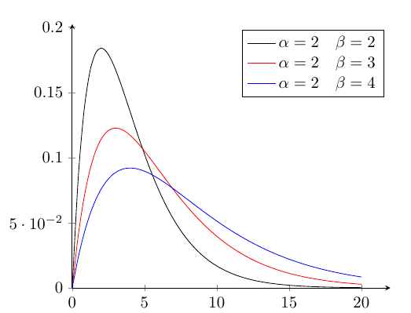
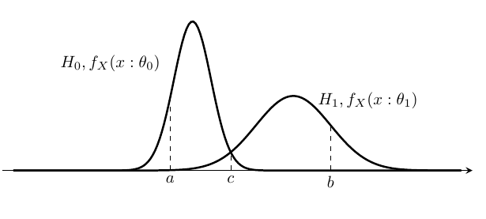

準備
対象を数学である使うためには,集合にて対象を扱う準備が要る.
集合論
集合の定義
数学で扱う対象の集まりを集合といい,その集合を構成する対象を元,要素と言う.集合\( A \)に要素\( a \)が属するとき,
\[
a \in A
\]
と表す.
集合\( A \)に要素\( a \)が属さないときは,
\[
a \notin A
\]
と表す.
何も要素を持たない集合を空集合といい,\( \emptyset \)で表す.
\[
\forall a \notin \emptyset
\]
集合の演算
集合の等しさ
冪集合
とある集合の部分集合をすべて集めた集合を冪集合いう,集合\(A\)の冪集合を\(\mathfrak{P}(A)\)と表記する.\(2^A\)とも表記する.
写像・関数
写像・関数
2つの集合の\(X,Y\)の要素\( \forall x \in X, \forall y \in Y \)において,\(x\)に\(y\)を唯一つ対応させる写像(関数)\(f\)を \[ f: X \mapsto Y \] で定義する.\(X\)を定義域,\(Y\)を値域という. \[ y = f(x) \] と書いたとき,\(y\)を\(f\)による\(x\)の値という. \(A \subset X, B \subset Y\)のとき \[ B = f(A) \] ならば,\(B\)を\(f(A)\)の像という.
グラフ
集合族
ある条件で集められた集合族を以下の様の表す. \[ \{X_i\} _{P(i)} = \{X_i|P(i)\} \]
直和
集合\(\forall i,j \in \mathbb{N},\:X_i,X_j\)対して, \(i \not= j\)のとき\(X_i \cap X_j = \emptyset\)であるばあい,\(X_i,X_j\)は互いに素という.これの集合族の和集合を直和,非交差和と言い,\(\forall I \subset \mathbb{N}\)として \[ \coprod _{i \in I} X_i := \bigcup _{i \in I} X_i \] \[ \sum _{i \in I} X_i := \bigcup _{i \in I} X_i \] などと表す,上記演算子が集合に適用されているとき,暗黙に対象の集合は互いに素である.
空間
集合に構造を与えたものを空間という.構造とは,集合の要素間の関係性を定めたものである.
集合\(X\)の部分集合\(X_i\)を取り出す.そこから,同じ関係性を持った部分集合\(Y_i=\{X_i|i \in I\}\)を作成し,この\(Y_i\)を集めた集合\(\mathcal{Y}\)を作る.
構造は,\(X \mapsto \mathcal{Y}\)となる写像である.\((X,\mathcal{Y}\)と書き,\(\mathcal{Y}\)を\(X\)上の構造と言い,\((X,\mathcal{Y})\)を空間と言う.
空間の例
順序空間
位相空間
測度
数学において,対象を測るということは,集合の大きさ得るということである. そのための関数を測度と言う. 測る対象の集合が測ることが可能なら可測といい, その集合を可測集合と言う.
準備
以下のように自然数,実数などの集合を定義する.
- \(\mathbb{N} = \{0,1,2,\dots\} \)
- \(\mathbb{N}_+ = \{1,2,\dots\} \)
- \(\overline{\mathbb{N}} = \mathbb{N} \cup \{ +\infty \} \)
- \(\overline{\mathbb{N}_+} = \{1,2,\dots\} \cup \{ +\infty \} \)
- \(\mathbb{R} = \{x|実数\} \)
- \(\mathbb{R}^d = \prod_{i=1}^{d} \mathbb{R} \)
- \(\mathbb{R}_+ = \{x|x \geq 0 の実数\} \)
- \(\overline{\mathbb{R}} = \{x|実数\}\cup \{-\infty,+\infty \} \)
- \(\overline{\mathbb{R}_{+}} = \mathbb{R}_{+} \cup \{+\infty\} \)
測度
測度 : 集合\( S \)から集合\(\overline{\mathbb{R}_{+}} = \{x| 0 \leq x \leq \infty \} = [0,\infty]\)の 部分集合\(D \subset \overline{ \mathbb{R} } \)への写像である. \[ m: S \mapsto D \] 集合\(E \in \mathfrak{P}(S) \)が可測なら,\(m(E)\)は集合\(D\)に属する値(要素)が定まる.
可測
指示関数(定義関数)
\(A \subset X\)に対して,以下のように定義される関数\(I_A: A \mapsto \{0,1\}\)を指示関数(定義関数)と言う. \[ I_A(a) = \left\{ \begin{array}{ll} 1 & a \in A \\ 0 & a \not \in A \end{array} \right. \] 要素が集合に属しているかを判定する関数である.
有限加法族
- 有限加法族\(\mathcal{L}\)
- \( \emptyset \in \mathcal{L} \)
- \( \forall A \in \mathcal{L} \to A^c \in \mathcal{L} \)
- \(A_i \in \mathcal{L},i \in I=\{1,2,\dots\} \to \displaystyle \forall i,j \in I, i \not = j, A_i \cup A_j \in \mathcal{L} \)
完全加法族
- 完全加法族\(\mathcal{F}\) (\(\sigma\)-加法族)
- \( \emptyset \in \mathcal{F} \)
- \( \forall A \in \mathcal{F} \to A^c \in \mathcal{F} \)
- \(A_i \in \mathcal{F},i \in I=\{1,2,\dots\} \to \displaystyle \bigcup_{i \in I} A_i \in \mathcal{F} \)
可測集合
可測である集合を可測集合という.
ボレル集合体
ルベーグ可測集合
可測関数
収束定理
測度空間
\(X\)を集合, \(\emptyset \in \mathcal{X} \subset \mathfrak{B}(X)\), \(m:\mathcal{X} \to \overline{\mathbb{R}_{+}}\) とする. 空間\((X,\mathcal{X})\)で,以下の性質を定義する.
非負性
\[ \forall X \in \mathcal{X},\;0=m(\emptyset) \leq m(X) \leq \infty \tag{m.1} \]
可算加法性
\(\{X_n\} _{n \geq 0}\)にて集合族の要素が互いに素であるとき, \[ \{X_n\} _{n \geq 0} \subset \mathcal{X},\; A_0=\bigcup^{\infty} _{n \geq 1} X_n \] ならば \[ m(X_0) = \sum^{\infty} _{n \geq 1} m(X_n) \tag{m.2} \]
完全加法性,\(\sigma\)-加法性とも言う. \(\mathcal{X}\)が完全加法族なら関数\(m\)は測度といい,\((X,\mathcal{X},m)\)を測度空間という.
単調増大列・単調減少列
\(\{X _n\} _{n \geq 0}\)にて,
\[ X_n \subset X_{n+1} \]
であるような集合列を単調増大列といい,
\[ X_n \supset X_{n+1} \]
であるような集合列を単調減少列という.
測度空間の性質
空間\((X,\mathcal{X})\)は以下の性質を持つ.ここでは,\(\mathcal{X}\)を可測であるが完全加法族と制約しない.
有限加法性
\(i,n \in \mathbb{N},\;\{X_i\}_{0 \leq i \leq n} \subset \mathcal{X}\)としたとき, \[ m(\bigcup^{n} _{i=0} X_i) = m(\coprod^{n} _{i=0} X_i) = \sum^{n} _{i=0} m(X_i) \tag{m.3} \]
- 証明
\(X_n = \emptyset, n > i \)としたとき, \[ \bigcup^{\infty} _{i=0} X_i = \left(\bigcup^{n} _{i=0} X_i\right) \cup \left( \bigcup^{\infty} _{i = n} \emptyset \right) = \coprod^{n} _{i=0} X_i \] 可算加法性より \[ m(\bigcup^{n} _{i=0} X_i) = \sum^{n} _{i=0} m(X_i) \]
単調性
\[ X_1,X_2 \in \mathcal{X}かつ X_1 \subset X_2 なら, m(X_1) \leq m(X_2) \]
- 証明
\(X_1 \subset X_2\)なら, \[ X_2 = (X_2 \backslash X_1) \cup X_1 \] 有限加法性より, \[ \begin{align} m(X_2) &= m((X_2 \backslash X_1) \cup X_1) \\ &= m(X_2 \backslash X_1) + m(X_1) \geq m(X_1) \end{align} \]
劣加法性
\(\forall i \in \mathbb{N},\; X_i \in \mathcal{X}\)としたとき, \[ m(\bigcup^{\infty}_{i=0}X_i) \leq \sum^{\infty} _{i=0} m(X_i) \tag{m.3} \]
- 証明
\[
Y_0 = X_0,\;Y_i = X_i \backslash (\bigcup^{i-1} _{k=0} X_k),\;i\geq1
\]
のように,\(Y_i\)を構成する.\(i \not= j\)なら,\(Y_i \cap Y_j = \emptyset\)
\[
\forall n \in \mathbb{N}, Y_i \subset X_i, \bigcup^{n} _{i=0} Y_i = \bigcup^{n} _{i=0} X_i
\]
なぜならば,\(\bigcup^{n} _{i=0} Y_i = \bigcup^{n} _{i=0} X_i\)に関して,\(n=0\)のときは自明,
\(n=1\)のとき \[ \begin{align} \bigcup^{1} _{i=0} Y_i &= \left( X_1 \backslash (\bigcup^{i-1} _{k=0} X_k) \right) \cup X_0 \\ &= (X_1 \cap X_0^c) \cup X_0 = X_1 \cup X_0 = \bigcup^{1} _{i=0} X_i\\ \end{align} \] \(n=k\)のとき \[ \begin{align} \bigcup^{k} _{i=0} Y_i &= \bigcup^{k} _{i=0} X_i \\ \end{align} \] と仮定する. \(n=k+1\)のとき, \[ \begin{align} \bigcup^{k+1} _{i=0} Y_i &= Y _{k+1} \cup \left( \bigcup^{k} _{i=0} Y_i \right) \\ &= X _{k+1} \backslash (\bigcup^{k} _{i=0} X_i) \cup \left( \bigcup^{k} _{i=0} X_i \backslash (\bigcup^{i-1} _{j=0} X_j) \right) \\ &= \left( X _{k+1} \cap (\bigcup^{k} _{i=0} X_i)^c \right) \cup (\bigcup^{k} _{i=0} X_i) \\ &= \bigcup^{k+1} _{i=0} X_i \end{align} \] となり,\(n=k+1\)で成立するので,任意の\(n\)で成立する.\(Y_i \subset X_i\)から,単調性により, \[ m(\bigcup ^{\infty} _{i=0} X_i) = m(\bigcup^{\infty} _{i=0} Y_i) = \sum^{\infty} _{i=0} m(Y_i) \leq \sum^{\infty} _{i=0} m(X_i) \]
上方連続性
\(\forall i \in \mathbb{N},\; X_i \in \mathcal{X}, X_i \subset X_{i+1}\)としたとき, \[ \lim_{i \to \infty} m(X_i) = m(\bigcup^{\infty} _{i=1} X_i) \tag{m.4} \]
- 証明 \[ Y_0 = X_0,\;Y_i = X_i \backslash (\bigcup^{i-1} _{k=0} X_k),\;i\geq1 \] のように,\(Y_i\)を構成する.\(i \not= j\)なら,\(Y_i \cap Y_j = \emptyset\). 有限加法性より, \[ \begin{align} m(\bigcup^{n} _{i=0} Y_i) &= \sum^{n} _{i=0} m(Y _i) \\ &= m(Y_0) + \sum^{n} _{i=1} m(Y _i) \\ &= m(Y_0) + \sum^{n} _{i=1} m(X _i \backslash (\bigcup^{i-1} _{k=0} X_k)) \\ &= m(Y_0) + \sum^{n} _{i=1} m(X _i \cap (\bigcup^{i-1} _{k=0} X_k)^c) \end{align} \]
\(X_i \subset X_{i+1}\)であるので,
\[ \begin{align} m(Y_0) + \sum^{n} _{i=1} m(X_i \cap (\bigcup^{i-1} _{k=0} X_k)^c) &= m(Y_0) + \sum^{n} _{i=1} m(X _i \cap {X _{i-1}}^c) \\ &= m(X_0) + \sum^{n} _{i=1} \{ m(X _i) - m({X _{i-1}}) \} = m(X_n) \end{align} \]
\(\bigcup^{n} _{i=0} Y_i = \bigcup^{n} _{i=0} X_i\)なので,
\[ m(\bigcup^{n} _{i=0} Y_i) = m(\bigcup^{n} _{i=0} X_i) = m(X_n) \]
から\(n \to \infty\)としても,\( \lim_{n \to \infty} m(X_n) = m(\bigcup^{\infty} _{i=1} X_i)\)が成立する.
下方連続性
\(\forall i \in \mathbb{N},\; X_i \in \mathcal{X}, X_i \supset X_{i+1}, m(X_i) < \infty\)としたとき, \[ \lim_{i \to \infty} m(X_i) = m(\bigcap^{\infty} _{i=1} X_i) \tag{m.4} \]
- 証明
\[ Y_0 = X_0,\;Y_i = (\bigcup^{i-1} _{k=0} X_k) \backslash X_i,\;i\geq 1 \]
のように,\(Y_i\)を構成する.\(i \not= j\)なら,\(Y_i \cap Y_j = \emptyset\).
まず, \[ X_0 = \left( X_0 \cap \left( \bigcap^{\infty} _{i=1} X_i \right)^c \right) \cup \left( \bigcap^{\infty} _{i=1} X_i \right) \] から, \[ \begin{align} m(X_0) &= m\left(\left( X_0 \cap \left( \bigcap^{\infty} _{i=1} X_i \right)^c \right) \cup \left( \bigcap^{\infty} _{i=1} X_i \right)\right) \\ &= m\left( X_0 \cap \left( \bigcap^{\infty} _{i=1} X_i \right)^c \right) + m\left( \bigcap^{\infty} _{i=1} X_i \right) \end{align} \]
\( X_i \supset X_{i+1} \)なので,\(Y_i = X_0 \backslash X_i\). \[ \begin{align} m\left( X_0 \cap \left( \bigcap^{\infty} _{i=1} X_i \right)^c \right) + m\left( \bigcap^{\infty} _{i=1} X_i \right) &= m(Y_i) + m\left( \bigcap^{\infty} _{i=1} X_i \right) \\ m(X_0) &= m(Y_i) + m\left( \bigcap^{\infty} _{i=1} X_i \right) \end{align} \]
さらに,\( X_{i+1} \subset X_{i} \subset X_0 \)なので,\(Y_{i+1} = X_0 \backslash X_{i+1} \supset X_0 \backslash X_{i} = Y_{i} \) から,上方連続性より \[ \begin{align} m(\bigcup ^{\infty} _{i=0} Y _i) &= \lim _{i \to \infty} m(Y _i) \\ &= \lim _{i \to \infty} m(X_0 \backslash X_i) \\ &= m(X_0) - \lim _{i \to \infty} m(X_i) \\ m(X_0) &= m(\bigcup ^{\infty} _{i=0} Y _i) + \lim _{i \to \infty} m(X_i) \end{align} \] より,
\[ m(\bigcap^{\infty} _{i=0} X _i) = \lim _{i \to \infty} m(X_i) \]
極限
上極限集合・下極限集合
\(\forall i \in \mathbb{N},\; X_i \in \mathcal{X}\)としたとき, \[ \limsup _{i \to \infty} X_i = \bigcap ^{\infty} _{i=0} \bigcup^{\infty} _{j=i} X_j \] を上極限集合と言う. \[ \begin{align} \bigcap ^{\infty} _{i=0} \bigcup^{\infty} _{j=i} X_j &= \{x|\forall i \geq 0, x \in \{x| \exists j \geq i, x \in X_j \}\} \\ &= \{x|\forall i \geq 0, \exists j \geq i, x \in X_j \}\} \end{align} \] であり,上極限集合の元は,\(\forall i \in \mathbb{N},\; X_i\)のすべてに含まれる元である.
\[ \liminf _{i \to \infty} X_i = \bigcup ^{\infty} _{i=0} \bigcap^{\infty} _{j=i} X_j \] を下極限集合と言う. \[ \begin{align} \bigcup ^{\infty} _{i=0} \bigcap^{\infty} _{j=i} X_j &= \{x|\exists i \geq 0, x \in \{x| \forall j \geq i, x \in X_j \}\} \\ &= \{x|\exists i \geq 0, \forall j \geq i, x \in X_j \}\} \end{align} \] であり,下極限集合の元はとある\(i\)が存在し,\(\forall j \geq i, X_j\)のすべてに含まれる元である. \(\forall k < i, X_k\)なる\(X_k\)に,対象の元が含まれるかどうかは問わない.
\[ \liminf _{i \to \infty} X_i = \limsup _{i \to \infty} X_i \] が成立するとき,\(\lim _{i \to \infty} X_i\)と書く.
上極限集合,下極限集合は以下のような性質を持つ.
-
\(\liminf _{i \to \infty} X_i \subset \limsup _{i \to \infty} X_i\)
- 証明
\[ \begin{align} \liminf _{i \to \infty} X_i & \subset \limsup _{i \to \infty} X_i \\ \bigcup ^{\infty} _{i=0} \bigcap^{\infty} _{j=i} X_j & \subset \bigcap ^{\infty} _{i=0} \bigcup^{\infty} _{j=i} X_j \\ \forall x, (x \in \bigcup ^{\infty} _{i=0} \bigcap^{\infty} _{j=i} X_j &\to x \in \bigcap ^{\infty} _{i=0} \bigcup^{\infty} _{j=i} X_j) \\ x \in \bigcup ^{\infty} _{i=0} \{x|\forall j \geq i (x \in X_j)\} &\to x \in \bigcap ^{\infty} _{i=0} \{x|\exists j \geq i (x \in X_j)\} \\ x \in \{x|\exists i \geq 0 \{x|\forall j \geq i (x \in X_j)\} \} &\to x \in \{x| \forall i \geq 0 \{x|\exists j \geq i (x \in X_j)\}\} \\ x \in \{x|\forall j \geq i (x \in X_j)\} &\to x \in \{x|\exists j \geq i (x \in X_j)\} \\ x \in \bigcap^{\infty} _{j=i} X_j &\to x \in \bigcup^{\infty} _{j=i} X_j \\ \end{align} \]
- 証明
-
\(X_i\)が単調増大列のとき,\(\lim _{i \to \infty} X_i = \bigcup ^{\infty} _{i=0} X_i\), \(X_i\)が単調減少列のとき,\(\lim _{i \to \infty} X_i = \bigcap ^{\infty} _{i=0} X_i\).
-
証明
\(X_i\)が単調増大列のとき, \[ \limsup _{i \to \infty} X _i = \bigcup ^{\infty} _{i=0} X_i \] が成立する.なぜならば,\(X_i\)が単調増大列なので, \[ \begin{align} \limsup _{i \to \infty} X _i &= \lim _{n \to \infty} \left( \left( \bigcup^{\infty} _{j=0} X_j \right) \cap \left( \bigcup^{\infty} _{j=1} X_j \right) \cap \dots \cap \left( \bigcup^{\infty} _{j=n} X_j \right) \right) \\ &= \bigcup ^{\infty} _{i=0} X_i \end{align} \] また, \[ \liminf _{i \to \infty} X _i = \bigcup ^{\infty} _{i=0} X_i \] が成立する. \begin{align} \liminf _{i \to \infty} X _i &= \lim _{n \to \infty} \left( \left( \bigcap^{\infty} _{j=0} X_j \right) \cup \left( \bigcap^{\infty} _{j=1} X_j \right) \cup \dots \cup \left( \bigcap^{\infty} _{j=n} X_j \right) \right) \\ &= \lim _{n \to \infty} \left( X_0 \cup X_1 \cup \dots \cup X_n \right) \\ &= \bigcup ^{\infty} _{i=0} X_i \end{align} から,\(X_i\)が単調増大列のとき,\(\lim _{i \to \infty} X_i = \bigcup ^{\infty} _{i=0} X_i\)\(X_i\)が単調減少列のとき, \[ \limsup _{i \to \infty} X _i = \bigcap ^{\infty} _{i=0} X_i \] が成立する.なぜならば,\(X_i\)が単調減少列なので, \begin{align} \limsup _{i \to \infty} X _i &= \lim _{n \to \infty} \left( \left( \bigcup^{\infty} _{j=0} X_j \right) \cap \left( \bigcup^{\infty} _{j=1} X_j \right) \cap \dots \cap \left( \bigcup^{\infty} _{j=n} X_j \right) \right) \\ &= \lim _{n \to \infty} \left( X_0 \cap X_1 \cap \dots \cap X_n \right) \\ &= \bigcap ^{\infty} _{i=0} X_i \\ \end{align} また, \[ \liminf _{i \to \infty} X _i = \bigcap ^{\infty} _{i=0} X_i \] が成立する. \[ \begin{align} \liminf _{i \to \infty} X _i &= \lim _{n \to \infty} \left( \left( \bigcap^{\infty} _{j=0} X_j \right) \cup \left( \bigcap^{\infty} _{j=1} X_j \right) \cup \dots \cup \left( \bigcap^{\infty} _{j=n} X_j \right) \right) \\ &= \bigcap ^{\infty} _{i=0} X_i \end{align} \] から,\(X_i\)が単調減少列のとき\(\lim _{i \to \infty} X_i = \bigcap ^{\infty} _{i=0} X_i\)
-
Borel-Cantelliの定理
- \(\mathcal{X}\)を完全加法族とする.\(\{X_i\}_{i \geq 0} \subset \mathcal{X}\),
\( i _0 \in \mathbb{N} \),
\( \sum _{i \geq i _0} m(X _i) < \infty \)なら,
\(m(\limsup _{i \to \infty} X_i)=0\)
- 証明
劣加法性より, \[ m(\bigcup^{\infty}_{i = i_0} X_i) \leq \sum _{i \geq i_0} m(X_i) \] \[ m(\limsup _{i \to \infty} X_i) = m(\bigcap^{\infty} _{i=0} \bigcup^{\infty} _{j=i} X_j) \] \(Y_i = \bigcup^{\infty} _{j=i} X_j\)と置くと,\(Y_i\)は単調減少列である.よって,下方連続性と \( \sum _{i \geq i _0} m(X _i) < \infty \)の仮定により, \[ \begin{align} m(\bigcap ^{\infty} _{i=0} \bigcup ^{\infty} _{j=i} X_j) &= m(\bigcap ^{\infty} _{i=0} Y _i) \\ &= \lim _{i \to \infty} m(Y _i) \\ &= \lim _{i \to \infty} m(\bigcup ^{\infty} _{j=i} X _j) \\ &\leq \lim _{i \to \infty} \sum ^{\infty} _{j=i} m(X _j) = 0 \\ \end{align} \]
- 証明
Lebesgue積分
Fubiniの定理
-
\(f: X _1 \times X _2 \mapsto \overline{\mathbb{R} _{+}} \)を\(\mathcal{F} _{X _1} \times \mathcal{F} _{X _2}\)可測関数とする時, \[ F_1(x _1) = \int _{X _2} f(x _1,x _2)m _2 (dx_2), F_2(x _2) = \int _{X _1} f(x _1,x _2)m _1 (dx _1) \] \(F_1(x _1),F_2(x _2)\)は,ぞれぞれ\(\mathcal{F} _{X _1}, \mathcal{F} _{X _2}\)可測で,
\[ \begin{align} \iint _{X _1 \times X _2} f(x _1,x _2) (m _1 \times m _2)(dx_1,dx_2) &= \int _X \left(\int _Y f(x _1, x _2) m_2(dx_2)\right) m_1(dx_1) \\ &= \int _Y \left(\int _X f(x _1, x _2) m_1(dx_1)\right) m_2(dx_2) \end{align} \]
-
\(f: X _1 \times X _2 \mapsto \overline{\mathbb{R}} \)が\(\mathcal{F} _{X _1} \times \mathcal{F} _{X _2}\)可積分ならば,\(m _1\)が\(x\)で概収束するなら,\(f(x,y)\)は\(m _2\)可積分,\(m _2\)が\(y\)で概収束するなら,\(f(x,y)\)は\(m _1\)可積分である.さらに, \[ F_1(x _1) = \int _{X _2} f(x _1,x _2)m _2 (dx_2), F_2(x _2) = \int _{X _1} f(x _1,x _2)m _1 (dx _1) \] \[ \begin{align} \iint _{X _1 \times X _2} f(x _1,x _2) (m _1 \times m _2)(dx_1,dx_2) &= \int _X \left(\int _Y f(x _1, x _2) m_2(dx_2)\right) m_1(dx_1) \\ &= \int _Y \left(\int _X f(x _1, x _2) m_1(dx_1)\right) m_2(dx_2) \end{align} \]
確率
偶然性を数学で扱うための定式化が確率論である. 数学で定式化するには,偶然性を伴う事象を集合論に割り当てないと行けない.
事象
集合論との対応付
集合論で扱うためには,偶然性を含む行為で得られる結果を対象としないといけない. 偶然性を含む行為で対象を得ることを試行と言う.偶然性を含む行為とは具体的には,実験,調査,観測である.1回の試行から得られた結果の値を,単一事象,観測値などと言う.これが,集合の要素に当たり,単一事象の集合を事象という. 試行により得られる全単一事象の集合を標本空間,全事象といい,\(\Omega\)で表す.ある事象\(A\)は全事象の部分空間である. \[ A \subset \Omega \]
事象の演算
事象も集合と同じ演算が行える.
- 積事象 \( A \cap B \) 事象\( A, B\)がともに起こる.
- 和事象 \( A \cup B \) 事象\( A, B\)どちらかが起こる.
- 余事象 \( A^c \) 事象\( A \)ではない事象が起こる.
- 空事象 \( \emptyset \) 単一事象を全く含まない事象.
これらから,以下を定義する.
- 差事象 \(A \backslash B = A \cap B^c\)
- 対称差 \(A \Delta B = (A \backslash B) \cup (B \backslash A)\)
事象\(A,B\)にて,\( A \cap B = \emptyset \)ならば,事象\(A,B\)は互いに排反である.
集合の演算と同様,交換律,結合律,分配律が成立する.
- 交換律
- \( A \cap B = B \cap A, A \cup B = B \cup A \)
- 結合律
- \( A \cap B \cap C = (A \cap B) \cap C = A \cap (B \cap C) \)
- \( A \cup B \cup C = (A \cup B) \cup C = A \cup (B \cup C) \)
- 分配律
- \( A \cap (B \cup C) = (A \cap B) \cup (A \cap C) \)
- \( A \cup (B \cap C) = (A \cup B) \cap (A \cup C) \)
集合の演算と同様,ド・モルガン則が成立する.
- \( (A \cap B)^c = A^c \cup B^c \)
- \( (A \cup B)^c = A^c \cap B^c \)
事象の極限
集合の極限同様,事象にも極限がある. \( \{A _i\} _{i \in \overline{\mathbb{N}}}, A _i \in \Omega \)と事象列とする.
上極限事象
\[ \limsup _{i \to \infty} A_i = \bigcap ^{\infty} _{i=0} \bigcup^{\infty} _{j=i} A_j \]
と定義し,事象\(A_i\)が無限回発生する事象である.
下極限事象
\[ \liminf _{i \to \infty} A_i = \bigcup ^{\infty} _{i=0} \bigcap^{\infty} _{j=i} A_j \]
と定義し,無限回の試行で,\(\forall i \in \overline{\mathbb{N}}, A _i\)である事象が 有限回で発生する事象である.
確率空間
事象の確率は,全事象の内でその事象が発生,観測できる割合で表される.なので,\([0,1]\)の間の値で表される.なので,事象の確率を得る関数\(P(\cdot)\)は, \[ P: \Omega \mapsto [0,1] \] で定義される写像である.\(P(A)\)は事象\(A\)の確率である.
関数\(P(\cdot)\)は集合の大きさを測る関数なので,測度となる.なので,事象は可測集合だけで構成されているのが良い.可測集合にするには,可測なるような構造を与えないといけない. 以下のような,完全加法族,(\(\sigma\)-加法族)をあたえると,集合は可測となる. \(\Omega\)に測度\(P\)を与えた空間を確率空間と言う.
確率測度
標本空間
全事象\(\Omega\)に完全加法族\(\mathcal{F}\)を与えると,標本空間\((\Omega,\mathcal{F})\)得る.したがって,以下の条件を満たす. \[ \emptyset \in \mathcal{F} \tag{O.1} \] \[ \forall A \in \mathcal{F} \land A \subset \Omega \to A^c \in \mathcal{F} \tag{O.2} \] \[ A_i \in \mathcal{F},i \in \overline{\mathbb{N}} \to \displaystyle \bigcup_{i}^{\infty} A_i \in \mathcal{F} \tag{O.3} \]
上記条件より
- \( \mathcal{F} \subset \mathfrak{P}(\Omega) \) (\(\mathcal{F}\)は全事象\(\Omega\)の部分集合全体の内,可測であるものだけから構成される.)
- \(\emptyset^c \in \mathcal{F} \to \Omega \in \mathcal{F} \)
確率測度
事象から確率を得る関数\(P:\Omega \mapsto [0,1]\)を確率測度と言う. 確率測度は以下の条件を満たす.
\[ \begin{align} & \forall A \in \mathcal{F} \to P(A) \in [0,1] \tag{PM.1} \\ & P(\Omega) = 1 \tag{PM.2} \\ & \forall i,j \in \overline{\mathbb{N}}, \forall A_i, A_j ( A_i, A_j \in \mathcal{F}, i \not = j \to A_i \cap A_j = \emptyset) \to P(\displaystyle \bigcup_{i}^{\infty} A_i) = \sum_{i}^{\infty} P(A_i) \tag{PM.3} \end{align} \]
(PM.3)は確率測度での完全加法性,\(\sigma\)-加法性という.
確率測度に事象を入れると確率が得られる.事象に対する分布が得られるので,確率分布とも言う.
確率測度の性質
確率測度は一般の測度性質を受け継ぐ. 以下,\(\mathcal{F}\)を完全加法族,\(P\)を
有限加法性
事象の列\(A_k \in \mathcal{F},k=1,2,\dots\)とした時
\[ P(\bigcup^{n} _{k=1} A_k) = P(\coprod^{n} _{k=1} A_k) = \sum^{n} _{k=1} P(A_k) \tag{PM.4} \]
- 証明
測度空間の有限加法性の証明と同様
単調性
\[ A_1,A_2 \in \mathcal{F} \land A_1 \subset A_2 \to P(A_1) \leq P(A_2) \tag{PM.5} \]
- 証明
測度空間の単調性の証明と同様
事象の列\(A_k \in \mathcal{F},k=1,2,\dots\)について, \[ A_k \subset A_{k+1} \] を満たすとき単調増大列といい, \[ A_k \supset A_{k+1} \] を満たすとき単調減少列という.
劣加法性
事象の列\(A_k \in \mathcal{F},k=1,2,\dots\)とした時 \[ P(\bigcup^{\infty}_{k=0}A_k) \leq \sum^{\infty} _{i=0} P(A_k) \tag{PM.6} \]
- 証明 測度空間の劣加法性の証明と同様
上方連続性
事象の列\(A_k \in \mathcal{F},k=1,2,\dots\)が単調増大列のとき \[ P(\bigcup^{\infty} _ {k=1} A_k) =\lim_{k \to \infty} P(A_k) \tag{PM.7} \] が成立しこれを上方連続性という.
- 証明
測度空間の上方連続性の証明と同様
下方連続性
事象の列\(A_k \in \mathcal{F},k=1,2,\dots\)が単調減少列のとき \[ P(\bigcap^{\infty} _ {k=1} A_k) = \lim_{k \to \infty} P(A_k) \tag{PM.8} \] が成立しこれを下方連続性という.
- 証明
測度空間の下方連続性の証明と同様
確率の演算
確率測度の演算
\(\forall A,B \in \mathcal{F}\)に対して,以下が成立する.
\[ \begin{align} & P(A^c) = 1 - P(A) \tag{P.1} \\ & A \subset B \to P(A) \leq P(B) \tag{P.2} \\ & P(A \cup B) = P(A) + P(B) - P(A \cap B) \tag{P.3} \end{align} \]
証明は以下の通り,
-
(P.1) \[ \begin{align} &({\rm O}.2) \to A \cup A^c = \Omega \Rightarrow \\ & ({\rm M}.2) \to P(A \cup A^c) = P(\Omega) = 1 \Rightarrow \\ & ({\rm M}.3) \to P(A)+P(A^c) = 1 \Rightarrow \\ & P(A^c) = 1-P(A) \end{align} \]
-
(P.2) \[ \begin{align} & A \subset B \to B = A \cup (B \cap A^c) \land \emptyset = A \cap (B \cap A^c) \Rightarrow \\ & P(B) = P(A \cup (B \cap A^c)) = P(A) + P(B \cap A^c) \Rightarrow\\ & ({\rm M}.1) \to P(A) \leq P(B) \end{align} \]
-
(P.3) \[ \begin{align} P(A \cup B) &= P(((A \cup B) \cap (A \cap B)^c) \cup (A \cap B)) \\ &= P(((A \cup B) \cap (A \cap B)^c))+P(A \cap B) \\ &= P((A \cap (A \cap B)^c) \cup (B \cap (A \cap B)^c))+P(A \cap B) \\ &= P(A \cap (A \cap B)^c) + P(B \cap (A \cap B)^c)+P(A \cap B) \\ &= P((A^c \cup (A \cap B))^c) + P((B^c \cup (A \cap B))^c)+P(A \cap B) \\ &= 2-P(A^c \cup (A \cap B)) - P(B^c \cup (A \cap B))+P(A \cap B) \\ &= 2-P(A^c) - P(A \cap B) - P(B^c) -P(A \cap B)+P(A \cap B) \\ &= 1 - P(A^c) + 1 - P(B^c) - P(A \cap B) \\ &= P(A) + P(B) - P(A \cap B) \\ \end{align} \]
条件付き確率
2つの事象\(A,B\)にて\(P(B) > 0 \)のとき \[ P(A|B) = \frac{P(A \cap B)}{P(B)} \] と表したものを\(B\)を与えたときの\(A\)の条件付き確率と言う. \(B\)を与えたときとは\(B\)が発生したということが分かっているということである. 上記式から, \[ \begin{align} P(A \cap B) &= P(A|B)P(B) \\ P(A \cap B) &= P(B|A)P(A), P(A) > 0 \\ \end{align} \]
乗法定理
\(A_1,A_2,\dots,A_n\)の\(n\)個の事象の積事象の確率は, \[ P(A_1 \cap A_2 \cap \dots \cap A_n) = P(A_n|A_1 \cap A_2 \cap \dots \cap A_{n-1}) \cdots P(A_2|A_1) P(A_1) \] となり,これを乗法定理という
- 証明
\(n = 1\)のときは自明
\(n = 2\)のとき \[ P(A_2 \cap A_1) = P(A_2 | A_1)P(A_1) \] \(n = k\)のとき \[ P(A_1 \cap A_2 \cap \dots \cap A_k) = P(A_k|A_1 \cap A_2 \cap \dots \cap A_{k-1}) \cdots P(A_2|A_1) P(A_1) \] が成立すると仮定する.
\(n = k+1\)のとき \[ \begin{align} P(A_{k+1}|A_1 \cap A_2 \cap \dots \cap A_{k}) &= \frac{P(A_1 \cap A_2 \cap \dots \cap A_{k+1})}{P(A_1 \cap A_2 \cap \dots \cap A_{k})} \\ P(A_1 \cap A_2 \cap \dots \cap A_{k+1}) &= P(A_1 \cap A_2 \cap \dots \cap A_{k})P(A_{k+1}|A_1 \cap A_2 \cap \dots \cap A_{k}) \end{align} \] \(n=k\)のときの式を代入し \[ \begin{align} P(A_1 \cap A_2 \cap \dots \cap A_{k+1}) &= P(A_1 \cap A_2 \cap \dots \cap A_{k})P(A_k|A_1 \cap A_2 \cap \dots \cap A_{k-1}) \cdots P(A_2|A_1) P(A_1) \end{align} \]
全確率の公式
事象\(B_1,B_2,\dots,B_n\)を互いに排反な事象とする,\(P(B_i)>0,i=1,2,\dots,n\)かつ\(\bigcup^{n} _ {i=1} B_i = \Omega\)のとき \[ P(A) = \sum^{\infty}_{i=1} P(A|B_i)P(B_i) \] が成立する.これを全確率の公式という.
- 証明
\(A = A \cap \Omega = A \cap \bigcup^{n} _ {i=1} B_i = \bigcup^{n} _ {i=1} A \cap B_i \)で\(B_i\)が互いに排反なので, \[ \begin{align} P(\bigcup^{n} _ {i=1} A \cap B_i) &= \sum^{n}_{i=1} P(A \cap B_i) \\ &= \sum^{n} _{i=1} P(A|B_i)P(B_i) \end{align} \]
Bayesの定理
事象\(B_1,B_2,\dots,B_n\)を互いに排反な事象とする,\(P(B_i)>0,i=1,2,\dots,n\)かつ\(\bigcup^{n} _ {i=1} B_i = \Omega\)のとき,\(A\)を与えたときの\(B_j\)の確率は, \[ P(B_j|A) = \frac{P(A|B_j)P(B_j)}{\sum^{n} _{i=1} P(A|B_i)P(B_i)} \] となる.
- 証明
\[ \begin{align} \frac{P(A|B_j)P(B_j)}{\sum^{n} _{i=1} P(A|B_i)P(B_i)} &= \frac{P(A|B_j)P(B_j)}{P(A)} \\ &= \frac{P(A \cap B_j)}{P(B_j)}\frac{P(B_j)}{P(A)} \\ &= P(B_j|A) \\ \end{align} \]
独立
事象\(A,B\)に関連性がない場合,\(B\)の確率に\(A\)の確率が影響しない場合,条件付き確率は,\(P(B|A)=P(B)\)となる.であるので, \[ P(A \cap B) = P(A)P(B) \] が成立するとき,事象\(A,B\)は独立していると言い.事象\(A,B\)の独立性とも言う.
確率空間
標本空間と確率測度をまとめたものを確率空間と言う.\((\Omega,\mathcal{F},P)\)で表す.
Borel-Cantelliの定理
\(\{A_i\} _{i \in \overline{\mathbb{N}}} \)を\((\Omega,\mathcal{F},P)\)上の事象とする.
Borel-Cantelliの定理 1
\[ \sum _{i \in \overline{\mathbb{N}}} P(A_i) < \infty \to P(\limsup _{i \to \infty} A_i) = 0 \land P(\liminf _{i \to \infty} (\Omega \backslash A_i)) = 1 \]
-
証明
\(P(\limsup _{i \to \infty} A_i) = P(\bigcap ^{\infty} _{i=0} \bigcup^{\infty} _{j=i} A_j)\)なので, \[ \begin{align} P(\bigcap ^{\infty} _{i=0} \bigcup^{\infty} _{j=i} A_j) &= \lim _{i \to \infty} P(\bigcup ^{\infty} _{j=0} A_j \cap \bigcup ^{\infty} _{j=1} A_j \cap \cdots \cap \bigcup ^{\infty} _{j=i} A_j) \\ &= \lim _{i \to \infty} P(\bigcup ^{\infty} _{j=i} A_j) \leq \lim _{i \to \infty} \sum ^{\infty} _{j=i} P(A_j) = 0 \end{align} \] より, \(P(\limsup _{i \to \infty} A_i) = 0\)
\(P(\liminf _{i \to \infty} A_i) = P(\bigcup ^{\infty} _{i=0} \bigcap^{\infty} _{j=i} (\Omega \backslash A_i))\)なので, \[ \begin{align} P(\bigcup ^{\infty} _{i=0} \bigcap^{\infty} _{j=i} (\Omega \backslash A_i)) &= P(\bigcup ^{\infty} _{i=0} \bigcap^{\infty} _{j=i} {A_i}^c) \\ &= P((\bigcap ^{\infty} _{i=0} \bigcup^{\infty} _{j=i} {A_i})^c) \\ &= P(\Omega \backslash (\bigcap ^{\infty} _{i=0} \bigcup^{\infty} _{j=i} {A_i})) \\ &= P(\Omega) - P(\bigcap ^{\infty} _{i=0} \bigcup^{\infty} _{j=i} {A_i}) = 1 \end{align} \] より,\(P(\liminf _{i \to \infty} A_i) = 1\).
証明終わり.
Borel-Cantelliの定理 1は\(\sum _{i \in \overline{\mathbb{N}}} P(A_i) < \infty\)である時,
- 無限回の試行で,事象\(A_i\)が無限回発生する確率は0である.
- 無限回の試行で,事象\(A_i\)以外の事象が有限回発生する確率は1である.
ということを保証する.
Borel-Cantelliの定理 2
\(\{A_i\} _{i \in \overline{\mathbb{N}}} \)が互いに独立な事象のとき,
\[ \sum _{i \in \overline{\mathbb{N}}} P(A_i) = \infty \to P(\limsup _{i \to \infty} A_i) = 1 \land P(\liminf _{i \to \infty} (\Omega \backslash A_i)) = 0 \]
- 証明 \[ P(\liminf _{i \to \infty} (\Omega \backslash A _i)) = P(\bigcup ^{\infty} _{i=0} \bigcap^{\infty} _{j=i} {A _j}^c) = \lim _{i \to \infty} P(\bigcap ^{\infty} _{j=i} {A _j}^c) \] ここで, \[ \begin{align} P(\bigcap ^{\infty} _{j=i} {A _i}^c) &= \lim _{k \to \infty} \prod ^{k} _{j=i} P({A _j}^c) \\ &= \prod ^{\infty} _{j=i} (1 - P(A _j)) \\ \end{align} \] \(x \in [0,1]\)のとき,\(\log(1-x) \leq -x\)から\((1-x) \leq \exp(-x)\). \[ \begin{align} \prod ^{\infty} _{j=i} (1 - P(A _j)) &\leq \prod ^{\infty} _{j=i} \exp(-P(A _j)) \\ &= \exp(-\sum ^{\infty} _{j=i} P(A _j)) = 0 \: (\because \sum _{i \in \overline{\mathbb{N}}} P(A_i) = \infty) \end{align} \] から,\(P(\bigcap ^{\infty} _{j=i} {A _i}^c) = 0\)より,\(P(\liminf _{i \to \infty} (\Omega \backslash A _i)) = 0\). \[ \begin{align} P(\limsup _{i \to \infty} A_i) &= P(((\limsup _{i \to \infty} A_i)^c)^c) \\ &= P(((\bigcap ^{\infty} _{i=0} \bigcup^{\infty} _{j=i} A_j)^c)^c) \\ &= P((\bigcup ^{\infty} _{i=0} \bigcap^{\infty} _{j=i} {A_j}^c)^c) \\ &= P(\Omega \backslash (\bigcup ^{\infty} _{i=0} \bigcap^{\infty} _{j=i} {A_j}^c)) \\ &= P(\Omega \backslash (\liminf _{i \to \infty} {A_j}^c)) \\ &= 1 - P(\liminf _{i \to \infty} {A_j}^c) = 1 \end{align} \] 証明終わり.
Borel-Cantelliの定理 2は事象が独立していて\(\sum _{i \in \overline{\mathbb{N}}} P(A_i) = \infty\)である時,
- 無限回の試行で,事象\(A_i\)が無限回発生する確率は1である.
- 無限回の試行で,事象\(A_i\)以外の事象が有限回発生する確率は0である.
ということを保証する.
確率変数
全事象に属する単一事象は,実数値とは限らない. であるので,単一事象から実数値に対応付ける関数を用意する.これを確率変数という. (関数なのに変数という...)
\[ X : \Omega \mapsto \mathbb{R} \]
単一事象\(\forall \omega \in \Omega \)を確率変数に入れた値\(X(\omega)\)をここではデータと名付ける. データは実際には観測値,測定値などに当たる. 例えば,\(\{\omega \in \Omega | X(\omega) \in A \}\)とデータがとある条件で定める集合\(A\)に属する事象を定めたとき, それが起こる確率は\(P(\{\omega \in \Omega | X(\omega) \in A\})\)で得られるが,\(P(\cdot)\)が引き取れる集合は,可測集合でなくては行けない.なので,\(\{\omega \in \Omega | X(\omega) \in A\}\)は完全加法族\(\mathcal{F}\)に属するという制約がつけられる. 一般に, \[ \begin{align} & P(X \in A) := P(\{\omega \in \Omega | X(\omega) \in A\}) \\ & P(X \leq x) := P(\{\omega \in \Omega | X(\omega) \leq x \}) \\ & P(a \leq X < b) := P(\{\omega \in \Omega | a \leq X(\omega) < b\}) \end{align} \] と略記する.
また,微小事象\(d\omega\)とすると, \[ \begin{align} P(d\omega) &:= \lim _{dx \to 0} P(\{\omega \in \Omega | x < X(\omega) \leq x+dx\}) \\ &= \lim _{dx \to 0} \{ P(X \leq x+dx) - P(X \leq x) \} \\ &= P(\{ \omega|X(\omega) = x) \}) \end{align} \] と表記し,微小事象の確率と表す.
確率密度関数
累積分布関数
\[ F_X(x) := P(X \leq x) = P(\{\omega|X(\omega) \leq x\}) \] を累積分布関数または単に分布関数と言う. 定義の通り,観測値が\(x\)以下である事象が発生する確率を得ることができる関数である. (測度から実関数への橋渡しを行う.) 任意の関数\(F(x)\)が累積分布関数になるための必要十分条件は, \(x,x_1,x_2 \in \overline{\mathbb{R}}\)に対して,以下の3つの条件が成立することである.
- \(\lim_{x \to -\infty} F(x) = 0, \; \lim_{x \to \infty} F(x) = 1\)
- \( \forall x_1, \forall x_2, x_1 < x_2 \to F(x_1) \leq F(x_2) \)
- \(\lim_{x \to a+0} F(x) = F(a) \)
2は非減少関数であること,3は関数が右連続関数であることを示す. 累積分布関数の定義より, \[ \begin{align} P(a < X) &= P(\{\omega | a < X(\omega) \}) \\ &= P(\{\omega | X(\omega) \leq a \}^c) \\ &= 1 - P(X \leq a) \\ &= 1 - F_X(a) \\ \\ P(a < X \leq b) &= P(\{\omega | X(\omega) \leq b\} \backslash \{\omega | X(\omega) \leq a \}) \\ &= P(\{\omega | X(\omega) \leq b\} \cap \{\omega | X(\omega) \leq a \}^c) \\ &= P(\{\omega | X(\omega) \leq b\}) + P(\{\omega | X(\omega) \leq a \}^c) - P(\{\omega | X(\omega) \leq b\} \cup \{\omega | X(\omega) \leq a \}^c) \\ &= P(\{\omega | X(\omega) \leq b\}) + 1 - P(\{\omega | X(\omega) \leq a\}) - P(\{\omega | X(\omega) \leq b\} \cup \{\omega | a < X(\omega) \}) \\ &= P(X \leq b) - P(X \leq a) \\ &= F_X(b) - F_X(a) \\ \end{align} \]
確率密度関数
累積分布関数の\(x\)での変化量を得ることができると,積分することにより任意の事象に対する確率が得られる.
\[ \begin{align} P(d\omega) &= \lim _ {dx \to 0} P(\{\omega| X(\omega) < x+dx\} \backslash \{\omega| X(\omega) < x\}) \\ &= \lim _ {dx \to 0} P(\{\omega| X(\omega) < x+dx\})- P(\{\omega| X(\omega) < x\}) \\ &= \lim _ {dx \to 0} F_X(x+dx) - F_X(x) \\ &= dF_X(x) \end{align} \]
\( F_X(x) \)が微分可能ならば\( \frac{dF_X(x)}{dx} = f_X(x) \)として, \(f_X(x)\)を確率密度関数と言う.
定義から, \[ P( X \leq a ) = F_X(a) = \int^a_{-\infty} f_X(x) dx \]
\[ \begin{align} P(a < X \leq b) &= F_X(b) - F_X(a) \\ &= \int^b_{-\infty} f_X(x)dx - \int^a_{-\infty} f_X(x)dx \\ &= \int^b_{a} f_X(x)dx \end{align} \]
離散的確率変数
確率質量関数
期待値
期待値
確率変数を引数に取る関数を考える.\(X=\{x | x = X(\omega) \land \omega \in \Omega \}\)と定義する. \(X\)は確率変数の取りうる値の集合となる. \[ g: X \mapsto \mathbb{R} \] を用いて, \[ \begin{align} E[g(X)] &= \int_{\Omega} g(X(\omega))P(d\omega) \\ &=\int^{\infty} _{-\infty} g(x)dP(x) \\ &= \int^{\infty} _{-\infty} g(x)\, f_X(x) dx \end{align} \] を\(g(X)\)の期待値と言う. 期待値は実測値と実測値が発生する確率の積分を事象全体で行ったもので, 一回の試行で得られる見込みの値となる.
事象を制限した期待値は \[ E[X:A] = \int _{A} X(\omega) P(d\omega) \]
と表し,\(I _{A} : \Omega \mapsto \{0,1\}\)なる集合\(A\)の指示関数を用意すると \[ E[X:A] = E[X \cdot I _{A}] = \int _{\Omega} X(\omega) I _A(\omega) P(d\omega) = \int _{A} X(\omega) P(d\omega) \] と書くことができる.
期待値の性質
期待値は線形性を持つ.\(a,b,c\)を定数とし,\(g(X),h(X)\)を確率変数をとる関数とすると,以下が成立する. \[ E[ag(X)+bh(X)+c] = aE[g(X)]+bE[h(X)]+c \]
- 証明 \[ \begin{align} E[ag(X)+bh(X)+c] &= \int^{\infty} _{-\infty} (ag(x)+bh(x)+c)f_X(x) dx \\ &= a \int^{\infty} _{-\infty} g(x) f_X(x)dx + b \int^{\infty} _{-\infty} h(x) f_X(x) dx + c \int^{\infty} _{-\infty} f_X(x) dx \\ &= aE[g(X)] + bE[h(X)] + c \end{align} \] 証明終わり.
任意の定数と\(g(x) \geq 0\)に対して, \[ \forall a > 0, E[g(x)] \geq a \int _ {g(x) \geq a} f_X(x) dx = aP(g(x) \geq a) \tag{2.3.2.1} \]
- 証明
\(\forall a > 0\)に対して, \[ \begin{align} E[g(x)] &= \int ^{\infty} _ {-\infty} g(x) f _ X(x) dx \\ &= \int_{g(x) \geq a} g(x)\, f _ X(x) dx + \int_{g(x) < a} g(x)\, f _ X(x) dx \end{align} \] 積分範囲が\(g(x) \geq a\)となる\(x\)なので, \[ \begin{align} \int_{g(x) \geq a} g(x)\, f _ X(x) dx &\geq a \int_{g(x) \geq a} f _ X(x) dx \end{align} \] から \[ \begin{align} E[g(x)] &= \int ^{\infty} _ {-\infty} g(x) f _ X(x) dx \\ &= \int_{g(x) \geq a} g(x)\, f _ X(x) dx + \int_{g(x) < a} g(x)\, f _ X(x) dx \\ &\geq \int_{g(x) \geq a} g(x)\, f _ X(x) dx \\ &\geq a \int_{g(x) \geq a} f _ X(x) dx = aP(g(x) \geq a) \end{align} \] 証明終わり.
(2.3.2.1)式をMarkovの不等式と言う.
平均・分散・モーメント
平均・分散・モーメントは,確率変数の特性を表す値である.
平均値・分散
\(g(X)=X\)としたときの期待値を平均といい, \[ \mu = E[X] \]と表す.
\(g(X)=(X-\mu)^2\)としたときの期待値を分散といい, \[ {\rm var}(X)=E[(X-\mu)^2] \] と表す.また\(\sigma = \sqrt{{\rm var}(X)}\)と置き,標準偏差という.
分散は期待値の線形性より, \[ E[(X-\mu)^2]=E[X^2-2\mu X+\mu^2] = E[X^2]-\mu^2 = E[X^2]-E[X]^2 \]
Chebyshevの不等式
確率変数\(X\)の平均を\(\mu\),分散を\(\sigma^2\)とする.\(\varepsilon \geq 0\)に対して, \[ P(|X-\mu| \geq \varepsilon) \leq \frac{\sigma^2}{\varepsilon^2} \tag{Chebyshev} \] が成立する.
- 証明
Markovの不等式にて\(g(X)=(X-\mu)^2,\,a=\varepsilon^2\)と置くと, \[ E[(X-\mu)^2] \geq \varepsilon^2 P(|X-\mu| \geq \varepsilon) \] から \[ P(|X-\mu| \geq \varepsilon) \leq \frac{\sigma^2}{\varepsilon^2} \\ \]
モーメント
\(k \in \mathbb{N},k \geq 1\)に対して, \[ E[(X-\mu)^k] = \int ^{\infty} _{-\infty} (x-\mu)^k f_X(x) dx \] を平均値周りの\(k\)次モーメントと言う.\(k=2\)の場合は分散となる. モーメントは積率とも言う.
確率母関数・積率母関数
確率関数,モーメントを生成できる関数,母関数というものを考える.
確率母関数
\[ \begin{align} G_X(t) &= E[t^X] \\ &= \int _\Omega t^{X(\omega)}P(d\omega) \\ &= \int ^{\infty} _{-\infty} t^x dP(x) \\ &= \int ^{\infty} _{-\infty} t^x f_X(x) dx \end{align} \]
積率母関数
\[ \begin{align} M_X(t) &= E[e^{tX}] \\ &= \int _\Omega e^{tX(\omega)} P(d\omega) \\ &= \int ^{\infty} _{-\infty} e^{tx} dP(x) \\ &= \int ^{\infty} _{-\infty} e^{tx} f_X(x) dx \end{align} \] 積率母関数は\(t\)に関して\(k\)階微分すると\(k\)次モーメントを得る. \[ \left. \frac{d}{dt}M_X(t) \right| _{t=0} = \left. \frac{d}{dt} \int ^{\infty} _{-\infty} e^{tx} f_X(x) dx \right| _{t=0} = \int ^{\infty} _{-\infty} x f_X(x) dx = E[X] \\ \left. \frac{d^2}{dt^2}M_X(t) \right| _{t=0} = \left. \frac{d^2}{dt^2} \int ^{\infty} _{-\infty} e^{tx} f_X(x) dx \right| _{t=0} = \int ^{\infty} _{-\infty} x^2 f_X(x) dx = E[X^2] \\ \left. \frac{d^k}{dt^k}M_X(t) \right| _{t=0} = \left. \frac{d^k}{dt^k} \int ^{\infty} _{-\infty} e^{tx} f_X(x) dx \right| _{t=0} = \int ^{\infty} _{-\infty} x^k f_X(x) dx = E[X^k] \]
特性関数
分布関数のフーリエ変換を特性関数と言う.
特性関数
確率変数\(X\)の特性関数を以下のように定義する. \[ \begin{align} \varphi _X(t) = E[e^{itX}] &= \int _{\Omega} e^{itX(\omega)} P(d\omega) \\ &= \int ^{\infty} _{-\infty} e^{itx} dF_X(x) \\ &= \int ^{\infty} _{-\infty} e^{itx} f_X(x)dx \end{align} \]
フーリエ変換の単射性により,変換元の関数と変換先の関数が1対1に対応する. 同じように,分布関数と特性関数は1対1対応するはずである. 分布関数が微分可能なら,確率密度関数も特性関数に1対1対応する. それを保証するのがLevyの反転定理である.
Levyの反転定理
\(P(\cdot)\)を確率測度とし,その特性関数を\( \varphi _X (t) \)とすると 以下が成立する.
\[ P(a < X < b) + \frac{1}{2}(P(X=a)+P(X=b)) = \lim_{T \to \infty} \frac{1}{2 \pi} \int ^{T} _{-T} \frac{e^{-ita}-e^{-itb}}{it} \varphi _X(t) dt \]
- 証明
\[ \begin{align} F(T) &= \int ^{T} _{-T} \frac{e^{-ita}-e^{-itb}}{it} \varphi _X(t) dt \\ &= \int ^{T} _{-T} \frac{e^{-ita}-e^{-itb}}{it} \int ^{\infty} _{-\infty} e^{itx} dF_X(x) dt \\ &= \int ^{\infty} _{-\infty} \int ^{T} _{-T} \frac{e^{-ita}-e^{-itb}}{it} e^{itx} dt dF_X(x) \: (Fubiniの定理より) \\ &= \int ^{\infty} _{-\infty} \int ^{T} _{-T} \frac{e^{-it(a-x)}-e^{-it(b-x)}}{it} dt dF_X(x) \\ &= \int ^{\infty} _{-\infty} \int ^{T} _{-T} \frac{\cos(t(a-x))-i\sin(t(a-x))-\cos(t(b-x))+i\sin(t(b-x))}{it} dt dF_X(x) \\ &= \int ^{\infty} _{-\infty}\left(\int ^{T} _{-T} \frac{\cos(t(a-x))-\cos(t(b-x))}{it} dt + \int ^{T} _{-T} \frac{i\sin(t(b-x))-i\sin(t(a-x))}{it} dt \right) dF_X(x) \end{align} \] \(\frac{\cos(t(a-x))-\cos(t(b-x))}{it}\)は奇関数なので,積分範囲が対称だと0になる. \[ \begin{align} &= \int ^{\infty} _{-\infty}\left(\int ^{T} _{-T} \frac{\sin(t(b-x))-\sin(t(a-x))}{t} dt \right) dF_X(x) \\ &= \int ^{\infty} _{-\infty}\left(\int ^{T} _{-T} \frac{\sin(t(b-x))}{t} dt - \int ^{T} _{-T} \frac{\sin(t(a-x))}{t} dt \right) dF_X(x) \end{align} \]
\(F(T)\)に\(\frac{1}{2\pi}\)を乗して,\(T \to \infty\)の極限を取る.
\[ \begin{align} \lim_{T \to \infty} \frac{1}{2 \pi} F(T) &= \lim_{T \to \infty} \frac{1}{2 \pi} \int ^{\infty} _{-\infty}\left(\int ^{T} _{-T} \frac{\sin(t(b-x))}{t} dt - \int ^{T} _{-T} \frac{\sin(t(a-x))}{t} dt \right) dF_X(x) \\ &= \frac{1}{2 \pi} \int ^{\infty} _{-\infty} \left(\lim _{T \to \infty} \int ^{T} _{-T} \frac{\sin(t(b-x))}{t} dt - \lim _{T \to \infty} \int ^{T} _{-T} \frac{\sin(t(a-x))}{t} dt \right) dF_X(x) \end{align} \] \(\frac{\sin(t(a-x))}{t}\)は\(t\)の関数と見ると,偶関数なので, \[ \begin{align} f_a(x) &= \lim _{T \to \infty} \int ^{T} _{-T} \frac{\sin(t(a-x))}{t} dt = \lim _{T \to \infty} 2 \int ^{T} _{0} \frac{\sin(t(a-x))}{t} dt \\ &= \left\{ \begin{array}{ll} \pi & (x < a) \\ 0 & (x = a) \\ -\pi & (x > a) \\ \end{array} \right. \end{align} \]
から, \[ \begin{align} \frac{1}{2 \pi} \int ^{\infty} _{-\infty} \left(\lim _{T \to \infty} \int ^{T} _{-T} \frac{\sin(t(b-x))}{t} dt - \lim _{T \to \infty} \int ^{T} _{-T} \frac{\sin(t(a-x))}{t} dt \right) dF_X(x) &= \frac{1}{2 \pi} \int ^{\infty} _{-\infty} (f_b(x) - f_a(x)) dF_X(x) \end{align} \]
\(f_a(x)\)は指示関数で書き直すと,\(f_a(x) = \pi (I _{x < a}(x) - I _{x > a}(x)) \) \[ \begin{align} \frac{1}{2 \pi} \int ^{\infty} _{-\infty} (f_b(x) - f_a(x)) dF_X(x) &= \frac{1}{2 \pi} \int ^{\infty} _{-\infty} (\pi (I _{x < b}(x) - I _{x > b}(x)) - \pi (I _{x < a}(x) - I _{x > a}(x))) dF_X(x) \\ &= \frac{1}{2} \int ^{\infty} _{-\infty} (I _{x > b}(x) - I _{x < b}(x) - I _{x < a}(x) + I _{x > a}(x)) dF_X(x) \\ &= \frac{1}{2} \int ^{\infty} _{-\infty} (2 I _{a < x < b}(x) + I _{x > a \land x = b}(x) + I _{x < b \land x = a}(x)) dF_X(x) \\ &= P(a < x < b) + \frac{1}{2}(P(X=a)+P(X=b)) \end{align} \]
証明終わり.
分布関数と特性関数の1対1対応
2つの分布関数\(F_{X_1},F_{X_2}\)とその特性関数を\(\varphi_{X_1},\varphi_{X_2}\)とすると, \[ F_{X_1}(x) = F_{X_2}(x),\;\forall x \in \overline{\mathbb{R}} \Leftrightarrow \varphi_{X_1}(t)=\varphi_{X_2}(t),\;\forall t \in \overline{\mathbb{R}} \]
- 証明
-
\(F_{X_1}(x) = F_{X_2}(x),\;\forall x \in \overline{\mathbb{R}} \Rightarrow \varphi_{X_1}(t)=\varphi_{X_2}(t),\;\forall t \in \overline{\mathbb{R}}\)
特性関数の定義より自明. -
\(F_{X_1}(x) = F_{X_2}(x),\;\forall x \in \overline{\mathbb{R}} \Leftarrow \varphi_{X_1}(t)=\varphi_{X_2}(t),\;\forall t \in \overline{\mathbb{R}}\)
Levyの反転定理で,\(a,b\)が連続点ならば,\(P(a) = 0, P(b) = 0\)なので, \[ \begin{align} P(a < X < b) &= F_X(b) - F_X(a) \\ &= \lim_{T \to \infty} \frac{1}{2 \pi} \int ^{T} _{-T} \frac{e^{-ita}-e^{-itb}}{it} \varphi _X(t) dt \\ \end{align} \]\(\varphi_{X_1}(t)=\varphi_{X_2}(t)\)ならば\( F_{X_1}(b) - F_{X_1}(a) = F_{X_2}(b) - F_{X_2}(a) \)が上式から得られ, 分布関数の定義より,\(a \to -\infty\)とすると,\( F_{X_1}(b) = F_{X_2}(b) \)となる.改めて, \(\varphi_{X_1}(t)=\varphi_{X_2}(t)\)ならば,\( F_{X_1}(x) = F_{X_2}(x) \)
変数変換
関数 \(g:{\mathbb R} \mapsto {\mathbb R}\)にて,確率変数\(X\)が\(Y=g(X)\)と確率変数\(Y\)に 変換されたときの\(Y\)の確率分布を確率変数\(X\)から得る方法を考える.
変数変換
確率変数\(X\)の確率密度関数を\(f_X(x)\)とし,関数\(g\)が単調増加関数で逆関数を持つとした時, 確率変数\(Y\)が,\(Y=g(X)\)と確率変数\(X\)の変換により得られる時,\(Y\)の確率密度関数は, \[ f_Y(g(x)) = \frac{f_X(x)}{g'(x)} \]
- 証明
\(Y=g(X)\)とした時,\(P(\{X \leq x\}) = P(\{Y \leq g(x)\})\)であるので, \(P(\{X \leq x\}) = F_X(x), P(\{Y \leq g(x)\}) = F_Y(g(x))\)とした時, \[ \begin{align} F _X(x) &= \int^{x} _{-\infty} f_X(x) dx \\ F _Y(g(x)) &= \int^{g(x)} _{-\infty} f_Y(g(x)) dy \\ \end{align} \] から, \[ \int^{x} _{-\infty} f_X(x) dx = \int^{g(x)} _{-\infty} f_Y(g(x)) dy \] \(y=g(x)\)として右辺の置換積分を行うと, \[ \int^{x} _{-\infty} f_X(x) dx = \int^{g(x)} _{-\infty} f_Y(g(x)) g'(x) dx \] 両辺を\(x\)について微分すると, \[ f_X(x) = f_Y(g(x)) g'(x) \] 確率変数\(X\)から,確率変数\(Y\)の分布を求めたいので, \[ \begin{align} f_Y(g(x)) &= \frac{f_X(x)}{g'(x)} \\ f_Y(y) &= \frac{f_X(x)}{g'(x)} = \frac{f_X(g^{-1}(y))}{g'(g^{-1}(y))} \end{align} \]
確率変数ベクトル
確率変数のベクトルを以下のように表す. \[ {\mathbf X} = (X_1,\dots,X_n) \] その転置を, \[ ^t{\mathbf X} =\! ^t(X_1,\dots,X_n)=\left( \begin{array}{c} X_1 \\ X_2 \\ \vdots \\ X_n \end{array} \right) \] と書く.
確率変数2次元ベクトル
まず,2次元の場合を考える.2つの確率変数\(X,Y\)を用意する. \(X=x,Y=y\)である時の確率を, \[ P(\{\omega|X(\omega)=x\} \cap \{\omega|Y(\omega)=y\}) = P(X=x,Y=y), \; x \in D_X, y \in D_Y \] とかく.2つの事象が同時に発生する確率を得ることができるので,同時確率と言う.
同時累積分布関数
1次元の時と同様に, \[ F_{X,Y}(x,y) := P(X \leq x, Y \leq y) = P(\{\omega|X(\omega)\leq x\} \cap \{\omega|Y(\omega) \leq y\}) \] を累積分布関数として定義する.2つの事象が同時に発生す分布となるので,同時累積分布関数という. 任意の関数\(F(x,y)\)が同時累積分布関数になるための必要十分条件は, \(x,x_1,x_2,y,y_1,y_2 \in \overline{\mathbb{R}}\)に対して,以下の3つの条件が成立することである.
- \(\lim_{x \to -\infty} F(x,y) = 0, \; \lim_{y \to -\infty} F(x,y) = 0, \; \lim_{x \to \infty,y \to \infty} F(x,y) = 1\)
- \( \forall x_1, \forall x_2, x_1 < x_2,\forall y_1, \forall y_2, y_1 < y_2 \to F(x_1,y_1) \leq F(x_2,y_2) \)
- \(\lim_{x \to a+0,y \to b+0} F(x,y) = F(a,b) \)
上の定義より, \[ \begin{align} P(a < X \leq b, c < Y \leq d) &= P(\{\omega|X(\omega)\leq b\}\backslash\{\omega| X(\omega) \leq a\} \cap \{\omega|Y(\omega)\leq d\}\backslash\{\omega|Y(\omega) \leq c\}) \\ =& P((\{\omega|X(\omega)\leq b\} \cap \{\omega| X(\omega) \leq a\}^c) \cap (\{\omega|Y(\omega)\leq d\}\cap\{\omega| Y(\omega) \leq c\}^c)) \\ =& P((\{\omega|X(\omega)\leq b\} \cap (\{\omega|Y(\omega)\leq d\}\cap\{\omega| Y(\omega) \leq c\}^c)) \cap \\ &(\{\omega|X(\omega) \leq a \}^c \cap (\{\omega|Y(\omega)\leq d\}\cap\{\omega| Y(\omega) \leq c \}^c))) \\ =& P(\{\omega|X(\omega)\leq b\} \cap (\{\omega|Y(\omega)\leq d\}\cap\{\omega| Y(\omega) \leq c\}^c)) + \\ & P(\{\omega| X(\omega) \leq a \}^c \cap (\{\omega|Y(\omega)\leq d\}\cap\{\omega| Y(\omega) \leq c\}^c)) - \\ & P((\{\omega|X(\omega)\leq b\} \cap (\{\omega|Y(\omega)\leq d\}\cap\{\omega| Y(\omega) \leq c \}^c)) \cup \\ &(\{\omega|X(\omega) \leq a\}^c \cap (\{\omega|Y(\omega)\leq d\}\cap\{\omega| Y(\omega) \leq c \}^c))) \\ =& P(\{\omega|X(\omega)\leq b\} \cap (\{\omega|Y(\omega)\leq d\}\cap\{\omega| Y(\omega) \leq c \}^c)) + \\ & P(\{\omega|Y(\omega)\leq d\}\cap\{\omega| Y(\omega) \leq c \}^c) - P(\{\omega| X(\omega) \leq a \} \cap (\{\omega|Y(\omega)\leq d\}\cap\{\omega|Y(\omega) \leq c\}^c)) - \\ & P(\{\omega|X(\omega)\leq d\}\cap\{\omega| Y(\omega) \leq c\}^c) \\ =& P(\{\omega|X(\omega)\leq b\} \cap (\{\omega|Y(\omega)\leq d\}\cap\{\omega|c \leq Y(\omega)\}^c)) - P(\{\omega| X(\omega) \leq a \} \cap (\{\omega|Y(\omega)\leq d\}\cap\{\omega| Y(\omega) \leq c \}^c)) \\ =& P((\{\omega|X(\omega)\leq b\} \cap \{\omega|Y(\omega)\leq d\}) \cap (\{\omega|X(\omega)\leq b\} \cap \{\omega|Y(\omega) \leq c\}^c)) - \\ & P((\{\omega| X(\omega) \leq a \} \cap \{\omega|Y(\omega)\leq d\}) \cap (\{\omega| X(\omega) \leq a \} \cap \{\omega|Y(\omega) \leq c\}^c)) \\ =& P(\{\omega|X(\omega)\leq b\} \cap \{\omega|Y(\omega)\leq d\}) + P(\{\omega|X(\omega)\leq b\} \cap \{\omega|Y(\omega) \leq c\}^c) - \\ & P((\{\omega|X(\omega)\leq b\} \cap \{\omega|Y(\omega)\leq d\}) \cup (\{\omega|X(\omega)\leq b\} \cap \{\omega|Y(\omega) \leq c\}^c)) - \\ & P(\{\omega| X(\omega) \leq a \} \cap \{\omega|Y(\omega)\leq d\}) - P(\{\omega| X(\omega) \leq a \} \cap \{\omega|Y(\omega) \leq c \}^c) + \\ & P((\{\omega| X(\omega) \leq a \} \cap \{\omega|Y(\omega)\leq d\}) \cup (\{\omega| X(\omega) \leq a \} \cap \{\omega|Y(\omega) \leq c\}^c)) \\ =& P(\{\omega|X(\omega)\leq b\} \cap \{\omega|Y(\omega)\leq d\}) + P(\{\omega|X(\omega)\leq b\} \cap \{\omega | Y(\omega) \leq c\}^c) - \\ & P((\{\omega|X(\omega)\leq b\}) - \\ & P(\{\omega| X(\omega) \leq a \} \cap \{\omega|Y(\omega)\leq d\}) - P(\{\omega| X(\omega) \leq a \} \cap \{\omega| Y(\omega) \leq c\}^c) + \\ & P((\{\omega| X(\omega) \leq a \}) \\ =& P(\{\omega|X(\omega)\leq b\} \cap \{\omega|Y(\omega)\leq d\}) - P(\{\omega|X(\omega)\leq b\} \cap \{\omega | Y(\omega) \leq c\}) - \\ & P(\{\omega| X(\omega) \leq a \} \cap \{\omega|Y(\omega)\leq d\}) + P(\{\omega| X(\omega) \leq a \} \cap \{\omega| Y(\omega) \leq c\}) + \\ =& F_{X,Y}(b,d) - F_{X,Y}(b,c) - F_{X,Y}(a,d) + F_{X,Y}(a,c) \end{align} \]
周辺累積分布関数
同時累積分布関数\(F_{X,Y}(x,y)\)を定義した時, \(y \to \infty\)とすると, \[ \begin{align} \lim_{y \to \infty} F_{X,Y}(x,y) &= P(\{\omega|X(\omega)\leq x\} \cap \{\omega|Y(\omega) \leq \infty\}) \\ &= P(\{\omega|X(\omega)\leq x\} \cap \Omega) = P(\{\omega|X(\omega)\leq x\}) = F_X(x) \end{align} \] これを,\(X\)の周辺累積分布関数という.
同時確率密度関数
同時累積分布関数の\(x,y\)での変化量を得ることができると,積分することにより任意の事象に対する確率が得られる. \[ \begin{align} \frac{\partial^2 P(\{\omega|X(\omega)\leq x\} \cap \{\omega|Y(\omega) \leq y\})}{\partial x \partial y} &= \lim_{\Delta x \to 0} \lim_{\Delta y \to 0} \frac{P(\{\omega|X(\omega)\leq x + \Delta x\} \cap \{\omega|Y(\omega) \leq y + \Delta y\}) - P(\{\omega|X(\omega)\leq x\} \cap \{\omega|Y(\omega) \leq y + \Delta y\})}{\Delta x \Delta y} \\ &= \lim_{\Delta x \to 0} \lim_{\Delta y \to 0} \frac{P(X \leq x + \Delta x, Y \leq y + \Delta y) - P(X \leq x, Y \leq y)}{\Delta x \Delta y} \\ &= \lim_{\Delta x \to 0} \lim_{\Delta y \to 0} \frac{F_{X,Y}(x + \Delta x, y + \Delta y) - F_{X,Y}(x, y)}{\Delta x \Delta y} \\ &= \frac{\partial^2 F_{X,Y}(x, y)}{\partial x \partial y} \end{align} \] \(F_{X,Y}(x, y)\)が微分可能なら,\(\frac{\partial^2 F_{X,Y}(x, y)}{\partial x \partial y} = f_{X,Y}(x,y)\)として, \(f_{X,Y}(x,y)\)を同時確率密度関数という.
定義より, \[ P(X \leq a,Y \leq c) = F_{X,Y}(a,c) = \int^c_{-\infty} \int^a_{-\infty} f_{X,Y}(x,y) dx dy \]
\[ \begin{align} P(a < X \leq b, c < Y \leq d) &= F_{X,Y}(b,d) - F_{X,Y}(b,c) - F_{X,Y}(a,d) + F_{X,Y}(a,c) \\ &= \int^d_{-\infty} \int^b_{-\infty} f_{X,Y}(x,y) dx dy - \int^c_{-\infty} \int^b_{-\infty} f_{X,Y}(x,y) dx dy - \int^d_{-\infty} \int^a_{-\infty} f_{X,Y}(x,y) dx dy + \int^c_{-\infty} \int^a_{-\infty} f_{X,Y}(x,y) dx dy \\ &= \int^d_c \int^b_{-\infty} f_{X,Y}(x,y) dx dy - (\int^d_{-\infty} \int^a_{-\infty} f_{X,Y}(x,y) dx dy - \int^c_{-\infty} \int^a_{-\infty} f_{X,Y}(x,y) dx dy) \\ &= \int^d_c \int^b_{-\infty} f_{X,Y}(x,y) dx dy - \int^d_c \int^a_{-\infty} f_{X,Y}(x,y) dx dy \\ &= \int^d_c \int^b_a f_{X,Y}(x,y) dx dy x\end{align} \] \[ f_{X,Y}(x,y) \geq 0 \] \[ \int_{D_Y} \int_{D_X} f_{X,Y}(x,y) dxdy = 1 \]
周辺確率密度関数
同時確率密度関数を\(f_{X,Y}(x,y)\)と定義した時, \[ \lim_{y \to \infty} F_{X,Y}(x,y) = \int ^x _{-\infty} \int ^{\infty} _{-\infty} f _{X,Y}(x,y) dy dx = F_X(x) = \int ^x _{-\infty} f _{X}(x) dx \] から, \[ \int ^{\infty} _{-\infty} f _{X,Y}(x,y) dy = f _{X}(x) \] これを\(X\)の周辺確率密度関数という.
条件付き確率密度関数
確率変数\(X\)がとる微小事象を\(dA=\{\omega| x < X(\omega) < x + dx\}\),確率変数\(Y\)がとる微小事象を\(dB=\{\omega| y < Y(\omega) < y + dy\}\)とすると, \(P(dB)=f_Y(y)dy,P(dA \cap dB)=f_{X,Y}(x,y)dxdy\)となるので, \[ P(dA|dB) = \frac{P(dA \cap dB)}{P(dB)} = \frac{f _{X,Y}(x,y) dy dx}{f _{Y}(y) dy} = \frac{f _{X,Y}(x,y) dx}{f _{Y}(y)} \] ここで,\(P(dA|dB)=dP(A|B)\)とした時, \[ P(dA|dB) = dP(A|B) = \frac{f _{X,Y}(x,y) dx}{f _{Y}(y)} \] \[ P(A|B) = \int dP(A|B) = \int _{\{\omega|\omega \in A\}} \frac{f _{X,Y}(x,y) }{f _{Y}(y)} dx \] \[ \frac{dP(A|B)}{dx} = \frac{f _{X,Y}(x,y)}{f _{Y}(y)} \] \(\frac{f _{X,Y}(x,y)}{f _{Y}(y)} = f _{X|Y}(x,y)\)と書いて,\(X\)の条件付き確率密度関数とする. \[ P(\Omega|B) = \frac{P(\Omega \cap B)}{P(B)} = 1 \] と同様, \[ \int ^{\infty} _{-\infty} f _{X|Y}(x,y) dx = \int ^{\infty} _{-\infty} \frac{f _{X,Y}(x,y)}{f _{Y} (y)} dx = \frac{f _{Y} (y)}{f _{Y} (y)} = 1 \]
条件付き期待値
同時確率密度関数 \(f_{X,Y}: X \times Y \mapsto [0,1]\), 確率変数\(Y,X\)をとる関数を \(g: Y \times X \mapsto \mathbb{R} \)と定義し, 確率変数\(X\)が事象\(A\)のときの値の場合の\(g(Y,X)\)の条件付き期待値(conditional expectation)を 以下のように定義する. \[ E[g(Y,X)|X \in A] = \int_{-\infty}^{\infty} g(y,x) f _{Y|X}(x,y) dy \] とくに,条件付き確率密度関数で表現する期待値を\(E^{Y|X}[\cdot|\cdot]\)と書く.
確率変数の独立性
確率の独立性から確率変数の独立性が得られる. 事象\(A,B\)とその事象をとる確率変数\(X,Y\)とすると, \[ P(X \in A, Y \in B) = \int_B \int_A f_{X,Y}(x,y) dx dy \] 事象\(A,B\)が独立であると, \[ P(X \in A, Y \in B) = P(\{\omega|X(\omega) \in A\} \cap \{\omega|X(\omega) \in B\}) = P(\{\omega|X(\omega) \in A\})P(\{\omega|X(\omega) \in B\}) \] となるので, \[ P(X \in A, Y \in B) = \int_B \int_A f_{X}(x) f_{Y}(y) dx dy \] となり, \(f_{X,Y}(x,y) = f_{X}(x) f_{Y}(y)\)であるとき,確率変数\(X,Y\)が独立(independent)であるという.
確率変数列
多くの観測値を得たとき,その観測値から数値を得る確率変数が どのような分布に近いかを調べたい.そこで,多くの観測値得たときに, dどのように真の特性値に近づくかを調べるために,確率変数列を考える. 確率変数列を以下のように表記する. \[ \{X_1,X_2,\dots\} := \{X_n\} _ {n=1,2,\dots} := \{X_n\} \]
確率変数列の収束
確率変数列が確率変数に近づくという定義を考える.
確率収束
確率測度はルベーグ測度なので,ルベーグ測度の収束の考えに当てはめることができる.
概収束
概収束,P-a.s.収束とはルベーグ測度の概収束と同じである. まず,とある事象\(A \subset \Omega\)の確率が\(P(A)=1\)なら,ほとんど確実に成立するという. \[ P(X \in A) := P(\{\omega | X(\omega) \in A \}) = 1 \] ならば, \[ X \in A \; P \text{-a.s} \] と表記する. 確率変数の数列\( \{X_n\} _ {n=0,1,\dots} \)が確率変数\(X\)に概収束するとは, \[ P(\{\omega | \lim_{n \to \infty} | X_n(\omega) - X(\omega) | = 0 \}) = 1 \] となることである. \[ X_n \to X \; P \text{-a.s} \] \[ X_n \xrightarrow{P \text{-a.s}} X \] と表す. 概収束する確率変数の数列が見つかり,収束先の確率変数より扱いやすいなら,確率変数の数列を扱い, 概収束する確率変数が見つかっているなら,\(n\)を大きくすることで,収束先の確率変数を近似する.
確率収束
確率変数の数列\( \{X_n\} _ {n=0,1,\dots} \)が確率変数\(X\)に確率収束するとは, ルベーグ測度の測度収束の確率への適用であり \[ \forall \varepsilon > 0,\; \lim_{n \to \infty} P(|X_n-X| \geq \varepsilon) = \lim_{n \to \infty} P(\{\omega|X_n(\omega) - X(\omega) | \geq \varepsilon \}) = 0 \] となることで, \[ X_n \xrightarrow{p} X \] と表す. 確率収束は概収束より弱い条件である, \[ \begin{align} & & \lim_{n \to \infty} P(|X_n-X| \geq \varepsilon) = 0 \\ &\leftrightarrow & \lim_{n \to \infty} P(|X_n-X| < \varepsilon) = 1 \end{align} \] となり,\(n \to \infty\)のとき \(|X_n-X| < \varepsilon\)をみたす事象全体で,確率1を満たすなら \(X_n\)が\(X\)に近づくと見なすということである.
平均2乗収束
確率変数の数列\( \{X_n\} _ {n=0,1,\dots} \)が確率変数\(X\)に平均2乗収束するとは, \(L^2\)空間での収束を確率変数に適用したものである. \[ \lim_{n \to \infty} E[(X_n-X)^2] = \lim_{n \to \infty} \left(\int_{\Omega} (X_n(\omega)-X(\omega))^2 P(X(d\omega))\right)^2 = 0 \] 平均2乗収束は確率収束より弱い条件である.
- 定理
平均2乗収束ならば確率収束である.
- 証明 Chebyshevの不等式より, \[ P(|X_n-X| > \varepsilon) \leq \frac{E[(X_n-X)^2]}{\varepsilon^2} \] から\(n \to \infty\)としたとき \[ \begin{align} \lim_{n \to \infty} P(|X_n-X| > \varepsilon) &\leq \lim_{n \to \infty} \frac{E[(X_n-X)^2]}{\varepsilon^2} \\ &\leq 0 \end{align} \] より,平均2乗収束ならば確率収束する.
分布収束
確率変数列\( \{X_n\} _ {n=0,1,\dots} \)の分布関数を\( \{ {F_{X_n}}(x) = P(X_n \leq x)\} _ {n=0,1,\dots} \)とする. 確率変数\(X\)の分布関数\(F_X(x)\)にすべての連続点\(x\)で, \[ \lim _{n \to \infty} {F _{X _n}}(x) = F_X(x) \] のとき,\(X _n\)は\(X\)に分布収束するという.弱収束,法則収束とも言う. \[ X_n \xrightarrow{d} X \] と表記する.
緊密
確率変数列\( \{X_n\} _{n \in \overline{\mathbb{N} _+}} \)が緊密(tight)であるとは,
\[
\forall \varepsilon > 0, \exists M > 0, s.t. \: \sup _n P(|X _n| \geq M) < \varepsilon
\]
となっていることである.
緊密な確率変数列は\(|X _n|\)が大きな値を取ることが確率上低いということである.
Portmanteau定理
分布収束と同値な定義を示した定理をPortmanteau(両開き旅行かばん語)定理という.
Portmanteau定理
確率変数\(X\),確率変数列 \( \{X _n \} _{n \in \mathbb{N} _+} \)を用意し,
それそれに対応する分布関数を,\(F _X,F _{X_n}\)とする.
\(F _X\)に対応する確率測度を\(P\),\(F _{X_n}\)に対応する確率測度を\(P_n\)とする.
以下の定義は同値である.
- \(X_n \xrightarrow{d} X\)
- 任意の有界連続関数 \(f:\mathbb{R} \mapsto \mathbb{R}\)に対して \[ E[f(X _n)] \to E[f(X)] \]
- 任意の有界一様連続関数 \(f:\mathbb{R} \mapsto \mathbb{R}\)に対して \[ E[f(X _n)] \to E[f(X)] \]
- 任意の閉集合Aに対して, \(\limsup_{n \to \infty} P_{n}(A) \leq P(A)\)
- 任意の開集合Aに対して, \(\liminf_{n \to \infty} P_{n}(A) \geq P(A)\)
-
証明
\(2 \Rightarrow 3\)は,関数\(f\)が有界連続関数なら,有界一様連続関数なので成立.
\(4 \Leftrightarrow 5\)を示す. 任意の開集合\(A\)の補集合\(A^c\)は閉集合.
\[ \begin{align} \limsup_{n \to \infty} P_{n}(A^c) \leq P(A^c) &\Leftrightarrow \\ \limsup_{n \to \infty} (1-P_{n}(A)) \leq 1-P(A) &\Leftrightarrow \\ \limsup_{n \to \infty} (-P_{n}(A)) \leq -P(A) &\Leftrightarrow \\ \liminf_{n \to \infty} (P_{n}(A)) \geq P(A) \end{align} \] から,\(4 \Rightarrow 5\)が成立.\(5 \Rightarrow 4\)も同様.
\(4,5 \Rightarrow 1\)を示す. \(A = \{\omega| X(\omega) \leq x \}\)は閉集合で, \[ \limsup _{n \to \infty} F _{X _n}(x) = \limsup _{n \to \infty} P _n(A) \leq P(A) = F _X(x) \]任意の正数\(\varepsilon > 0\)を用意して,\(\overline{A'} = \{\omega| X(\omega) \leq x-\varepsilon \}\)と,\(A' = \{\omega| X(\omega) < x-\varepsilon/2 \}\) を作ることができる. \(\overline{A'} \subset A'\)から \[ F_X(x-\varepsilon) = P(\overline{A'}) \leq P(A') \leq \liminf _{n \to \infty} P _n(A') \] \(A' \subset A\)から \[ \liminf _{n \to \infty} P _n(A') \leq \liminf _{n \to \infty} P _n(A) = \liminf _{n \to \infty} F _{X_n}(x) \leq \limsup _{n \to \infty} F _{X_n}(x) \] なので, \[ F_X(x-\varepsilon) \leq \liminf _{n \to \infty} F _{X_n}(x) \leq \limsup _{n \to \infty} F _{X_n}(x) \leq F_X(x) \] \(F_X\)は連続関数なので,\(\forall \delta, \exists \varepsilon |F_X(x)-F_X(x-\varepsilon)| < \delta\)から, \(\varepsilon \to 0\)としても収束し, \[ \liminf _{n \to \infty} F _{X_n}(x) = \limsup _{n \to \infty} F _{X_n}(x) = F_X(x) \\ \lim _{n \to \infty} F _{X_n}(x) = F_X(x) \\ \]
\(1 \Rightarrow 2\)を示す.任意の正数\(\delta\)と\(M\)を用意する. \[ F_X(-M) < \delta, 1-F_X(M) < \delta \] として,\(M\)を十分大きくすると,\(\delta\)は十分小さくできる. \(F\)の不連続点は可算なので,\(-M,M\)は\(F\)の連続点に取ることができる.
閉区間\([-M,M]\)で,\(-M=m_0 < m_1 < \cdots < m_{k-1} < m_k = M\)なる分点\(\{m_i\} _{0 \leq i \leq k}\)を取る. 分点\(\{m_i\} _{0 \leq i \leq k}\)も\(F\)の連続点に取ることができ,数列\(\{m_i\} _{0 \leq i \leq k}\)は\(\forall i \geq 1, |m _i - m _{i-1}| < \delta\)となるように取ることができる.仮定で\(F_n\)が分布収束から,\(\lim _{n \to \infty} F_n(x) = F(x)\).なので,十分大きな\(N\)を取ってきて, \[ \forall n > N, | F _n(m _j) - F(m _j) | < \delta \] とすることができる. \(-M=m _0, M=m _k\)なので, \[ \forall n > N, F _{X _n}(-M) < 2 \delta, 1 - F _{X _n}(M) < 2 \delta \]
これから, \[ \forall n > N, F _{X _n}(-M) + 1 - F _{X _n}(M) + F _{X}(-M) + 1 - F _{X}(M) < 6 \delta \\ \forall n > N, F _{X _n}(-M) + 1 - F _{X _n}(M) - (F _{X}(-M) + 1 - F _{X}(M)) \leq F _{X _n}(-M) + 1 - F _{X _n}(M) + F _{X}(-M) + 1 - F _{X}(M) \]
\[ \begin{align} & \left| \int^{\infty} _{M} f(x) dF _{X_n}(x) - \int^{\infty} _{M} f(x) dF _{X}(x) + \int^{-M} _{-\infty} f(x) dF _{X_n}(x) - \int^{-M} _{-\infty} f(x) dF _{X}(x) \right|\\ = & \left| \int^{\infty} _{-\infty} f(x) dF _{X_n}(x) - \int^{\infty} _{-\infty} f(x) dF _{X}(x) - \left( \int^{M} _{-M} f(x) dF _{X_n}(x) - \int^{M} _{-M} f(x) dF _{X}(x)\right) \right|\\ = & \left| \int _{\Omega} f(x) P(d\omega) - \int _{\Omega} f(x) P(d\omega) - \left( \int^{M} _{-M} f(x) dF _{X_n}(x) - \int^{M} _{-M} f(x) dF _{X}(x)\right) \right|\\ = & \left| E[f(X_n)] - E[f(X)] - \left( \int^{M} _{-M} f(x) dF _{X_n}(x) - \int^{M} _{-M} f(x) dF _{X}(x)\right) \right| \end{align} \] \(f(x)\)は有界関数なので,\(\sup _{-\infty \leq x \leq \infty} f(x) = a\)と置くと, \[ \left| \int^{\infty} _{M} f(x) dF _{X_n}(x) - \int^{\infty} _{M} f(x) dF _{X}(x) + \int^{-M} _{-\infty} f(x) dF _{X_n}(x) - \int^{-M} _{-\infty} f(x) dF _{X}(x) \right| < a \cdot 6 \delta \] \[ \left| E[f(X_n)] - E[f(X)] - \left( \int^{M} _{-M} f(x) dF _{X_n}(x) - \int^{M} _{-M} f(x) dF _{X}(x)\right) \right| < a \cdot 6 \delta \]
\(\left| \int^{M} _{-M} f(x) dF _{X_n}(x) - \int^{M} _{-M} f(x) dF _{X}(x)\right|\)の区間を評価する. \(f\)は連続関数なので,閉区間\([-M,M]\)にて一様連続関数で, \[ \exists \delta |y - x| < \delta \Rightarrow \forall \varepsilon |f(y) - f(x)| < \varepsilon \] なので,閉区間\([-M,M]\)の分点,\(\{m_i\} _{0 \leq i \leq k}\)で, \[ \exists \delta |m_i - x| < \delta \Rightarrow \forall \varepsilon |f(m_i) - f(x)| < \varepsilon \] とすることができる,\(m _{i-1} < x \leq m _i\)なる\(x\)と\(\varepsilon\)が用意できる. ここで, \(a_i = f(m _i)\)として以下の単関数を用意する.
\[ \begin{align} g _{\varepsilon}(x) &= \sum ^{k-1} _{i=0} a _i I _{m _{i} \leq x < m _{i+1}}(x) \\ &= \sum ^{k-1} _{i=0} a _i (I _{-\infty < x \leq m _{i+1}}(x) - I _{ -\infty < x \leq m _{i}}(x)) \end{align} \]
ここで,\(g _{\varepsilon}(x)-f(x) < \varepsilon\) \[ \left| \int^{M} _{-M} f(x) dF _{X_n}(x) - \int^{M} _{-M} g _{\varepsilon}(x) dF _{X_n}(x) \right| = \left| \int^{M} _{-M} (f(x) - g _{\varepsilon}(x)) dF _{X_n}(x) \right| < \varepsilon \left| \int^{M} _{-M} dF _{X_n}(x) \right| < \varepsilon \] \[ \left| \int^{M} _{-M} f(x) dF _X(x) - \int^{M} _{-M} g _{\varepsilon}(x) dF _X (x) \right| = \left| \int^{M} _{-M} (f(x) - g _{\varepsilon}(x)) dF _X(x) \right| < \varepsilon \left| \int^{M} _{-M} dF _X(x)\right| < \varepsilon \]
\[ \begin{align} & \left| \int^{M} _{-M} f(x) dF _{X_n}(x) - \int^{M} _{-M} f(x) dF _{X}(x)\right| = \\ & \left| \int^{M} _{-M} f(x) dF _{X_n}(x) + \int^{M} _{-M} g _{\varepsilon}(x) dF _{X_n}(x) - \int^{M} _{-M} g _{\varepsilon}(x) dF _{X_n}(x) + \int^{M} _{-M} g _{\varepsilon}(x) dF _X(x) - \int^{M} _{-M} g _{\varepsilon}(x) dF _X(x) - \int^{M} _{-M} f(x) dF _{X}(x)\right| = \\ & \left| \int^{M} _{-M} (f(x) - g _{\varepsilon}(x)) dF _{X_n}(x) + \int^{M} _{-M} g _{\varepsilon}(x) dF _{X_n}(x) - \int^{M} _{-M} g _{\varepsilon}(x) dF _X(x) - \int^{M} _{-M} (f(x)-g _{\varepsilon}(x)) dF _{X}(x)\right| \end{align} \] \(g _{\varepsilon}(x)-f(x) > 0\),分布関数は単調増加関数なので, \[ \begin{align} & \left| \int^{M} _{-M} (f(x) - g _{\varepsilon}(x)) dF _{X_n}(x) + \int^{M} _{-M} g _{\varepsilon}(x) dF _{X_n}(x) - \int^{M} _{-M} g _{\varepsilon}(x) dF _X(x) - \int^{M} _{-M} (f(x)-g _{\varepsilon}(x)) dF _{X}(x)\right| \leq \\ & \left| \int^{M} _{-M} (f(x) - g _{\varepsilon}(x)) dF _{X_n}(x)\right| + \left| \int^{M} _{-M} g _{\varepsilon}(x) dF _{X_n}(x) - \int^{M} _{-M} g _{\varepsilon}(x) dF _X(x) \right| + \left| \int^{M} _{-M} (f(x)-g _{\varepsilon}(x)) dF _{X}(x)\right| < 2\varepsilon \end{align} \] ここで,\(n \to \infty\)を取ると分布収束と\(\varepsilon \to 0\)から\(\left| \int^{M} _{-M} f(x) dF _{X _n}(x) - \int^{M} _{-M} f(x) dF _{X}(x)\right| \to 0 \) なので,\(n \to \infty\)とすると \[ \left| E[f(X_n)] - E[f(X)] - \left( \int^{M} _{-M} f(x) dF _{X_n}(x) - \int^{M} _{-M} f(x) dF _{X}(x)\right) \right| \to 0 \] となり,\(n \to \infty\)とすると \(E[f(X_n)] \to E[f(X)]\).
\(3 \Rightarrow 4\)を示す.
\(A \subset A_\varepsilon, P(A_\varepsilon)-P(A) \leq \varepsilon\)であるような,
事象\(A,A_\varepsilon\)を用意する. それに対して,次のような有界一様連続関数を用意する.
\[
f(x) = \left\{
\begin{array}{ll}
1 & x \in A \\
1 - \frac{\inf_{y \in A} |x - y|}{\varepsilon} & x \in A_\varepsilon \backslash \; A \\
0 & x \not \in A \cup A_\varepsilon
\end{array}
\right.
\]
仮定の \(\lim_{n \to \infty} E[f(X_n)] = E[f(X)]\)から,
\[
\limsup_{n \to \infty} P_{n}(A) \leq \limsup_{n \to \infty} E[f(X_n)] = E[f(X)] \leq P(A_\varepsilon)
\]
ここで,\(\varepsilon \to 0\)とすると,\(A_\varepsilon\)が閉集合なので,\(P(\bigcap_{\varepsilon \to 0} A_\varepsilon)=P(A)\)から,
\[
\limsup_{n \to \infty} P_{n}(A) = P(A)
\]
証明おわり.
Levyの収束定理
Levyの連続性定理とも言う.
Levyの収束定理
確率変数列\(\{X _n \} _{n \in \mathbb{N} _+} \)を用意して, 分布関数列\(\{F _{X _n}\} _{n \in \mathbb{N} _+} \)に対応する特性関数列を \( \{ \varphi _{X _n} \} _{n \in \mathbb{N} _+} \)とする.
\[ \varphi _{X _n}(t) = E[e^{itX_n}] = \int^{\infty} _{-\infty} e^{itx} dF _{X _n}(x) =\int^{\infty} _{-\infty} e^{itx} f _{X _n}(x) dx \]
- 確率変数\(X _n\)の分布収束の先が確率変数\(X\)であるとき,確率変数\(X\)に対応する特性関数を\(\varphi\)とすると, \[ X _n \xrightarrow{d} X \Rightarrow \varphi _{X _n}(t) \to \varphi(t). (n \to \infty, t \in \mathbb{R}) \]
- \(\varphi: \mathbb{R} \mapsto \mathbb{C} \)が存在して,\(\forall t \in \mathbb{R}, \varphi_n(t) \to \varphi(t)\;(n \to \infty)\)で, \(t=0\)近傍で一様収束するなら,\(\varphi\)を確率変数\(X\)の特性関数とし, \[ \varphi _{X _n}(t) \to \varphi(t). (n \to \infty) \Rightarrow X _n \xrightarrow{d} X \]
- 証明
- \(g(x) = e^{itx}\)は有界連続関数なので,Portmanteau定理により, \[ X _n \xrightarrow{d} X \Rightarrow E[e^{itX_n}]] \to E[e^{itX}]] \; (n \to \infty) \] なので,題意は成立.
- 難しい...
連続写像定理
連続写像定理
確率変数列\(\{X _i\} _{i \in \overline{\mathbb{N} _+}}\)と実数\(x\)に対して, \[ X _n \xrightarrow{p} x \] である時,\(g: \mathbb{R} \mapsto \mathbb{R}\)を連続関数とすると, \[ g(X _n) \xrightarrow{p} g(x) \] が成立する.
- 証明
スラツキーの定理
独立確率変数の和
Kolmogorovの不等式
\(\{X_i\}_{1 \leq i \leq n}\)を\((\Omega,\mathcal{F},P)\)上の独立な確率変数列とする. \(E[X_i] = 0,{\rm var}(X_i)<\infty\)とすると,任意の\(\lambda > 0\)に対して, \[ P(\max _{1 \leq k \leq n}| \sum^{k} _{i=1} X _i| \geq \lambda) \leq \frac{1}{\lambda^2} \sum^{n} _{i=1} {\rm var}(X_i) \] が成立する.
-
証明
\(A_n=\{\omega \in \Omega| \max _{1 \leq k \leq n} | \sum^{k} _{i=1} X _i| \geq \lambda \} \) とする. \[ \begin{align} B _k &= \left\{ \begin{array}{ll} \emptyset & (k = 0) \\ \{\omega \in \Omega| \max _{1 \leq j \leq k} | \sum^{j} _{i=1} X _i| \geq \lambda \} & (k > 0) \end{array}\right. \\ B' _k &= \{\omega \in \Omega| |\sum^{k} _{i=1} X _i| \geq \lambda \} \end{align} \] とし \[ \begin{align} A' _k &= (\Omega \backslash B _{k-1} ) \cap B' _k\\ &= \{\omega \in \Omega| \max _{1 \leq j \leq k-1} | \sum^{j} _{i=1} X _i| < \lambda \} \cap \{\omega \in \Omega| |\sum^{k} _{i=1} X _i| \geq \lambda \} \\ &= \{\omega \in \Omega| \max _{1 \leq j \leq k-1} | \sum^{j} _{i=1} X _i| < \lambda \land |\sum ^{k} _{i=1} X _i| \geq \lambda \} \end{align} \] 構成すると,\(A' _{k-1} \)までで\(\max _{1 \leq j \leq k-1} | \sum^{j} _{i=1} X _i| \geq \lambda\)を満たさなかった見本点\(\omega\)の中から, \(|\sum ^{k} _{i=1} X _i| \geq \lambda\)を満たす\(\omega\)を集めて\(A'_k\)を作るので\(A'_k\)は互いに排他で,\(A_n=\bigcup^{n} _{k=1} A'_k\)となる.
\[ P(A _n) = \sum ^{n} _{k=1} P(A' _k) \] ここで,\(I _{A' _k}:\Omega \mapsto \{0,1\}\)なる指示関数を用意する. \(\{A' _k\}\)は互いに排他なので,\(I _{A' _j}(\omega)=1\)ならば,\(k \not = j\)の\(k\)については,\(I _{A' _k}(\omega)=0\).
Markovの不等式から\(A _k\)は\(|\sum ^{k} _{i=1} X _i| \geq \lambda\)なので, \[ P(A' _k) \leq \frac{1}{\lambda^2} E[ (\sum ^{k} _{i=1} X _i)^2 I _{A' _k}] \] \[ \sum ^{n} _{k=1} P(A' _k) \leq \sum ^{n} _{k=1} \frac{1}{\lambda^2} E[ (\sum ^{k} _{i=1} X _i)^2 I _{A' _k}] \] \(E[ (\sum ^{k} _{i=1} X _i)^2 I _{A' _k}]\)は \[ \begin{align} E[(\sum ^{n} _{i=1} {X _i})^2 I _{A' _k}] &= \int _{\Omega} (\sum ^{n} _{i=1} X _i(\omega))^2 I _{A' _k}(\omega) P(d\omega) \\ &= \int _{A' _k} (\sum ^{n} _{i=1} X _i(\omega))^2 P(d\omega) \\ &= E[(\sum ^{n} _{i=1} X _i)^2:A'_k] \end{align} \]\(E[(\sum ^{n} _{i=1} X _i(\omega))^2:A'_k]\)は互いに排他な\(\{A' _k\}\)事象で制限された期待値で,\( \Omega \supset A _n \supset A' _k \)なので, \[ \begin{align} E[(\sum ^{n} _{i=1} X _i)^2] &= \int _{\Omega} (\sum ^{n} _{i=1} {X _i(\omega)})^2 P(d\omega)\\ & \geq \int _{A_n} (\sum ^{n} _{i=1} {X _i(\omega)})^2 P(d\omega) \\ & = \sum ^{n} _{k=1} \int _{A' _k} (\sum ^{n} _{i=1} {X _i(\omega)})^2 P(d\omega) \\ & = \sum ^{n} _{k=1}E[(\sum ^{n} _{i=1} {X _i})^2:A' _k] \\ & = \sum ^{n} _{k=1} E[(\sum ^{n} _{i=1} {X _i})^2 I _{A' _k}] \end{align} \] \[ \begin{align} (\sum ^{n} _{i=1} {X _i})^2 &= (\sum ^{n} _{i=k+1} {X _i}+\sum ^{k} _{i=1} {X _i})^2 \\ &= (\sum ^{n} _{i=k+1} {X _i})^2 + 2(\sum ^{n} _{i=k+1} {X _i})(\sum ^{k} _{i=1} {X _i}) + (\sum ^{k} _{i=1} {X _i})^2 \\ &\geq 2(\sum ^{n} _{i=k+1} {X _i})(\sum ^{k} _{i=1} {X _i}) + (\sum ^{k} _{i=1} {X _i})^2 \end{align} \] より, \[ E[(\sum ^{n} _{i=1} {X _i})^2 I _{A' _k}] - E[(\sum ^{k} _{i=1} {X _i})^2 I _{A' _k}] \geq E[2(\sum ^{n} _{i=k+1} {X _i})(\sum ^{k} _{i=1} {X _i})I _{A' _k}] \] ここで,\(\sum ^{n} _{i=k+1} {X _i}\)と\((\sum ^{k} _{i=1} {X _i})I _{A' _k}\)は独立しているので \[ E[(\sum ^{n} _{i=1} {X _i})^2 I _{A' _k}] - E[(\sum ^{k} _{i=1} {X _i})^2 I _{A' _k}] \geq 2E[(\sum ^{n} _{i=k+1} {X _i})]E[(\sum ^{k} _{i=1} {X _i})I _{A' _k}] \] \(E[X _i]=0\)なので, \[ E[(\sum ^{n} _{i=1} {X _i})^2 I _{A' _k}] - E[(\sum ^{k} _{i=1} {X _i})^2 I _{A' _k}] \geq 0 \]
\[ \begin{align} P(A _n) &= \sum ^{n} _{k=1} P(A' _k) \\ &\leq \sum ^{n} _{k=1} \frac{1}{\lambda^2} E[ (\sum ^{k} _{i=1} X _i)^2 I _{A' _k}] \\ &\leq \sum ^{n} _{k=1} \frac{1}{\lambda^2} E[(\sum ^{n} _{i=1} {X _i})^2 I _{A' _k}] \\ & = \frac{1}{\lambda^2} E[(\sum ^{n} _{i=1} {X _i})^2] \end{align} \] \(\{X_i\}\)は互いに独立しているので \[ P(\max _{1 \leq k \leq n}| \sum^{k} _{i=1} X _i| \geq \lambda) \leq \frac{1}{\lambda^2} \sum^{n} _{i=1} {\rm var}(X_i) \] 証明終わり.
Kolmogorovの定理
\(\{X_i\}_{1 \leq i \leq \infty}\)を\((\Omega,\mathcal{F},P)\)上の独立な確率変数列とする. \(\sum ^{\infty} _{i=1} E[X _i] < \infty,\sum ^{\infty} _{i=1} {\rm var}(X _i)< \infty\)でともに収束するなら, \(\sum ^{\infty} _{i=1} X _i\)は概収束する.
- 証明
Kolmogorovの不等式 \[ P(\max _{1 \leq k \leq n}| \sum^{k} _{i=1} X _i| \geq \lambda) \leq \frac{1}{\lambda^2} \sum^{n} _{i=1} {\rm var}(X_i) \] に,\(\{X _{n+i}\} _{1 \leq i \leq \infty} \)を適用する. \[ \begin{align} P(\max _{1 \leq k \leq m}| \sum ^{k} _{i=1} X _{n+i}| \geq \lambda) &\leq \frac{1}{\lambda^2} \sum ^{m} _{i=1} {\rm var}(X _{n+i}) \\ P(\max _{1 \leq k \leq m}| \sum ^{k+n} _{i=1} X _{i} - \sum ^{n} _{i=1} X _{i}| \geq \lambda) &\leq \frac{1}{\lambda^2} \sum ^{m} _{i=1} {\rm var}(X _{n+i}) \end{align} \] \[ | \sum ^{k+n} _{i=1} X _{i} - \sum ^{l+n} _{i=1} X _{i} | \leq | \sum ^{k+n} _{i=1} X _{i} - \sum ^{n} _{i=1} X _{i}| + |\sum ^{n} _{i=1} X _{i} - \sum ^{l+n} _{i=1} X _{i}| \] 上式より, \[ \max _{1 \leq k,l \leq m} | \sum ^{k+n} _{i=1} X _{i} - \sum ^{l+n} _{i=1} X _{i} | \leq 2 \max _{1 \leq k \leq m} | \sum ^{k+n} _{i=1} X _{i} - \sum ^{n} _{i=1} X _{i}| \] から, \[ \begin{align} P( \max _{1 \leq k,l \leq m} | \sum ^{k+n} _{i=1} X _{i} - \sum ^{l+n} _{i=1} X _{i} | > 2\lambda ) &\leq P(\max _{1 \leq k \leq m} | \sum ^{k+n} _{i=1} X _{i} - \sum ^{n} _{i=1} X _{i}| > \lambda) \\ & \leq \frac{1}{\lambda^2} \sum ^{m} _{i=1} {\rm var}(X _{n+i}) \end{align} \] 事象\(\{\omega| \max _{1 \leq k,l \leq m} | \sum ^{k+n} _{i=1} X _{i}(\omega) - \sum ^{l+n} _{i=1} X _{i}(\omega) | > 2 \lambda \} \)は\(m\)が増大すると \( \{ \omega| \sup _{1 \leq k,l} | \sum ^{k+n} _{i=1} X _{i}(\omega) - \sum ^{l+n} _{i=1} X _{i}(\omega) | > 2 \lambda \} \)に近づくので,
\[ \begin{align} \lim _{m \to \infty} P( \max _{1 \leq k,l \leq m} | \sum ^{k+n} _{i=1} X _{i} - \sum ^{l+n} _{i=1} X _{i} | > 2\lambda ) &\leq \lim _{m \to \infty} \frac{1}{\lambda^2} \sum ^{m} _{i=1} {\rm var}(X _{n+i}) \\ P( \sup _{1 \leq k,l} | \sum ^{k+n} _{i=1} X _{i} - \sum ^{l+n} _{i=1} X _{i} | > 2 \lambda ) &\leq \frac{1}{\lambda^2} \sum ^{\infty} _{i=1} {\rm var}(X _{n+i}) \end{align} \] 事象\(\{\omega| \sup _{1 \leq k,l} | \sum ^{k+n} _{i=1} X _{i} - \sum ^{l+n} _{i=1} X _{i} | > 2 \lambda \} \)は\(n\)が増大すると,減少するので,
\[ \begin{align} \lim _{n \to \infty} P( \sup _{1 \leq k,l} | \sum ^{k+n} _{i=1} X _{i} - \sum ^{l+n} _{i=1} X _{i} | > 2 \lambda ) &\leq \lim _{n \to \infty} \frac{1}{\lambda^2} \sum ^{\infty} _{i=1} {\rm var}(X _{n+i}) \\ P( \lim _{n \to \infty} \sup _{1 \leq k,l} | \sum ^{k+n} _{i=1} X _{i} - \sum ^{l+n} _{i=1} X _{i} | > 2 \lambda ) &\leq \lim _{n \to \infty} \frac{1}{\lambda^2} \left \{ \sum ^{\infty} _{i=1} {\rm var}(X _{i}) - \sum ^{n} _{i=1} {\rm var}(X _{i}) \right\} \\ \end{align} \] 仮定にて,\(\sum ^{\infty} _{i=1} {\rm var}(X _i)\)は収束するので, \[ P( \lim _{n \to \infty} \sup _{1 \leq k,l} | \sum ^{k+n} _{i=1} X _{i} - \sum ^{l+n} _{i=1} X _{i} | > 2 \lambda ) = 0 \] ここで,\(\lambda \to 0\)とすると, \[ P( \lim _{n \to \infty} \sup _{1 \leq k,l} | \sum ^{k+n} _{i=1} X _{i} - \sum ^{l+n} _{i=1} X _{i} | = 0 ) = 1 \] から, \[ \lim _{n \to \infty} \sup _{1 \leq k,l} | \sum ^{k+n} _{i=1} X _{i} - \sum ^{l+n} _{i=1} X _{i} | = 0 \; P \text{-a.s} \] となり,\(\sum ^{\infty} _{i=1} X _i\)が概収束することになる.
確率分布
確率の特徴は各事象の発生回数の分布によってわかる. つまり,各事象の確率の分布がわかれば,特徴がわかる. 確率分布は確率測度そのものである. さらに,確率測度とその累積分布関数,確率密度関数は1対1対応するので, 確率密度関数により,確率分布を規定できる.
測度の性質上,離散点の測度は0となるが,Dirac測度,Diracの\(\delta\)関数を用いることにより,離散的な事象の確率分布を表現できる.
確率変数列\(\{X _i\}\)が互いに独立して分布し,各\(X _i\)が同一の確率分布\(F\)に従うことを,\(\{X _i\}\)は互いに独立に同一分布に従うといい,以下のような記述する. \[ \{X_i\}, {\scriptsize \mathit i.i.d.} \sim F \]
二項分布
ベルヌーイ分布
\(p\)の確率で興味がある事象,\(1-p\)の確率で興味がない事象が発生する試行をベルヌーイ試行(Bernoulli trial)という. この確率関数は,\(x=1\)を興味のある事象,\(x=0\)を興味のない事象とすると,この確率は \[ P(X=x:p) = \left\{\begin{array}{ll} p & (x = 1) \\ 1-p & (x = 0) \\ \end{array} \right. \] と表される.この確率密度関数は, \[ f_X(x) = p^x (1-p)^x, \qquad x=0,1 \quad 0 \leq p \leq 1 \] であり,\(\mathcal{Be}(p)\)と表す.
平均
\[ E[X] = \int_{\Omega} x f_X(x) dx = p \]
分散
\[ \begin{align} {\rm var}(X) &= E[(X-\mu)^2] = E[X^2] - E[X]^2 = \int_{\Omega} x^2 f_X(x) dx - p^2 \\ &= p - p^2 = p(1-p) \end{align} \]
積率母関数
\[ \begin{align} M_X(t) &= E[e^{tX}] =\int_{\Omega} e^{tx} f_X(x) dx \\ &= (1-p) + pe^t \end{align} \]
特性関数
\[ \begin{align} \varphi_X(t) &= E[e^{itX}] =\int_{\Omega} e^{itx} f_X(x) dx \\ &= (1-p) + pe^{it} \end{align} \]
二項分布
ベルヌーイ試行を独立に\(n\)回行ったときに,"成功"の回数を事象とすると, その分布を二項分布(binomial distribution)という. まず単純に,\(n\)回の試行で最初の\(k\)回が成功する確率は, \(i\)回目に成功となる事象を\(A_i\)とすると, \[ P(A _1 \cap A _2 \cap \cdots \cap A _k \cap {A _{k+1}}^c \cap \cdots \cap {A _n}^c) = \\ P(A _1)P(A _2) \cdots P(A _k) P({A _{k+1}}^c) \cdots P({A _n}^c) = p^k (1-p)^{n-k} \]
\(n\)回の試行で\(k\)回の成功が含まれる場合の数は, \[ _n C _k = \left( \begin{array}{l} n \\ k \end{array} \right) = \frac{n!}{k!(n-k)!} \] となり,\(x\)回の成功が発生する確率は, \[ P(X) = { _n C _x } p^x (1-p)^{n-x} \] 二項分布のパラメータは,\(n,p\)なので, \[ P(X:n,p) = { _n C _x } p^x (1-p)^{n-x} \] と書き,\(\mathcal{Bin}(n,p)\)と表す.
平均
\[ \begin{align} E[X] &= \sum^{n}_{x=0} x \{ _n C _k p^x (1-p)^{n-x} \} \\ &= \sum ^{n} _{x=0} x \frac{n!}{x!(n-x)!} p^x (1-p)^{n-x} \\ &= \sum ^{n} _{x=0} \frac{n!}{(x-1)!(n-x)!} p^x (1-p)^{n-x} \\ &= \sum ^{n} _{x=0} \frac{n(n-1)!}{(x-1)!(n-1-(x-1))!} p^x (1-p)^{n-x} \\ &= n \sum ^{n-1} _{x=0} { _{n-1} C _{x-1}} p^x (1-p)^{n-x} \\ &= n p \sum ^{n-1} _{x=0} { _{n-1} C _{x-1}} p^{x-1} (1-p)^{n-1-(x-1)} \\ &= n p \end{align} \]
分散
\begin{align} E[X(X-1)] &= \sum^{n}_{x=0} x(x-1) { _n C _x } p^x (1-p)^{n-x} \\ &= \sum ^{n} _{x=0} (x-1) \frac{n(n-1)!}{(x-1)!(n-1-(x-1))!} p^x (1-p)^{n-x} \\ &= \sum ^{n} _{x=0} \frac{n(n-1)!}{(x-2)!(n-1-(x-1))!} p^x (1-p)^{n-x} \\ &= \sum ^{n} _{x=0} \frac{n(n-1)(n-2)!}{(x-2)!(n-2-(x-2))!} p^2 p^{x-2} (1-p)^{n-2-(x-2)} \\ &= n(n-1)p^2 \sum ^{n-2} _{x=0} \frac{(n-2)!}{(x-2)!(n-2-(x-2))!} p^{x-2} (1-p)^{n-2-(x-2)} \\ &= n(n-1)p^2 \end{align} \[ E[X(X-1)] = E[X^2] - E[X] = n(n-1)p^2 \] から \[ \begin{align} {\rm var}(X) &= E[X^2] - E[X]^2 = E[X^2] - E[X] + E[X] - E[X]^2 \\ & = n(n-1)p^2 + np - n^2p^2 \\ & = n^2p^2 -np^2 + np - n^2p^2 = np(1-p) \end{align} \]
確率母関数
\[ \begin{align} G_X(t) &= E[t^X] \\ &= \sum ^{n} _{x=0} t^x { _n C _x } p^x (1-p)^{n-x} \\ &= \sum ^{n} _{x=0} { _n C _x } (tp)^x (1-p)^{n-x} \\ &= (tp + (1-p))^n \end{align} \]
積率母関数
\[ \begin{align} M_X(t) &= E[e^{Xt}] \\ &= \sum ^{n} _{x=0} e^{xt} { _n C _x } p^x (1-p)^{n-x} \\ &= \sum ^{n} _{x=0} { _n C _x } (e^tp)^x (1-p)^{n-x} \\ &= (e^tp + (1-p))^n \end{align} \]
特性関数
\[ \begin{align} \varphi_X(t) &= E[e^{iXt}] \\ &= (e^{it}p + (1-p))^n \end{align} \]
ポアソン分布
二項分布\(P(X:n,p) = { _n C _x } p^x (1-p)^{n-x}\)を\(np=\lambda\)として, \(n \to \infty\)とすると,
\[ \begin{align} \lim _{n \to \infty} P(X = x) &= \lim _{n \to \infty} { _n C _x } p^x (1-p)^{n-x} \\ &= \lim _{n \to \infty} \frac{n!}{k!(n-x)!} p^x (1-p)^{n-x} \\ &= \lim _{n \to \infty} \frac{n!}{k!(n-x)!} \left(\frac{\lambda}{n}\right)^x \left(1-\frac{\lambda}{n}\right)^{n-x} \\ &= \lim _{n \to \infty} \frac{n!}{k!(n-x)!} \left(\frac{\lambda^x}{n^x}\right) \left(1-\frac{\lambda}{n}\right)^{n-x} \\ &= \lim _{n \to \infty} \frac{n!}{(n-x)!n^x} \left(\frac{\lambda^x}{k!}\right) \left(1-\frac{\lambda}{n}\right)^n \left(1-\frac{\lambda}{n}\right)^{-x} \\ &= \lim _{n \to \infty} \frac{n(n-1)(n-2)\cdots(n-(x-1))}{n^x} \left(\frac{\lambda^x}{x!}\right) \left(1-\frac{\lambda}{n}\right)^n \left(1-\frac{\lambda}{n}\right)^{-x} \\ &= \lim _{n \to \infty} \frac{n(n-1)(n-2)\cdots(n-(x-1))}{n^x} \left(\frac{\lambda^x}{x!}\right) \left(1-\frac{\lambda}{n}\right)^n \left(1-\frac{\lambda}{n}\right)^{-x} \\ &= \lim _{n \to \infty} \left(1 + o(n^{-1})\right) \left(\frac{\lambda^x}{x!}\right) \left(1-\frac{\lambda}{n}\right)^n \left(1-\frac{\lambda}{n}\right)^{-x} \\ &= \left(\frac{\lambda^x}{x!}\right) e^{-\lambda} \end{align} \]
改めて,\(\lambda\)を母数とする以下の確率分布をポアソン分布(poisson distribution)という. \[ \mathcal{Po}(\lambda) = P(X:\lambda) = \left(\frac{\lambda^x}{x!}\right) e^{-\lambda} \] 上記の確率は,所定時間内に平均\(\lambda\)回発生する事象が,\(x\)回発生する確率に相当する.
平均
まず,\(e^{-\lambda}\)のマクローリン展開から, \[ e^{\lambda} = 1 + \frac{1}{2}\lambda + \frac{1}{3!}\lambda^2 + \cdots = \sum^{\infty} _{n = 0} \frac{\lambda^n}{n!} \] より, \[ \sum ^{\infty} _{x=0} \left(\frac{\lambda^x}{x!}\right) e^{-\lambda} = \frac{\sum ^{\infty} _{x=0} \frac{\lambda^x}{x!}}{\sum^{\infty} _{n = 0} \frac{\lambda^n}{n!} } = 1 \]
\[ \begin{align} E[X] &= \sum ^{\infty} _{x=0} x \left(\frac{\lambda^x}{x!}\right) e^{-\lambda} \\ &= \lambda \sum ^{\infty} _{x=1} \left(\frac{\lambda^{x-1}}{(x-1)!}\right) e^{-\lambda} \\ &= \lambda \end{align} \]
分散
\[ \begin{align} E[X(X-1)] &= \sum ^{\infty} _{x=0} x(x-1) \left(\frac{\lambda^x}{x!}\right) e^{-\lambda} \\ &= \lambda^2 \sum ^{\infty} _{x=2} \left( \frac{\lambda^{x-2}}{(x-2)!} \right) e^{-\lambda} = \lambda^2 \end{align} \]
確率母関数
\[ \begin{align} G_X(t) &= E[t^X] \\ &= \sum ^{n} _{x=0} t^x \left(\frac{\lambda^x}{x!}\right) e^{-\lambda} \\ &= \sum ^{n} _{x=0} \left(\frac{(t\lambda)^x}{x!}\right) e^{-\lambda} \\ &= e^{(t\lambda)}e^{-\lambda} \\ &= e^{(t-1)\lambda} \end{align} \]
積率母関数
\[ \begin{align} M_X(t) &= E[e^{Xt}] \\ &= \sum ^{n} _{x=0} e^{xt} \left(\frac{\lambda^x}{x!}\right) e^{-\lambda} \\ &= \sum ^{n} _{x=0} \left(\frac{(e^{t}\lambda)^x}{x!}\right) e^{-\lambda} \\ &= e^{(e^{t}\lambda)} e^{-\lambda} \\ &= e^{(e^{t}-1)\lambda} \end{align} \]
特性関数
\[ \begin{align} \varphi_X(t) &= E[e^{iXt}] \\ &= e^{(e^{it}-1)\lambda} \end{align} \]
一様分布
正規分布
Gauss分布とも言う.確率変数\(X\)が平均\(\mu\),分散\(\sigma^2\)の正規分布(normal distribution)に従うとは,確率変数\(X\)の確率密度関数が, \[ f_X(x:\mu,\sigma^2) = \frac{1}{\sqrt{2\pi}\sigma} \exp\left( -\frac{(x-\mu)^2}{2\sigma^2}\right), (x \in \overline{\mathbb{R}}) \] で与えられることであり,\(\mathcal{N}(\mu,\sigma^2)\)と表す.
平均
\[ E[X] = \int^{\infty}_{-\infty} \frac{x}{\sqrt{2\pi}\sigma} \exp\left( -\frac{(x-\mu)^2}{2\sigma^2}\right) dx \]
\(y=x-\mu\)と変数変換する. \[ \begin{align} \int ^{\infty} _{-\infty} \frac{x}{\sqrt{2\pi}\sigma} \exp\left( -\frac{(x-\mu)^2}{2\sigma^2}\right) dx &= \int ^{\infty} _{-\infty} \frac{y+\mu}{\sqrt{2\pi}\sigma} \exp\left( -\frac{{y}^2}{2\sigma^2}\right) dy \\ &= \frac{1}{\sqrt{2\pi}\sigma}\left( \int ^{\infty} _{-\infty} y \exp\left( -\frac{{y}^2}{2\sigma^2}\right) dy + \int ^{\infty} _{-\infty} \mu \exp\left( -\frac{{y}^2}{2\sigma^2}\right) dy\right) \end{align} \]
右辺第1項は\(z=\frac{y}{\sqrt{2}\sigma}\)と変数変換すると,\(\frac{dz}{dy} = \frac{1}{\sqrt{2}\sigma}\)から, \[ \begin{align} \int ^{\infty} _{-\infty} y \exp\left( -\frac{{y}^2}{2\sigma^2}\right) &= \int ^{\infty} _{-\infty} \sqrt{2}\sigma z \exp\left( -z^2 \right) \cdot \sqrt{2}\sigma \cdot dz \\ &= 0 \end{align} \] 最終式はガウス積分より得られる.
右辺第2項も同様に変数変換して, \[ \begin{align} \int ^{\infty} _{-\infty} \mu \exp\left( -\frac{{y}^2}{2\sigma^2}\right) &= \mu \int ^{\infty} _{-\infty}\exp\left( -z^2 \right) \cdot \sqrt{2}\sigma \cdot dz \\ &= \mu \sigma \sqrt{2\pi} \end{align} \] から, \[ E[X] = \int^{\infty} _{-\infty} \frac{x}{\sqrt{2\pi}\sigma} \exp\left( -\frac{(x-\mu)^2}{2\sigma^2}\right) dx = \frac{1}{\sqrt{2\pi}\sigma} \cdot \mu \sigma \sqrt{2\pi} = \mu \]
分散
\[ E[(X-\mu)^2] = \int^{\infty}_{-\infty} \frac{(x-\mu)^2}{\sqrt{2\pi}\sigma} \exp\left( -\frac{(x-\mu)^2}{2\sigma^2}\right) dx \] \(y=x-\mu\)と変数変換すると, \[ \begin{align} \int ^{\infty} _{-\infty} \frac{(x-\mu)^2}{\sqrt{2\pi}\sigma} \exp\left( -\frac{(x-\mu)^2}{2\sigma^2}\right) dx &= \int ^{\infty} _{-\infty} \frac{y^2}{\sqrt{2\pi}\sigma} \exp\left( -\frac{y^2}{2\sigma^2}\right) dy \\ &= \frac{1}{\sqrt{2\pi}\sigma} \frac{1}{2} \sqrt{\pi \cdot 8\sigma^6} \\ &= \sigma^2 \end{align} \]
積率母関数
\[ \begin{align} M_X(t) &= E[e^{tX}] \\ &= \int^{\infty}_{-\infty}\exp(tx)\frac{1}{\sqrt{2\pi}\sigma} \exp\left( -\frac{(x-\mu)^2}{2\sigma^2}\right)dx \\ \end{align} \] まず,\(\displaystyle z=\frac{x-\mu}{\sqrt{2}\sigma}\)と変数変換する. \[ \begin{align} \int ^{\infty} _{-\infty}\exp(tx)\frac{1}{\sqrt{2\pi}\sigma} \exp\left( -\frac{(x-\mu)^2}{2\sigma^2}\right)dx &= \int ^{\infty} _{-\infty}\exp(t(\sqrt{2}\sigma z+\mu))\frac{1}{\sqrt{2\pi}\sigma} \exp\left( -z^2\right)\sqrt{2} \sigma dz \\ &= \frac{e^{\mu t}}{\sqrt{\pi}} \int ^{\infty} _{-\infty} \exp(\sqrt{2} \sigma tz) \exp( -z^2 )dz \\ &= \frac{e^{\mu t}}{\sqrt{\pi}} \int ^{\infty} _{-\infty} \exp( -z^2+\sqrt{2} \sigma tz)dz \\ &= \frac{e^{\mu t}}{\sqrt{\pi}} \int ^{\infty} _{-\infty} \exp\left( -z^2+ 2 \left( \frac{\sigma tz}{\sqrt{2}} \right) \right) dz \\ &= \frac{e^{\mu t}}{\sqrt{\pi}} \int ^{\infty} _{-\infty} \exp\left( - \left(z^2 - 2 \left( \frac{\sigma tz}{\sqrt{2}} \right) + \left( \frac{\sigma t}{\sqrt{2}} \right)^2 \right) + \left( \frac{\sigma t}{\sqrt{2}} \right)^2 \right) dz \\ &= \frac{e^{\mu t}}{\sqrt{\pi}} \int ^{\infty} _{-\infty} \exp\left( -\left(z + \frac{\sigma t}{\sqrt{2}} \right)^2 + \left( \frac{\sigma t}{\sqrt{2}} \right)^2 \right) dz \\ &= \frac{e^{\mu t + \left( \frac{\sigma t}{\sqrt{2}} \right)^2 }}{\sqrt{\pi}} \int ^{\infty} _{-\infty} \exp\left( -\left(z + \frac{\sigma t}{\sqrt{2}} \right)^2 \right) dz \\ &= e^{\mu t + \left( \frac{\sigma t}{\sqrt{2}} \right)^2} \\ &= e^{\mu t + \frac{\sigma^2 t^2}{2}} \end{align} \]
k次モーメント
積率母関数を微分することに原点周りのk次モーメントを得る. \[ \left. \frac{d}{dt} M_X(t) \right| _{t=0} = \left. \frac{d}{dt} e^{\mu t + \frac{\sigma^2 t^2}{2}} \right| _{t=0} = \left. \left( \mu + \sigma^2 t \right) \left( e^{\mu t + \frac{\sigma^2 t^2}{2}} \right) \right| _{t=0} = \mu \] \[ \begin{align} \left. \frac{d^2}{dt^2} M_X(t) \right| _{t=0} &= \left. \frac{d^2}{dt^2} e^{\mu t + \frac{\sigma^2 t^2}{2}} \right| _{t=0} \\ &= \left. \frac{d}{dt} \left( \mu + \sigma^2 t \right) \left( e^{\mu t + \frac{\sigma^2 t^2}{2}} \right) \right| _{t=0} \\ &= \left. \sigma^2 \left( e^{\mu t + \frac{\sigma^2 t^2}{2}} \right) + ( \mu + \sigma^2 t )^2 \left( e^{\mu t + \frac{\sigma^2 t^2}{2}} \right) \right| _{t=0} \\ &= \sigma^2 + \mu^2 \end{align} \]
特性関数
\[ \varphi_X(t) = E[e^{itX}] = e^{i \mu t - \left( \frac{\sigma t}{\sqrt{2}} \right)^2} \]
指数分布
ポアソン分布は,所定時間内に平均\(\lambda\)回発生する確率分布であるが, 逆に所定時間内に平均\(\lambda\)回発生する事象が,指定された時間内に1回事象が 発生する確率を考える.
まず,単位時間当たりに平均\(\lambda\)回発生する事象が発生する平均の経過時間は\(\theta=\frac{1}{\lambda}\)である. 時間\(t\)までに事象が発生する確率を\(P(T \leq t)\)とする. では,時間\(t\)から\(t+\Delta t\)までに事象が発生する確率は, \[ P(t < T \leq t + \Delta t) = (1 - P(T \leq t))\left(\frac{\Delta t}{\theta}\right) \] となる. \(P\)の累積確率分布関数を\(F_T\)とすると,
\[ F _T(t + \Delta t) - F _T(t) = (1 - F _T(t))\left(\frac{\Delta t}{\theta}\right) \]
両辺\(\Delta t\)で割ると, \[ \frac{F_T(t + \Delta t) - F_T(t)}{\Delta t} = (1 - F_T(t))\left(\frac{1}{\theta}\right) \] \(\Delta t \to 0 \)の極限を取ると, \[ \frac{dF_T(t)}{d t} = (1 - F_T(t))\left(\frac{1}{\theta}\right) \] \(F_T\)の確率密度関数を\(f_T\)とすると, \[ f_T(t) = \left(1 - \int ^{t} _{0} f_T(t) dt \right) \left(\frac{1}{\theta}\right) \tag{1} \] これを,\(t\)で微分すると, \[ \frac{df_T(t)}{dt} = \frac{- f_T(t)}{\theta} \] この方程式の解は, \[ f_T(t) = Ce^{-\frac{t}{\theta}} \] 拘束条件 \[ \int ^{\infty} _{0} f _T(t) dt = 1 \] より, \[ f _T(t) = \frac{1}{\theta} e^{-\frac{t}{\theta}} \] 改めて,単位時間当たりに平均\(\lambda\)回発生する事象が,時間\(t\)までに発生する確率分布は 指数分布(exponential distribution)と呼ばれ, \[ \mathcal{Ex}(\lambda) = f _T(t:\lambda) = \lambda e^{-\lambda t} \] という,確率密度関数として表される.
平均
\[ \begin{align} E[T] &= \int ^{\infty} _{0} t f _T(t) dt \\ &= \int ^{\infty} _{0} t \lambda e^{-\lambda t} dt \end{align} \] \(x=\lambda t\)と置くと, \[ \begin{align} \int ^{\infty} _{0} t \lambda e^{-\lambda t} dt &= \int ^{\infty} _{0} x e^{-x} \frac{1}{\lambda} dx \\ &= \frac{1}{\lambda} \left\{ \int ^{\infty} _{0} x e^{-x} dx \right\} \\ &= \frac{1}{\lambda} \left\{ \int ^{\infty} _{0} x (-e^{-x})' dx \right\} \\ &= \frac{1}{\lambda} \left\{ \left[ -xe^{-x} \right] ^{\infty} _{0} - \int ^{\infty} _{0} (-e^{-x}) dx \right\} \\ &= \frac{1}{\lambda} \left\{ \left[ -xe^{-x} \right] ^{\infty} _{0} - [ e^{-x} ]^{\infty} _{0} \right\} = \frac{1}{\lambda} \end{align} \]
分散
\[ E[T^2] = \int ^{\infty} _{0} t^2 \lambda e^{-\lambda t} dt \] \(x=\lambda t\)と置くと, \[ \begin{align} \int ^{\infty} _{0} t^2 \lambda e^{-\lambda t} dt &= \int ^{\infty} _{0} \left(\frac{x}{\lambda}\right)^2 \lambda e^{-x} \frac{1}{\lambda} dx \\ &= \frac{1}{\lambda^2} \int ^{\infty} _{0} x^2 e^{-x} dx \\ &= \frac{1}{\lambda^2} \int ^{\infty} _{0} x^2 (-e^{-x})' dx \\ &= \frac{1}{\lambda^2} \left\{ \left[ -x^2 e^{-x} \right]^{\infty} _{0} - \int ^{\infty} _{0} 2x (-e^{-x}) dx \right\} \\ &= \frac{1}{\lambda^2} \left\{ 2 \int ^{\infty} _{0} x e^{-x} dx \right\} = \frac{2}{\lambda^2} \end{align} \] から, \[ {\rm var}(T) = E[T^2] - E[T]^2 = \frac{2}{\lambda^2} - \frac{1}{\lambda^2} = \frac{1}{\lambda^2} \]
積率母関数
\[ \begin{align} M_X(t) &= E[e^{tX}] =\int ^{\infty} _{0} e^{tx} \lambda e^{-\lambda x} dx \\ &= \int ^{\infty} _{0} \lambda e^{(t-\lambda) x} dx \\ \end{align} \] \(y = (\lambda-t) x\)と置く,\(\frac{dy}{dx} = (\lambda-t)\). \[ \begin{align} \int ^{\infty} _{0} \lambda e^{(t-\lambda) x} dx &= \int ^{\infty} _{0} \lambda e^{-(\lambda-t) x} dx \\ &= \lambda \int ^{\infty} _{0} e^{-y}\frac{dy}{(\lambda-t)} \\ &= \frac{\lambda}{(\lambda-t)} \end{align} \]
特性関数
\[ \begin{align} \varphi_X(t) = E[e^{itX}] = \frac{\lambda}{(\lambda-it)} \end{align} \]
ハザード関数
上記の(1)式から, \[ \lambda(t) = \frac{f_T(t)}{1 - \int ^{t} _{0} f_T(t) dt} = \frac{f_T(t)}{1 - F _T(t)} \] が得られる.これは,ハザード関数,故障率関数(hazard function)といい, \(t\)時間まで事象が発生せず,\(t\)時間に故障が発生する確率になる.
ガンマ分布
指数分布は所定時間内に平均(\lambda)回発生する事象が,指定された時間内に1回事象が発生する確率であったが, 所定時間内に平均(\lambda)回発生する事象が,指定された時間内にn回発生する確率を考える.
上記\(\lambda\)を単位時間内に事象が発生する平均回数(単位時間内の発生割合)とすると, 任意時間\(t\)にて,\(x\)回事象が発生する確率は,ポアソン分布にて, \[ P_{po}(X=x|T=t:\lambda) = \frac{(\lambda t)^x}{x!} e^{-\lambda t} \] と表される.
では,この\(\lambda\)にて,任意時間\(t\)時点までに,ポアソン分布に従う事象が\(x\)回発生している確率を考える. 任意時間\(t\)時点までに,ポアソン分布に従う事象が\(x\)回発生しているということは, 任意時間\(t\)時点以降で,ポアソン分布に従う事象が\(x\)回より少なく発生していないということである.
\[ \begin{align} P(T \leq t | X \geq x :\lambda) &= 1 - P_{po}(X<x|T>t:\lambda) \\ &= 1 - \sum ^{x-1} _{k=0} P _{po}(X=k|T>t:\lambda) \\ &= 1 - \sum ^{x-1} _{k=0} \frac{(\lambda t)^k}{k!} e^{-\lambda t}\\ &= 1 - e^{-\lambda t} \sum ^{x-1} _{k=0} \frac{(\lambda t)^k}{k!} \end{align} \] これは,\(F _{T|X \geq x}(t) = P(T \leq t | X \geq x :\lambda)\)と累積分布関数となる. なので微分を行えば,確率密度関数が得られる. \[ \begin{align} f _{T|X \geq x}(t) &= \frac{d}{dt} F _{T|X \geq x}(t) \\ &= \frac{d}{dt} \left(1 - e^{-\lambda t} \sum ^{x-1} _{k=0} \frac{(\lambda t)^k}{k!} \right) \\ &= \lambda e^{-\lambda t} \sum ^{x-1} _{k=0} \frac{(\lambda t)^k}{k!} - e^{-\lambda t} \left( \frac{d}{dt} \sum ^{x-1} _{k=0} \frac{(\lambda t)^k}{k!} \right)\\ &= \lambda e^{-\lambda t} \sum ^{x-1} _{k=0} \frac{(\lambda t)^k}{k!} - e^{-\lambda t} \left(\sum ^{x-1} _{k=1} \frac{\lambda^k k t^{k-1}}{k!} \right)\\ &= \lambda e^{-\lambda t} \sum ^{x-1} _{k=0} \frac{(\lambda t)^k}{k!} - e^{-\lambda t} \left(\sum ^{x-1} _{k=1} \frac{\lambda \lambda^{k-1} k t^{k-1}}{k!} \right)\\ &= \lambda e^{-\lambda t} + \lambda e^{-\lambda t} \sum ^{x-1} _{k=1} \frac{(\lambda t)^k}{k!} - e^{-\lambda t} \left(\sum ^{x-1} _{k=1} \frac{\lambda \lambda^{k-1} k t^{k-1}}{k!} \right)\\ &= \lambda e^{-\lambda t} + \lambda e^{-\lambda t} \sum ^{x-1} _{k=1} \frac{(\lambda t)^k}{k!} - \lambda e^{-\lambda t} \left(\sum ^{x-1} _{k=1} \frac{\lambda^{k-1} t^{k-1}}{(k-1)!} \right)\\ &= \lambda e^{-\lambda t}\left\{ 1 + \sum ^{x-1} _{k=1} \frac{(\lambda t)^k}{k!} - \left(\sum ^{x-1} _{k=1} \frac{\lambda^{k-1} t^{k-1}}{(k-1)!} \right) \right\} \\ &= \lambda e^{-\lambda t}\left\{ 1 + \sum ^{x-1} _{k=1} \left( \frac{(\lambda t)^k}{k!} - \frac{\lambda^{k-1} t^{k-1}}{(k-1)!} \right) \right\} \\ &= \lambda e^{-\lambda t}\left\{ 1 + \frac{(\lambda t)^{x-1}}{(x-1)!} - 1 \right\} \\ &= \lambda e^{-\lambda t}\frac{(\lambda t)^{x-1}}{(x-1)!} \end{align} \] となる. 改めて,\(\displaystyle \lambda = \frac{1}{\beta}\)とし,\(x\)を整数とせず\(\alpha\)と置き換え,階乗をガンマ関数に置き換えると, \[ f _{T|X \geq x}(t) = \frac{t^{\alpha-1}}{\Gamma(\alpha) \beta^\alpha}e^{-\frac{t}{\beta}} \] これが,ガンマ分布(gamma distribution)の確率密度関数となる.
ガンマ分布
\[ \mathcal{Ga}(\alpha, \beta) = f_T(t: \alpha,\beta) = \frac{t^{\alpha-1}}{\Gamma(\alpha) \beta^\alpha}e^{-\frac{t}{\beta}} \] として,ガンマ分布を表す.\(\alpha\)は形状母数(shape parameter),\(\beta\)は尺度母数(scale parameter)と呼ばれる. ともに,形状母数は発生回数,尺度母数は発生間隔を元にするので,\(\alpha > 0,\beta > 0\)である.


平均
\[ \begin{align} E[X] &= \int ^{\infty} _{0} \frac{x^{\alpha}}{\Gamma(\alpha) \beta^\alpha}e^{-\frac{x}{\beta}} dx \\ &= \frac{1}{\Gamma(\alpha) \beta^\alpha} \int ^{\infty} _{0} x^{\alpha}e^{-\frac{x}{\beta}} dx \\ &= \frac{1}{\Gamma(\alpha) \beta^\alpha}\left\{ \int ^{\infty} _{0} x^{\alpha} \left(-\beta e^{-\frac{x}{\beta}} \right)' dx \right\} \\ &= \frac{1}{\Gamma(\alpha) \beta^\alpha}\left\{ \left[ x^{\alpha}\left(-\beta e^{-\frac{x}{\beta}} \right) \right] ^{\infty} _{0} + \int ^{\infty} _{0} \alpha x^{\alpha-1} \beta e^{-\frac{x}{\beta}} dx \right\} \\ &= \frac{1}{\Gamma(\alpha) \beta^\alpha}\left\{ \alpha\beta \int ^{\infty} _{0} x^{\alpha-1} \left(-\beta e^{-\frac{x}{\beta}} \right)' dx \right\} \\ &\vdots \\ &= \frac{1}{\Gamma(\alpha) \beta^\alpha}\left\{ \alpha!\beta^{\alpha} \int ^{\infty} _{0} e^{-\frac{x}{\beta}} dx \right\} \\ &= \frac{1}{\Gamma(\alpha) \beta^\alpha} \alpha!\beta^{\alpha + 1} = \alpha\beta \end{align} \]
分散
\[ \begin{align} E[X^2] &= \int ^{\infty} _{0} \frac{x^2 x^{\alpha-1}}{\Gamma(\alpha) \beta^\alpha}e^{-\frac{x}{\beta}} dx \\ &= \int ^{\infty} _{0} \frac{x^{\alpha+1}}{\Gamma(\alpha) \beta^\alpha}e^{-\frac{x}{\beta}} dx \\ &= \frac{1}{\Gamma(\alpha) \beta^\alpha} \int ^{\infty} _{0} x^{\alpha+1} e^{-\frac{x}{\beta}} dx \\ &= \frac{1}{\Gamma(\alpha) \beta^\alpha} \left\{ \int ^{\infty} _{0} x^{\alpha+1} \left( -\beta e^{-\frac{x}{\beta}} \right)' dx \right\} \\ &= \frac{1}{\Gamma(\alpha) \beta^\alpha} \left\{ \left[ x^{\alpha+1} \left( -\beta e^{-\frac{x}{\beta}} \right) \right] ^{\infty} _{0} + (\alpha+1)\beta \int ^{\infty} _{0} x^{\alpha} e^{-\frac{x}{\beta}} dx \right\} \\ &= \frac{1}{\Gamma(\alpha) \beta^\alpha} \{ (\alpha+1)\beta \alpha!\beta^{\alpha + 1} \} = (\alpha+1)\alpha\beta^2 \end{align} \] から, \[ {\rm var}(X) = E[X^2] - E[X]^2 = (\alpha+1)\alpha\beta^2 - \alpha^2\beta^2 = (\alpha^2+\alpha - \alpha^2) \beta^2 = \alpha\beta^2 \]
大数の法則
試行の回数が多く取ると平均が真の平均に近づくことを保証したのが,大数の法則である.
大数の弱法則
平均\(\mu < \infty\),分散\(\sigma^2 < \infty\)とし,\(\{X_i\}\)が\((\mu,\sigma^2)\)に従うとする. このとき,算術平均(標本平均) \[ \overline{X} = \displaystyle \frac{1}{n} \sum^{n} _ {i=1} X_i \] は \[ \overline{X} \xrightarrow{p} \mu \] と平均に確率収束する.
- 証明
\[ \begin{align} E[(\overline{X}-\mu)^2] &= E[(\frac{1}{n} \sum^{n} _ {i=1} X_i-\mu)^2] \\ &= E[\frac{1}{n^2}(\sum^{n} _ {i=1} X_i- n\mu)^2] \\ &= \frac{1}{n^2}E[\sum^{n} _ {i=1}(X_i- \mu)^2] \\ &= \frac{\sigma^2}{n^2} \end{align} \] より,上式は平均収束する. \[ \lim_{n \to \infty} E[(\overline{X}-\mu)^2] = \lim_{n \to \infty} \frac{\sigma^2}{n^2} = 0 \] 平均収束ならば,Chebyshevの不等式より確率収束する.
大数の強法則(Kolmogrovの大数の強法則)
平均\(\mu < \infty\),分散\(\sigma^2 < \infty\)とし,互いに独立な確率変数\(\{X_i\}\)が\((\mu,\sigma^2)\)に従うとする. ならば \[ \overline{X} \xrightarrow{P \text{-a.s}} \mu \] と概収束する. まず,Kronecckerの補題を示す.
Kroneckerの補題
\(\{x _i\} _{1 \leq i \leq \infty}\)を実数列,\(\{b _i\} _{1 \leq i \leq \infty}\)を\( \infty \)に発散する増加正数列とする. \[ \sum ^{\infty} _{i=1} \frac{x _i}{b _i}が収束するならば,\frac{1}{b _i} \sum ^{i} _{k=1} x _k \to 0 \]
- 証明
\(i \in \overline{\mathbb{N}} \)に対し, \[ s _0 = 0, \; s _i = \sum ^{i} _{k=1} \frac{x _k}{b _k} \] と置くと, \[ x _i = b _i (s _i - s _{i-1}) \] より, \[ \begin{align} \frac{1}{b _i} \sum ^{i} _{k=1} x _k &= \frac{1}{b _i} \sum ^{i} _{k=1} b _k (s _k - s _{k-1}) \\ &= \frac{1}{b _i} \sum ^{i} _{k=1} (b _k s _k - b _k s _{k-1}) \\ &= \frac{1}{b _i} \sum ^{i} _{k=1} b _k s _k - \frac{1}{b _i} \sum ^{i} _{k=1} b _k s _{k-1} \\ &= s _i + \frac{1}{b _i} \sum ^{i-1} _{k=1} b _k s _k - \frac{1}{b _i} \sum ^{i} _{k=1} b _k s _{k-1} \\ &= s _i + \frac{1}{b _i} \sum ^{i} _{k=1} b _{k-1} s _{k-1} - \frac{1}{b _i} \sum ^{i} _{k=1} b _k s _{k-1} \\ &= s _i - \frac{1}{b _i} \sum ^{i} _{k=1} (b _k - b _{k-1}) s _{k-1} \end{align} \]
\(\lim _{i \to \infty} s _i = s _{\infty}\)とし, \[ \begin{align} \frac{1}{b _i} \sum ^{i} _{k=1} x _k &= s _i - \frac{1}{b _i} \sum ^{i} _{k=1} (b _k - b _{k-1}) s _{k-1} \\ &= s _i - \frac{1}{b _i} \sum ^{i} _{k=I} (b _k - b _{k-1}) s _{k-1} - \frac{1}{b _i} \sum ^{I} _{k=1} (b _k - b _{k-1}) s _{k-1} \\ &= s _i - \frac{1}{b _i} \sum ^{i} _{k=I} (b _k - b _{k-1}) s _{\infty} - \frac{1}{b _i} \sum ^{i} _{k=I} (b _k - b _{k-1})(s _{k-1} - s _{\infty}) - \frac{1}{b _i} \sum ^{I} _{k=1} (b _k - b _{k-1}) s _{k-1} \\ &= s _i - \frac{(b _i - b _{I-1})}{b _i}s _{\infty} - \frac{1}{b _i} \sum ^{i} _{k=I} (b _k - b _{k-1})(s _{k-1} - s _{\infty}) - \frac{1}{b _i} \sum ^{I} _{k=1} (b _k - b _{k-1}) s _{k-1} \\ \end{align} \] 上式の\(i \to \infty\)を取る. \[ \begin{align} \frac{1}{b _i} \sum ^{\infty} _{k=1} x _k &= s _{\infty} - \lim _{i \to \infty}\frac{(b _i - b _{I-1})}{b _i}s _{\infty} - \lim _{i \to \infty}\frac{1}{b _i} \sum ^{i} _{k=I} (b _k - b _{k-1})(s _{k-1} - s _{\infty}) - \lim _{i \to \infty} \frac{1}{b _i} \sum ^{I} _{k=1} (b _k - b _{k-1}) s _{k-1} \\ \end{align} \] 第2項は \[ \lim _{i \to \infty}\frac{(b _i - b _{I-1})}{b _i}s _{\infty} = \lim _{i \to \infty} (1 - \frac{b _{I-1}}{b _i})s _{\infty} \] \(\{b _i\}\)は正に発散する増加数列なので, \[ \lim _{i \to \infty}\frac{(b _i - b _{I-1})}{b _i}s _{\infty} = s _{\infty} \] 第4項は\(\{b _i\}\)は正に発散する増加数列なので,\(i \to \infty\)ならば0になる. から,もとの式は \[ \begin{align} \frac{1}{b _i} \sum ^{\infty} _{k=1} x _k &= s _{\infty} - \lim _{i \to \infty}\frac{(b _i - b _{I-1})}{b _i}s _{\infty} - \lim _{i \to \infty}\frac{1}{b _i} \sum ^{i} _{k=I} (b _k - b _{k-1})(s _{k-1} - s _{\infty}) - \lim _{i \to \infty} \frac{1}{b _i} \sum ^{I} _{k=1} (b _k - b _{k-1}) s _{k-1} \\ &= s _{\infty} -s _{\infty} - \lim _{i \to \infty}\frac{1}{b _i} \sum ^{i} _{k=I} (b _k - b _{k-1})(s _{k-1} - s _{\infty}) \\ &= - \lim _{i \to \infty}\frac{1}{b _i} \sum ^{i} _{k=I} (b _k - b _{k-1})(s _{k-1} - s _{\infty}) \\ \end{align} \] 最後の式は,\(\varepsilon = \max _{I \leq k \leq i} (s _{k-1} - s _{\infty}) \)とすると, \[ \begin{align} \lim _{i \to \infty}\frac{1}{b _i} \sum ^{i} _{k=I} (b _k - b _{k-1})(s _{k-1} - s _{\infty}) & \leq \lim _{i \to \infty}\frac{1}{b _i} \sum ^{i} _{k=I} (b _k - b _{k-1})\varepsilon \\ & = \lim _{i \to \infty}\frac{1}{b _i} (b _i - b _{I-1})\varepsilon \\ & = \lim _{i \to \infty}(1 - \frac{b _{I-1}}{b _i})\varepsilon \\ & = \varepsilon \end{align} \] なので,\(i \to \infty\)とすれば,\(\max _{I \leq k} (s _{k-1} - s _{\infty}) \)は,\(\max _{I \leq k} (s _{k-1} - s _{\infty}) \to 0\)とするような,\(I\)を任意に選べるので,\(\varepsilon \to 0\). より,\(\sum ^{\infty} _{i=1} \frac{x _i}{b _i}\)が収束するならば,\(\frac{1}{b _i} \sum ^{i} _{k=1} x _k \to 0\)
Kolmogrovの大数の強法則
平均\(\mu < \infty\),分散\(\sigma^2 < \infty\)とし,互いに独立な確率変数\(\{X_i\} \subset L^2\)が\((\mu,\sigma^2)\)に従うとする.その時, \[ \overline{X} = \frac{1}{n}\sum^{n} _{i=1} X_i \xrightarrow{P \text{-a.s}} \mu \]
-
証明
まず,\(\sum {\rm var}(X_i)\)が収束するなら,Kolmogorovの定理から,題意は満たされる.次に,\(\sum {\rm var}(X_i)\)が発散する場合,\(\sum _{i=1} ^{n} {\rm var}(X_i)\)が有界かを考える. 仮定で\( {\rm var}(X_i) < \infty \)であるので,\({\rm var}(X_i)\)には上界があり,\( a = \sup {\rm var}(X_i) \)とすると, \(\sum _{i=1} ^{n} {\rm var}(X_i) \leq na \).なので, \[ \frac{\sum _{i=1} ^{n} X_i - E[\sum _{i=1} ^{n} X_i]}{\sum _{i=1} ^{n} {\rm var}(X_i)} = \frac{\sum _{i=1} ^{n} (X_i - E[X_i])}{\sum _{i=1} ^{n} {\rm var}(X_i)} \xrightarrow{P \text{-a.s}} 0 \tag{1} \] であると,題意が満たされる.
-
補題1
\(\{X_i\} \subset L^2\)を互いに独立な確率変数とし,\(\{b _i\} _{1 \leq i \leq \infty}\)を\( \infty \)に発散する増加正数列とする. \[ \sum ^{\infty} _{i=1} \frac{{\rm var}(X_i)}{{b _i}^2} < \infty \] ならば,\(n \to \infty\)の時, \[ \frac{\sum _{i=1} ^{n} X _i - E[\sum _{i=1} ^{n} X _i]}{b_n} = \frac{\sum _{i=1} ^{n} (X _i - E[X _i])}{b_n} \xrightarrow{P \text{-a.s}} 0 \]- 証明
\(Y _i = (X _i - E[X _i])/b _i \)と置く. \[ E[Y _i] = E\left[\frac{X _i - E[X _i]}{b _i}\right] = \frac{E[X _i] - E[X _i]}{b _i} = 0 \] から, \[ \begin{align} \sum ^{\infty} _{i=1} {\rm var}(Y _i) &= \sum ^{\infty} _{i=1} {\rm var}\left(\frac{X _i - E[X _i]}{b _i}\right) \\ &= \sum ^{\infty} _{i=1} E\left[ \left(\frac{X _i - E[X _i]}{b _i}\right)^2\right] \\ &= \sum ^{\infty} _{i=1} \frac{1}{{b _i}^2} E[ (X _i - E[X _i])^2 ] \\ &= \sum ^{\infty} _{i=1} \frac{{\rm var}(X _i)}{{b _i}^2} \\ \end{align} \] 仮定の\(\sum ^{\infty} _{i=1} \frac{{\rm var}(X_i)}{{b _i}^2} < \infty\)から,\(\sum ^{\infty} _{i=1} {\rm var}(Y _i) < \infty\). から,\(\{Y _i \}\)は,Kolmogrovの定理により\(\sum ^{\infty} _{i=1} Y _i = \sum ^{\infty} _{i=1} (X _i - E[X _i])/b _i \)は概収束する. さらにKroneckerの補題により \[ \frac{1}{b _n} \sum ^{n} _{i=1} (X _i - E[X _i]) \xrightarrow{P \text{-a.s}} 0 \]
- 証明
-
補題2
\(\{X_i\} \subset L^2\)を互いに独立な確率変数とする.\(\sum ^{\infty} _{i=1} {\rm var}(X _i)\)が発散するならば,\(\varepsilon > 0\)に対して, \[ \frac{\sum ^{n} _{i=1} (X _i - E[X _i])}{(\sum^{n} _{i=1} {\rm var}(X _i))^{1/2+\varepsilon}} \xrightarrow{P \text{-a.s}} 0. \;(n \to \infty) \]- 証明
補題1で\(b _i = (\sum^{i} _{j=1} {\rm var}(X _j))^{1/2+\varepsilon} \)とおくと, \[ \sum ^{\infty} _{i=1} \frac{{\rm var}(X_i)}{{b _i}^2} = \sum ^{\infty} _{i=1} \frac{{\rm var}(X_i)}{((\sum^{i} _{j=1} {\rm var}(X _j))^{1/2+\varepsilon})^2}< \infty \] ならば, \[ \frac{\sum _{i=1} ^{n} (X _i - E[X _i])}{b_n} = \frac{\sum _{i=1} ^{n} (X _i - E[X _i])}{(\sum^{n} _{i=1} {\rm var}(X _i))^{1/2+\varepsilon}}\xrightarrow{P \text{-a.s}} 0. \; (n \to \infty) \] なので,\(\sum ^{\infty} _{i=1} \frac{{\rm var}(X_i)}{((\sum^{i} _{j=1} {\rm var}(X _j))^{1/2+\varepsilon})^2}< \infty\)であることを確かめればよい. \( {\rm var}(X _i) = \sum ^{i} _{j=1} {\rm var}(X _j) - \sum ^{i-1} _{j=1} {\rm var}(X _j),\;i>1 \)なので \[ \begin{align} \sum ^{\infty} _{i=2} \frac{{\rm var}(X_i)}{((\sum^{i} _{j=1} {\rm var}(X _j))^{1/2+\varepsilon})^2} &= \sum ^{\infty} _{i=2} \frac{\sum ^{i} _{j=1} {\rm var}(X _j) - \sum ^{i-1} _{j=1} {\rm var}(X _j)}{(\sum^{i} _{j=1} {\rm var}(X _j))^{1+2\varepsilon}} \\ &\leq \sum ^{\infty} _{i=2} \int^{\sum ^{i} _{j=1} {\rm var}(X _j)} _{\sum ^{i-1} _{j=1} {\rm var}(X _j)} \frac{dx}{x^{1+2\varepsilon}} \\ &= \int ^{\infty} _{{\rm var}(X _1)} \frac{dx}{x^{1+2\varepsilon}} = \left[ \frac{1}{-2\varepsilon} \frac{1}{x^{2\varepsilon}}\right]^{\infty} _{{\rm var}(X _1)}< \infty \end{align} \] 証明終わり. 式(1)は,補題2において,\(\varepsilon=1/2\)とすると成立し,よって大数の強法則が証明される.
- 証明
-
同分布でのKolmogrovの大数の強法則
中心極限定理
試行によって得られた事象の平均を得る作業を繰り返しおこなったとき, その平均の分布は正規分布に近づくことを示したのが,中心極限定理(Central limit theorem)である.
中心極限定理
\(\{X _i\} _{\overline{\mathbb{N} _+}},\; {\scriptsize \mathit i.i.d.} \sim (\mu,\sigma^2)\)である確率変数列に対して, \[ \displaystyle \frac{\sqrt{n}}{\sigma} \left( \frac{\sum ^n _{i=1} X _i}{n} - \mu \right) \xrightarrow{d} \mathcal{N}(0, 1) = \frac{1}{\sqrt{2\pi}} e^{-\frac{x^2}{2}} \] が成立する.
- 証明
\(\displaystyle Z_n = \frac{\sqrt{n}}{\sigma} \left( \frac{\sum^n _{i=1} X_i}{n} -\mu \right)\)とおく, \[ \begin{align} E[{Z _n}^2] &= E\left[ \left( \frac{\sqrt{n}}{\sigma} \left( \frac{\sum^n _{i=1} X_i}{n} -\mu \right) \right)^2 \right] \\ &= \frac{1}{n \sigma^2 }E\left[(\sum^n _{i=1} X_i - n\mu )^2 \right] \\ &= \frac{1}{n \sigma^2 }E\left[\left( \sum^n _{i=1} (X_i - \mu) \right)^2 \right] \\ &= \frac{1}{n \sigma^2 } E\left[\sum ^n _{i=1}(X_i - \mu)^2 + \sum ^n _{i=1} \sum ^n _{j=1, i \not= j} (X_i - \mu) (X_j - \mu) \right] \\ &= \frac{1}{n \sigma^2 } \sum ^n _{i=1} E\left[(X_i - \mu)^2 + \sum ^n _{j=1, i \not= j} (X_i - \mu) (X_j - \mu) \right] \\ &= \frac{1}{n \sigma^2 } \sum ^n _{i=1} \left( E[(X_i - \mu)^2] + E\left [\sum ^n _{j=1, i \not= j} (X_i - \mu) (X_j - \mu) \right] \right) \\ &= \frac{1}{n \sigma^2 } \sum ^n _{i=1} \left( E[(X_i - \mu)^2] + \sum ^n _{j=1, i \not= j} E[ (X_i - \mu) (X_j - \mu) ] \right) \\ &= \frac{1}{n \sigma^2 } \sum ^n _{i=1} \left( E[(X_i - \mu)^2] + \sum ^n _{j=1, i \not= j} E[ X_i X_j - \mu X_i - \mu X_j + \mu^2 ] \right) \\ &= \frac{1}{n \sigma^2 } \sum ^n _{i=1} \left( E[(X_i - \mu)^2] + \sum ^n _{j=1, i \not= j} ( E[ X_i ] E[ X_j ] - \mu E[X_i] - \mu E[X_j] + \mu^2 ) \right) \\ &= \frac{1}{n \sigma^2 } \sum ^n _{i=1} \left( E[(X_i - \mu)^2] + \sum ^n _{j=1, i \not= j} E[ X_i ] E[ X_j ] - \mu E[X_i] - \mu E[X_j] + \mu^2 ) \right) \\ &= \frac{1}{n \sigma^2 } \sum ^n _{i=1} E[(X_i - \mu)^2] \; \; ( E[ X_i ] = \mu より)\\ &= \frac{1}{n \sigma^2 } n \sigma^2 = 1 \end{align} \] \(Z_n\)の特性関数は, \[ \begin{align} \varphi _{Z _n}(t) &= E[\exp({it{Z_n}})] \\ &= E\left[ \exp \left(it \frac{\sqrt{n}}{\sigma} \left( \frac{\sum^n _{i=1} X _i}{n} - \mu \right) \right) \right] \\ &= E\left[ \exp \left(it \frac{\sqrt{n}}{\sigma} \frac{1}{n} \left( \sum^n _{i=1} X _i - n \mu \right) \right) \right] \\ &= E\left[ \exp \left(it \frac{\sqrt{n}}{\sigma} \frac{1}{n} \sum^n _{i=1} (X _i - \mu) \right) \right] \\ &= E\left[ \exp \left(it \frac{\sqrt{n}}{\sigma} \frac{1}{n} \sum^n _{i=1} (X _i - \mu) \right) \right] \\ &= E\left[ \exp \left(\sum^n _{i=1} i \frac{t}{\sqrt{n}} \frac{(X _i - \mu)}{\sigma} \right) \right] \\ &= \prod ^n _{i=1} E\left[ \exp \left( i \frac{t}{\sqrt{n}} \frac{(X _i - \mu)}{\sigma} \right) \right] \\ &= \prod ^n _{i=1} \varphi _{Z_i} \left( \frac{t}{\sqrt{n}} \right) \end{align} \] ここで\(\displaystyle Z_i = \frac{(X _i - \mu)}{\sigma}\).
\(\varphi _{Z_i} \left( \frac{t}{\sqrt{n}} \right)\)をマクローリン展開すると, \[ \varphi _{Z _i} \left( \frac{t}{\sqrt{n}} \right) = \varphi _{Z _i}(0) + {\varphi _{Z _i}}'(0)\left(\frac{t}{\sqrt{n}}\right) + {\varphi _{Z _i}}''(0)\frac{1}{2!}\left(\frac{t}{\sqrt{n}}\right)^2 + {\varphi _{Z _i}}'''(0)\frac{1}{3!}\left(\frac{t}{\sqrt{n}}\right)^3 + \cdots \] \[ \begin{align} \varphi _{Z _i}(0) &= \left. E\left[ \exp \left( i \frac{t}{\sqrt{n}} Z _i \right) \right] \right| _{\frac{t}{\sqrt{n}}=0} = \left. \int _{\Omega} \exp \left( i \frac{t}{\sqrt{n}} z _i \right) dP(z_i) \right| _{\frac{t}{\sqrt{n}}=0} = 1 \\ \varphi _{Z _i}'(0) &= \left. \frac{d}{d(\frac{t}{\sqrt{n}})} \left\{ E\left[ \exp \left( i \frac{t}{\sqrt{n}} Z _i \right) \right] \right\} \right| _{\frac{t}{\sqrt{n}}=0} \\ &= \left. \frac{d}{d(\frac{t}{\sqrt{n}})} \int _{\Omega} \exp \left( i \frac{t}{\sqrt{n}} z _i \right) dP(z_i) \right| _{\frac{t}{\sqrt{n}}=0} \\ &= \int _{\Omega} \left. \frac{\partial}{\partial (\frac{t}{\sqrt{n}})} \exp \left( i \frac{t}{\sqrt{n}} z _i \right) \right| _{\frac{t}{\sqrt{n}}=0} dP(z_i) \\ &= \int _{\Omega} \left. i z_i \exp \left( i \frac{t}{\sqrt{n}} z _i \right) \right| _{\frac{t}{\sqrt{n}}=0} dP(z_i) \\ &= i \int _{\Omega} z_i dP(z_i) = i E[Z_i] = i E\left[\frac{X_i - \mu}{\sigma}\right] = \frac{i}{\sigma}(E[X_i] - \mu) = 0 \\ \varphi _{Z _i}''(0) &= \left. \frac{d^2}{d^2(\frac{t}{\sqrt{n}})} \left\{ E\left[ \exp \left( i \frac{t}{\sqrt{n}} Z _i \right) \right] \right\} \right| _{\frac{t}{\sqrt{n}}=0} \\ &= \left. \frac{d}{d(\frac{t}{\sqrt{n}})} \int _{\Omega} \exp \left( i \frac{t}{\sqrt{n}} z _i \right) dP(z_i) \right| _{\frac{t}{\sqrt{n}}=0} \\ &= \int _{\Omega} \left. \frac{\partial^2}{\partial^2 (\frac{t}{\sqrt{n}})} \exp \left( i \frac{t}{\sqrt{n}} z _i \right) \right| _{\frac{t}{\sqrt{n}}=0} dP(z_i) \\ &= \int _{\Omega} \left. \frac{\partial}{\partial (\frac{t}{\sqrt{n}})} i z_i \exp \left( i \frac{t}{\sqrt{n}} z _i \right) \right| _{\frac{t}{\sqrt{n}}=0} dP(z_i) \\ &= -\int _{\Omega} \left. z_i^2 \exp \left( i \frac{t}{\sqrt{n}} z _i \right) \right| _{\frac{t}{\sqrt{n}}=0} dP(z_i) \\ &= - \int _{\Omega} z_i^2 dP(z_i) = - E\left[\left(\frac{X_i - \mu}{\sigma}\right)^2\right] = - (\frac{1}{\sigma^2}E[(X_i - \mu)^2]) = - \frac{1}{\sigma^2} \sigma^2 = -1\\ \end{align} \] から, \[ \begin{align} \varphi _{Z _i} \left( \frac{t}{\sqrt{n}} \right) &= \varphi _{Z _i}(0) + {\varphi _{Z _i}}'(0)\left(\frac{t}{\sqrt{n}}\right) + {\varphi _{Z _i}}''(0)\frac{1}{2!}\left(\frac{t}{\sqrt{n}}\right)^2 + {\varphi _{Z _i}}'''(0)\frac{1}{3!}\left(\frac{t}{\sqrt{n}}\right)^3 + \cdots \\ &= 1 - \frac{t^2}{2n} + {\varphi _{Z _i}}'''(0) \frac{t^3}{6n^{\frac{3}{2}}} + \cdots \end{align} \] なので,\(\varphi _{Z _n}(t)\)は, \[ \varphi _{Z _n}(t) = \prod ^n _{i=1} \varphi _{Z_i} \left( \frac{t}{\sqrt{n}} \right) = \left(1 - \frac{t^2}{2n} + {\varphi _{Z _i}}'''(0) \frac{t^3}{6n^{\frac{3}{2}}} + \cdots \right)^n \] \(n \to \infty\)とした時,第3項以降は,\(\frac{1}{n}\)より早く\(0\)に近づくので, \[ \begin{align} \lim _{n \to \infty} \varphi _{Z _n}(t) &= \lim _{n \to \infty} \left(1 - \frac{t^2}{2n} + {\varphi _{Z _i}}'''(0) \frac{t^3}{6n^{\frac{3}{2}}} + \cdots \right)^n \\ &= \lim _{n \to \infty} \left(1 - \frac{t^2}{2n} \right)^n = e^{-\frac{t^2}{2}} \end{align} \] Levyの収束定理より, \[ \lim _{n \to \infty} E[\exp(itZ_n)] = E[\exp(itZ)] \Rightarrow Z_n \xrightarrow{d} Z \] 特性関数\(\displaystyle e^{-\frac{t^2}{2}}\)に対応する確率変数は正規分布\(\mathcal{N}(0, 1)\)なので \[ \displaystyle \frac{\sqrt{n}}{\sigma} \left( \frac{\sum ^n _{i=1} X _i}{n} - \mu \right) \xrightarrow{d} \mathcal{N}(0, 1) \] となる.
統計
統計の目的は母集団から得た標本から母集団と特徴づけるパラメータ(母数)を得て,母集団の性質を調べるにある.
標本は集合であり,標本の要素は標本点である.
標本点から得られる数値をデータと言い,その集まりをデータセットと言う.
データセットを処理,整理を行いデータセットの特徴を得る記述統計と
データセットから母集団のパラメータを推測する推測統計がある.
統計では,母集団が適当な確率分布に従うと考え,標本点からデータを得る関数を確率変数とする. 標本は確率変数の集合である.とある地域の年齢分布を知りたいとき,その地域に住んでいる人の全員を母集団とし, 抽出を行うことが標本を得ることであり,標本点は選ばれた人に当たり,人から年齢を得ることは確率変数に 標本点を入れる操作に当たる.
基本は無作為抽出であり,乱数表などを用いて,作為が入らないように工夫を行い,抽出を行う.無作為抽出で得られた標本は無作為標本,任意標本,ランダムサンプルと言う.
\(\{X _i\} _{1 \leq i \leq n} \)がランダムサンプルとは,\(\{X _i\}\)が互いに独立に同一分布に従うことを意味する.
母数
母集団の平均,分散を母平均,母分散と言う. 母集団の特性値を母数という. 母数は標本から推測されるが,標本から得られた平均,分散を標本平均,標本分散という.
標本平均は, \[ \overline{X} = \frac{1}{n} \sum ^{n} _{i=1} X _i \]
標本分散は, \[ \hat{\sigma^2} = \frac{1}{n} \sum ^{n} _{i=1} (X _i - \overline{X})^2 \] と表す.
標本平均は標本を多くすると,大数の法則により母平均に近づく. すなわち,標本平均の期待値は母平均.
標本平均の分散は \[ \begin{align} {\rm var}(\overline{X}) &= E[(\overline{X}-\mu)^2] \\ &= E[(\frac{1}{n}\sum^{n} _{i=1} X_i-\mu)^2] \\ &= E[(\frac{1}{n}(\sum^{n} _{i=1} X_i-n\mu))^2] \\ &= E[(\frac{1}{n}(\sum^{n} _{i=1} (X_i-\mu))^2] \\ &= \frac{1}{n^2}\sum^{n} _{i=1} E[(X_i-\mu)^2] \\ &= \frac{1}{n^2}\sum^{n} _{i=1} \sigma^2 \\ &= \frac{\sigma^2}{n} \\ \end{align} \]
標本分散の期待値は, \[ \begin{align} E[\sum ^{n} _{i=1} (X_i - \overline{X})^2] &= E[\sum^{n} _{i=1} (X_i - \mu + \mu - \overline{X})^2] \\ &= E[\sum^{n} _{i=1} \{ (X_i - \mu)^2 + 2(X_i - \mu)(\mu - \overline{X}) +(\mu - \overline{X})^2 \}] \\ &= E[\sum^{n} _{i=1} (X_i - \mu)^2 + \sum ^{n} _{i=1} 2 (X_i - \mu)(\mu - \overline{X}) + \sum^{n} _{i=1} (\mu - \overline{X})^2 ] \\ &= E[\sum^{n} _{i=1} (X_i - \mu)^2 + 2 (\mu - \overline{X}) \sum ^{n} _{i=1} (X_i - \mu) + n(\mu - \overline{X})^2 ] \\ &= E[\sum^{n} _{i=1} (X_i - \mu)^2 + 2 (\mu - \overline{X}) (\sum ^{n} _{i=1} X_i - \sum ^{n} _{i=1} \mu) + n(\mu - \overline{X})^2 ] \\ &= E[\sum^{n} _{i=1} (X_i - \mu)^2 - 2 n (\mu - \overline{X}) (\mu- \frac{1}{n}\sum ^{n} _{i=1} X_i) + n(\mu - \overline{X})^2 ] \\ &= E[\sum^{n} _{i=1} (X_i - \mu)^2 - 2 n (\mu - \overline{X}) (\mu - \overline{X}) + n(\mu - \overline{X})^2 ] \\ &= E[\sum^{n} _{i=1} (X_i - \mu)^2 - n (\mu - \overline{X})^2 ] \\ &= E[\sum^{n} _{i=1} (X_i - \mu)^2] - n E[(\mu - \overline{X})^2] \\ &= \sum^{n} _{i=1} E[(X_i - \mu)^2] - n E[(\mu - \overline{X})^2] \\ &= \sum^{n} _{i=1}\sigma^2 - \sigma^2 \\ &= (n-1)\sigma^2\\ \end{align} \]
となり,\(\sigma^2\)とならない.期待値を\(\sigma^2\)となるようにした \[ \overline{\sigma^2} = \frac{1}{n-1} \sum ^{n} _{i=1} (X _i - \overline{X})^2 \] を不偏分散という.
標本\(\{X _i\}\)を取る関数で,関数内に母数を含んでいないものを統計量 と言う. 標本平均,標本分散を得る関数は,統計量である.
確率分布の形を決定するパラメータ\(\theta\)を確率変数\(X\)のパラメータとした時, その確率を\(P(\cdot:\theta)\)と書き,\(X\)の確率密度関数を\(f_X(x:\theta)\)と書く.
標本分布
統計量の確率分布を標本分布という. 具体的には,標本平均,標本分散の確率分布になる.
標本平均・標本分散の性質
標本平均・標本分散
統計的推定
母集団がパラメータ \(\theta\) に従った確率分布 \(f_X(x:\theta)\)であるとする. \(\{X_i\} _{i \in \mathbb{N} _+,i \leq n}\)であるサイズ\(n\)の確率変数をこの母集団から得た標本とする. 母集団のパラメータ \(\theta\) が未知な時,標本から \(\theta\) を推し量ることを,推定(estimation)と言う. とある仮説を母集団のパラメータで設定した時,この仮説が成立するかどうかを判断することを,統計的仮説検定と言う. また,推定されたパラメータから未来の確率変数を推測することを予測という. 此のように標本から母集団の確率分布を推測することを統計的推測という.
十分統計量
確率分布 \(f_X(x:\theta)\)から得られた無作為標本\(\{X_i\} _{i \in \mathbb{N} _+,i \leq n}\)を値域にとる 関数\(T:\mathbb{R}^d \mapsto \mathbb{R}\)を統計量とする.この統計量から\(f_X(x:\theta)\)が再現できるのであれば, 使い勝手が良い.
十分統計量
統計量\(T\)がパラメータ\(\theta\)に関して十分統計量(sufficient statistics)とは, \(T({\mathbf x}) = t\)を満たす\({\mathbf x}\)と\(t\)に対して\(T({\mathbf X}) = t\)を 与えたときの\({\mathbf X} = {\mathbf x}\)の条件付き確率\(P({\mathbf X} = {\mathbf x}|T({\mathbf X}) = t)\) が\(\theta\)に依存しないことを言う.つまり, \[ P({\mathbf X} = {\mathbf x}|T({\mathbf X}) = t:\theta) = P({\mathbf X} = {\mathbf x}|T({\mathbf X}) = t) \]
以下の因数分解定理(Fisher-Neyman factorization theorem)により, 興味のある統計量が十分統計量であるかを判定できる. 十分統計量が当てはまる事象とパラメータに依存している事象が独立していることを示す.
因数分解定理
統計量\(T\)がパラメータ\(\theta\)の十分統計量であるための, 必要十分条件は,無作為標本\(\{X_i\} _{i \in \mathbb{N} _+,i \leq n}\)の 同時確率密度関数 \(f _{\mathbf{X}}(\mathbf{x}:\theta)\)が以下のように パラメータ\(\theta\)に依存しない部分と依存する部分に因数分解できることである. \[ f _{\mathbf{X}}(\mathbf{x}:\theta) = h(\mathbf{x}) g(T({\mathbf x}) = t:\theta) \]
- 証明
-
統計量\(T\)がパラメータ\(\theta\)の十分統計量ならば, \(f _{\mathbf{X}}(\mathbf{x}:\theta) = h(\mathbf{x}) g(T({\mathbf x}) = t:\theta)\)
まず定義より, \[ \begin{align} P({\mathbf X} = {\mathbf x}|T({\mathbf X}) = t:\theta) &= \frac{P({\mathbf X} = {\mathbf x},T({\mathbf X}) = t:\theta)}{P(T({\mathbf X}) = t:\theta)} \\ & = P({\mathbf X} = {\mathbf x}|T({\mathbf X}) = t) \end{align} \] から, \[ P({\mathbf X} = {\mathbf x},T({\mathbf X}) = t:\theta) = P({\mathbf X} = {\mathbf x}|T({\mathbf X}) = t)P(T({\mathbf X}) = t:\theta) \] ここで,十分統計量の定義より,\(T({\mathbf x}) = t\) から, \(\{{\mathbf X} = {\mathbf x}\} \cap \{T({\mathbf X}) = t\} = \{{\mathbf X} = {\mathbf x}\}\)でなので, \[ P({\mathbf X} = {\mathbf x},T({\mathbf X}) = t:\theta) = P(\{{\mathbf X} = {\mathbf x}\} \cap \{T({\mathbf X}) = t\} :\theta) = P({\mathbf X} = {\mathbf x}:\theta) \] 確率密度関数で表すと, \[ f _X({\mathbf x}:\theta) = f _{{\mathbf X}|T} ({\mathbf x}) f _{T}(T({\mathbf x}) = t:\theta) \] となり, \[ h({\mathbf x}) = f _{{\mathbf X}|T} ({\mathbf x}), g(T({\mathbf x}) = t:\theta) = f _{T}(T({\mathbf x}) = t:\theta) \] となる. -
\(f _{\mathbf{X}}(\mathbf{x}:\theta) = h(\mathbf{x}) g(T({\mathbf x}) = t:\theta)\)ならば,統計量\(T\)がパラメータ\(\theta\)の十分統計量である \[ \begin{align} P({\mathbf X} = {\mathbf x}|T({\mathbf X}) = t:\theta) &= \frac{P({\mathbf X} = {\mathbf x},T({\mathbf X}) = t:\theta)}{P(T({\mathbf X}) = t:\theta)} \\ \end{align} \] ここで,十分統計量の定義より,\(T({\mathbf x}) = t\) から,確率を得たい事象は, \(\{{\mathbf X} = {\mathbf x}\} \cap \{T({\mathbf X}) = t\} = \{{\mathbf X} = {\mathbf x}\}\)でなので, \[ \begin{align} \frac{P({\mathbf X} = {\mathbf x},T({\mathbf X}) = t:\theta)}{P(T({\mathbf X}) = t:\theta)} &= \frac{P({\mathbf X} = {\mathbf x}:\theta)}{P(T({\mathbf X}) = t:\theta)} \\ \end{align} \] \[ \begin{align} P(T({\mathbf X}) = t:\theta) &= f _T(t:\theta) \\ &= \int _{T({\mathbf x}) = t} f _{{\mathbf X}}({\mathbf x}:\theta) d{\mathbf x} \\ &= \int _{T({\mathbf x}) = t} h(\mathbf{x}) g(T({\mathbf x}) = t:\theta) d{\mathbf x} \end{align} \] 積分範囲の指定が\(T({\mathbf x}) = t\)となる事象であるので,\(g(T({\mathbf x}) = t:\theta)\)に代入する\({\mathbf x}\)は\(T({\mathbf x}) = t\) であることが保証され,定数と見なすことができ, \[ \begin{align} P(T({\mathbf X}) = t:\theta) &= g(T({\mathbf x}) = t:\theta) \int _{T({\mathbf x}) = t} h(\mathbf{x})d{\mathbf x} \end{align} \] から, \[ \begin{align} P({\mathbf X} = {\mathbf x}|T({\mathbf X}) = t:\theta) &= \frac{P({\mathbf X} = {\mathbf x}:\theta)}{P(T({\mathbf X}) = t:\theta)} \\ &= \frac{f _{{\mathbf X}} ({\mathbf x}:\theta)}{g(T({\mathbf x}) = t:\theta) \int _{T({\mathbf x}) = t} h(\mathbf{x})d{\mathbf x}} \\ &= \frac{h(\mathbf{x}) g(T({\mathbf x}) = t:\theta)}{g(T({\mathbf x}) = t:\theta) \int _{T({\mathbf x}) = t} h(\mathbf{x})d{\mathbf x}} \\ &= \frac{h(\mathbf{x})}{\int _{T({\mathbf x}) = t} h(\mathbf{x})d{\mathbf x}} \end{align} \] となり,\(\theta\)に依存しない形になり,\(T({\mathbf X})\)が十分統計量となる.
推定の方法
母集団として, \(f(x|\boldsymbol{\theta}=(\theta_1,\dots,\theta_k))\)を想定し, そこから得られる無作為標本\(\{X_i\} _{i \in \mathbb{N} _+,i \leq n}\)から, \({\mathbf \theta}\)を推定する方法を考える.\(\{X_i\}\)から\(\boldsymbol{\theta}\)を推定する関数を, \(\hat{\boldsymbol{\theta}}: \mathbb{R}^n \mapsto \mathbb{R}^k\)を\(\mathbf{\theta}\)の推定量(estimator)という. 実際に\({\mathbf X} = (X_1,\dots,X_n)\)の実現値\({\mathbf x} = (x_1,\dots,x_n)\)を推定量に代入した, \(\hat{\boldsymbol{\theta}}({\mathbf x})\)を推定値(estimate)と言う.
モーメント法
\(f(x;\boldsymbol{\theta})\)なる確率変数\(X\)に対して,\(E[X^k]={\mu_k}'(\boldsymbol{\theta})\)と表されるとする. \(\{X _i\} _{i \in \mathbb{N} _+,i \leq n} i,i,d \sim f(x;\boldsymbol{\theta})\)なる無作為標本について, 大数の弱法則より\(\frac{1}{n} \sum ^{n} _{i=1} {X_i}^r \xrightarrow{p} E[X^r] \)となることを利用して,
\[ \left\{ \begin{array}{ll} \frac{1}{n} \sum ^{n} _{i=1} {X_i} \xrightarrow{p} E[X] &= {\mu_1}'(\boldsymbol{\theta}) \\ \frac{1}{n} \sum ^{n} _{i=1} {X_i} \xrightarrow{p} E[X^2] &= {\mu_2}'(\boldsymbol{\theta}) \\ &\vdots \\ \frac{1}{n} \sum ^{n} _{i=1} {X_i} \xrightarrow{p} E[X^k] &= {\mu_k}'(\boldsymbol{\theta}) \end{array} \right. \] となる同時方程式を,\(\theta_1,\dots,\theta_k\)について解くことにより,推定量\(\hat{\boldsymbol{\theta}}\)を得る. これをモーメント推定量(moment estimator)という.
最尤法
ベイズ法
推定量の評価
推定量の良さを評価するための指標を考える. 確率分布 \(\{X_i\} _{i \in \mathbb{N} _+,i \leq n}\)を\(f_X(x:\theta)\)から得られた無作為標本とし, \(\mathbf{X}=(X_1,\dots,X_n)\)を表記する. 母数\(\theta\)がとりうる値全体がなる集合を\(\Theta\)で表す.\(\Theta\)は\(f_X(x:\theta)\)が確率密度関数の定義を満たすような, \(\theta\)からなる集合でなくては行けない.
各種評価値
不偏性
任意の\(\theta \in \Theta\)に対して,推定量\(\hat{\theta}\)の平均値の\(\theta\)の近さを, 不偏性(unbiasedness)と言う. \[ Bias(\hat{\theta}(\mathbf{X})) = E[\hat{\theta}(\mathbf{X})] - \theta \] をバイアス(bias)といい, \[ E[\hat{\theta}(\mathbf{X})] = \theta \] が成り立つ時,\(\hat{\theta}\)を\(\theta\)の不偏推定量(unbiasedness estimator)と言う.
有効性
不偏推定量の分散の小ささを有効性(efficiency)と言う. \(\theta\)の2つの不偏推定量\(\hat{\theta}_1,\hat{\theta}_2\)に対して, \[ {\rm var}(\hat{\theta}_1(\mathbf{X})) < {\rm var}(\hat{\theta}_2(\mathbf{X})) \] であるとき,\(\hat{\theta}_1\)は\(\hat{\theta}_2\)よりも有効(efficient)であると言う.
一致性
\(\theta\)の推定量\(\{\hat{\theta}_n\} _{i \in \mathbb{N} _+,i \leq n}\)が, \(\theta\)に確率収束することを,一致性(consistency)という. 任意の\(\varepsilon >0\)に対して, \[ \lim _{n \to \infty} P(|\hat{\theta}_n(\mathbf{X}) - \theta| > \varepsilon) = 0 \] が成立するとき,\(\{\hat{\theta}_n\}\)を\(\theta\)の一致推定量(consistent estimator)という.
平均2乗誤差
推定量の散らばりを評価するには,推定量の分散を取れば良い.分散が小さい推定量が良い推定量となる. \[ {\rm var}(\hat{\theta}) = E[\{\hat{\theta}(\mathbf{X}) - E[\hat{\theta}(\mathbf{X})]\}^2] \] バイアスと分散が両方が小さいほうが良いが,片方が大きいことがある.そこで,推定量と母数の距離の平均値で 推定量の良さを評価する. \[ {\rm MSE}(\theta, \hat{\theta}) = E[(\hat{\theta}(\mathbf{X})-\theta)^2] \] を 平均2乗誤差(mean squared error)という. \[ \begin{align} {\rm MSE}(\theta, \hat{\theta}) &= E[(\hat{\theta}(\mathbf{X})-\theta)^2] \\ =& E[((\hat{\theta}(\mathbf{X})-E[\hat{\theta}(\mathbf{X})])-(\theta-E[\hat{\theta}(\mathbf{X})]))^2] \\ =& E[(\hat{\theta}(\mathbf{X})-E[\hat{\theta}(\mathbf{X})])^2-2(\hat{\theta}(\mathbf{X})-E[\hat{\theta}(\mathbf{X})])(\theta-E[\hat{\theta}(\mathbf{X})])+(\theta-E[\hat{\theta}(\mathbf{X})])^2] \\ =& E[(\hat{\theta}(\mathbf{X})-E[\hat{\theta}(\mathbf{X})])^2]+E[\theta^2-2 \theta E[\hat{\theta}(\mathbf{X})] + E[\hat{\theta}(\mathbf{X})]^2 - \\ & 2(\theta \hat{\theta}(\mathbf{X}) - \theta E[\hat{\theta}(\mathbf{X})] - \hat{\theta}(\mathbf{X})E[\hat{\theta}(\mathbf{X})] + E[\hat{\theta}(\mathbf{X})]^2)] \\ =& E[(\hat{\theta}(\mathbf{X})-E[\hat{\theta}(\mathbf{X})])^2] + E[\theta^2 - E[\hat{\theta}(\mathbf{X})]^2 - 2\theta \hat{\theta}(\mathbf{X}) + 2\hat{\theta}(\mathbf{X})E[\hat{\theta}(\mathbf{X})]] \\ =& E[(\hat{\theta}(\mathbf{X})-E[\hat{\theta}(\mathbf{X})])^2] + \theta^2 - E[\hat{\theta}(\mathbf{X})]^2 - 2\theta E[\hat{\theta}(\mathbf{X})]+ 2E[\hat{\theta}(\mathbf{X})E[\hat{\theta}(\mathbf{X})]] \\ =& E[(\hat{\theta}(\mathbf{X})-E[\hat{\theta}(\mathbf{X})])^2] + \theta^2 - E[\hat{\theta}(\mathbf{X})]^2 - 2\theta E[\hat{\theta}(\mathbf{X})]+ 2E[\hat{\theta}(\mathbf{X})]^2 \\ =& E[(\hat{\theta}(\mathbf{X})-E[\hat{\theta}(\mathbf{X})])^2] + \theta^2 - 2\theta E[\hat{\theta}(\mathbf{X})] + E[\hat{\theta}(\mathbf{X})]^2 \\ =& E[(\hat{\theta}(\mathbf{X})-E[\hat{\theta}(\mathbf{X})])^2] + (E[\hat{\theta}(\mathbf{X})] - \theta)^2\\ =& {\rm var}(\hat{\theta}(\mathbf{X})) + Bias(\hat{\theta}(\mathbf{X}))^2 \end{align} \] となり,MSEは分散とバイアスの両方を考慮している評価値となる.
線形推定量
とある平均\(\mu\),分散\(\sigma^2\)のとある分布を\(F(\mu,\sigma^2)\)と表した時, この分布から得られる無作為標本を, \[ \{X_i\}, {\scriptsize \mathit i.i.d.} \sim F(\mu,\sigma^2) \] と表す.\(\mu\)の推定量として\(\{X_i\}\)の線形結合 \( \hat{\mu} _c = \sum ^{n} _{i=1} c _i X _i \) を考えて,\(\{X_i\}\)の線形推定量という. その期待値は, \[ E[\hat{\mu} _c] = E\left[ \sum ^{n} _{i=1} c _i X _i \right] = \sum ^{n} _{i=1} c _i E[ X _i ] = \sum ^{n} _{i=1} c _i \mu \] なので, \[ Bias(\hat{\mu} _c) = E[\hat{\mu} _c] - \mu = \sum ^{n} _{i=1} c _i \mu - \mu = (\sum ^{n} _{i=1} c _i - 1)\mu \] ここで,線形推定量が不偏推定量であるためには,\(Bias(\hat{\mu} _c) = 0\)でないといけないので, \(\sum ^{n} _{i=1} c _i = 1\)が要請される. 分散は, \[ \begin{align} {\rm var}(\hat{\mu} _c) =& E[(\hat{\mu} _c - E[\hat{\mu} _c])^2)] \\ =& E\left[\left(\sum ^{n} _{i=1} c _i X _i - E\left[\sum ^{n} _{i=1} c _i X _i\right]\right)^2\right] \\ =& E\left[\left(\sum ^{n} _{i=1} c _i X _i - \sum ^{n} _{i=1} c _i E[ X _i ]\right)^2\right] \\ =& E\left[\left(\sum ^{n} _{i=1} c _i (X _i - E[ X _i ])\right)^2\right] \\ =& E\left[\left(\sum ^{n} _{i=1} c _i (X _i - \mu)\right)^2\right] \\ =& \sum ^{n} _{i=1} {c _i}^2 \sigma^2 \end{align} \]
最良線形不偏推定量
線形で不偏な推定量の中で分散を最小にする推定量を,最良線形不偏推定量(best linear unbiased estimator, BLUE)という. 前述の \(\hat{\mu} _c\)に置いて,不偏になる条件\(\sum ^{n} _{i=1} c _i = 1\)の下で, \({\rm var}(\hat{\mu} _c) = \sum ^{n} _{i=1} {c _i}^2 \sigma^2\)が最小になる\(c_i\)は,ラグランジュの未定乗数法を用いると求められる. \(\mathbf{c}=(c_1,c_2,\dots,c_n)\)と置き,ラグランジュ関数を, \[ {\mathscr L}(\mathbf{c},\lambda) = \sum ^{n} _{i=1} {c _i}^2 \sigma^2 - \lambda \left\{ \sum ^{n} _{i=1} c _i - 1 \right\} \] とする.これを各変数について便微分すると, \[ \left\{ \begin{array}{ll} \sum ^{n} _{i=1} c _i - 1 &= 0 \\ \displaystyle \frac{\partial}{\partial c_i} \sum ^{n} _{i=1} {c _i}^2 \sigma^2 - \lambda \frac{\partial}{\partial c_i} \sum ^{n} _{i=1} c _i &= 2c_i - \lambda = 0 \end{array} \right. \] から,\(c_i = \frac{\lambda}{2}\)となる.これから,\(\sum ^{n} _{i=1} c _i - 1 = 0\)に代入すると,\(c _i = \frac{1}{n}\). この結果より, \[ \hat{\mu} _c = \sum ^{n} _{i=1} c _i X _i = \sum ^{n} _{i=1} \frac{1}{n} X _i = \overline{X} \] となり,標本平均が最良線形不偏推定量となる.
不偏推定量の分散の下限
不偏推定量は分散が小さい程良い.なので,その下限を調べる.
\(\{X_i\}\)を確率密度関数 \(f(x:\theta)\)に従う,無作為標本とする. まず,母数が1次元の場合を考える.
\(\mathbf{X}=(X_0,X_1,\dots,X_n)\)と表現し,同時確率密度関数を\(f _{\mathbf{X}}(\mathbf{x}:\theta)\)と書く. 無作為標本は独立な確率変数なので, \[ f _{\mathbf{X}}(\mathbf{x};\theta) = \prod^n _{i=1} f_X(x _i:\theta) \] となる.
\(\hat{\theta}(\mathbf{X})\)を\(\theta\)の不偏推定量とする.この分散は, \[ {\rm var}(\hat{\theta}) = E[(\hat{\theta}(\mathbf{X})-\theta)^2] \] とある実数値関数,\(g(\mathbf{X})\)を用意すると,Cauchy-Schwarzの不等式より, \[ E[(\hat{\theta}(\mathbf{X})-\theta)^2]E[(g(\mathbf{X}))^2] \geq E[(\hat{\theta}(\mathbf{X})-\theta) \cdot g(\mathbf{X})]^2 \\ E[(\hat{\theta}(\mathbf{X})-\theta)^2] \geq \frac{E[(\hat{\theta}(\mathbf{X})-\theta) \cdot g(\mathbf{X})]^2}{E[(g(\mathbf{X}))^2]} \] となり,下限が得られる.であるので,この\(g(\mathbf{X})\)を得たい. この下限を得るための定理がクラメール-ラオの不等式(Cramer-Rao's inequality)である.
クラメール-ラオの不等式
以下を仮定する.
-
\(f_{\mathbf{X}}(\mathbf{x}:\theta)\)の台\(\{\mathbf{x}|f_{\mathbf{X}}(\mathbf{x};\theta) > 0\}\)は\(\theta\)に依存しない.
-
\(f_{\mathbf{X}}(\mathbf{x}:\theta)\)は\(\theta\)に関して2階まで微分可能で,\(k=1,2\)に対して, \[ \frac{d^k}{d\theta^k} \int _{\mathbf{\Omega}} f _{\mathbf{X}}(\mathbf{x}:\theta) d\mathbf{x} = \int _{\mathbf{\Omega}} \frac{\partial^k}{\partial \theta^k} f _{\mathbf{X}}(\mathbf{x}:\theta) d\mathbf{x} \] が成立する.
-
すべての\(\theta\)に対して, \[ 0 < E \left[\left\{\frac{\partial}{\partial \theta} \log f _{X}(x:\theta)\right\}^2 \right] < \infty \]
-
以下が成立する. \[ \frac{d}{d \theta} \int _{\mathbf{\Omega}} \hat{\theta} f _{\mathbf{X}}(\mathbf{x}:\theta) d\mathbf{x} = \int _{\mathbf{\Omega}} \hat{\theta} \frac{\partial}{\partial \theta} f _{\mathbf{X}}(\mathbf{x}:\theta) d\mathbf{x} \] 上記の仮定の下で,以下が成立する. \[ {\rm var}(\hat{\theta}) \geq \frac{1}{n E \left[ \left(\displaystyle \frac{\partial \log f _{\mathbf{X}}(\mathbf{x}:\theta)}{\partial \theta} \right)^2 \right]} \] 上記,不等式をクラメール-ラオの不等式という.
-
証明 \[ \begin{align} E\left[\left(\frac{\partial}{\partial \theta} \log f_{\mathbf{X}}(\mathbf{x}:\theta)\right)^2\right] &= E\left[\left(\frac{\partial}{\partial \theta} \log \prod^n _{i=1} f_X(x _i:\theta)\right)^2\right] \\ &= E\left[\left(\sum^n _{i=1} \frac{\partial}{\partial \theta} \log f_X(x _i:\theta)\right)^2\right] \\ &= E\left[\sum^n _{i=1} \left(\frac{\partial}{\partial \theta} \log f_X(x _i:\theta)\right)^2 + \sum^n _{i=1} \sum^n _{j=1,i \not= j} \left( \frac{\partial}{\partial \theta} \log f_X(x _i:\theta)\right)\left(\frac{\partial}{\partial \theta} \log f_X(x _j:\theta)\right) \right] \\ &= E\left[\sum^n _{i=1} \left(\frac{\partial}{\partial \theta} \log f_X(x _i:\theta)\right)^2 \right] + \sum^n _{i=1} \sum^n _{j=1,i \not= j} E\left[\left( \frac{\partial}{\partial \theta} \log f_X(x _i:\theta)\right)\left(\frac{\partial}{\partial \theta} \log f_X(x _j:\theta)\right) \right] \\ &= E\left[\sum^n _{i=1} \left(\frac{\partial}{\partial \theta} \log f_X(x _i:\theta)\right)^2 \right] + \sum^n _{i=1} \sum^n _{j=1,i \not= j} E\left[\left( \frac{\partial}{\partial \theta} \log f_X(x _i:\theta)\right) \right] E\left[\left(\frac{\partial}{\partial \theta} \log f_X(x _j:\theta)\right) \right] \end{align} \] 最後は,確率変数の独立であることと確率変数の変数変換後も独立を保つから得られる.
\[ \begin{align} E\left[\left( \frac{\partial}{\partial \theta} \log f_X(x:\theta)\right) \right] &= \int_{\Omega} \left( \frac{\partial}{\partial \theta} \log f_X(x:\theta)\right) f_X(x:\theta) dx \\ &= \int_{\Omega} \left(\frac{\partial}{\partial \theta} f_X(x:\theta) \right) \frac{1}{f_X(x:\theta)} f_X(x:\theta) dx \\ &= \frac{\partial}{\partial \theta} \int_{\Omega} f_X(x:\theta) dx \\ &= \frac{\partial}{\partial \theta} 1 = 0 \end{align} \] から, \[ \begin{align} E\left[\left(\frac{\partial}{\partial \theta} \log f_{\mathbf{X}}(\mathbf{x}:\theta)\right)^2\right] &= E\left[\sum^n _{i=1} \left(\frac{\partial}{\partial \theta} \log f_X(x _i:\theta)\right)^2 \right] \\ &= n E\left[\left(\frac{\partial}{\partial \theta} \log f_X(x:\theta)\right)^2 \right] \end{align} \]
Cauchy-Schwarzの不等式より, \[ E[(\hat{\theta}(\mathbf{X})-\theta)^2] \geq \frac{E\left[(\hat{\theta}(\mathbf{X})-\theta) \cdot \left(\displaystyle \frac{\partial}{\partial \theta} \log f_{\mathbf{X}}(\mathbf{x}:\theta)\right)\right]^2}{E\left[\left(\displaystyle \frac{\partial}{\partial \theta} \log f_{\mathbf{X}}(\mathbf{x}:\theta)\right)^2 \right]} \] \[ \begin{align} E\left[(\hat{\theta}(\mathbf{X})-\theta) \cdot \left(\displaystyle \frac{\partial}{\partial \theta} \log f_{\mathbf{X}}(\mathbf{x}:\theta)\right)\right] &= E\left[\hat{\theta}(\mathbf{X})\left(\displaystyle \frac{\partial}{\partial \theta} \log f_{\mathbf{X}}(\mathbf{x}:\theta)\right)\right]-\theta E\left[\displaystyle \frac{\partial}{\partial \theta} \log f_{\mathbf{X}}(\mathbf{x}:\theta)\right] \\ &= E\left[\hat{\theta}(\mathbf{X})\left(\displaystyle \frac{\partial}{\partial \theta} \log f_{\mathbf{X}}(\mathbf{x}:\theta)\right)\right] - \theta E\left[ \sum ^n _{i=1} \left(\frac{\partial}{\partial \theta} \log f_X(x _i:\theta)\right) \right] \\ &= E\left[\hat{\theta}(\mathbf{X})\left(\displaystyle \frac{\partial}{\partial \theta} \log f _{\mathbf{X}}(\mathbf{x}:\theta)\right)\right] - n \theta E\left[\frac{\partial}{\partial \theta} \log f _X (x:\theta) \right] \\ &= E\left[\hat{\theta}(\mathbf{X})\left(\displaystyle \frac{\partial}{\partial \theta} \log f _{\mathbf{X}}(\mathbf{x}:\theta)\right)\right] \\ &= \int _{\mathbf{\Omega}} \hat{\theta}(\mathbf{x}) \left(\displaystyle \frac{\partial}{\partial \theta} \log f _{\mathbf{X}}(\mathbf{x}:\theta)\right) f _{\mathbf{X}}(\mathbf{x}:\theta) d\mathbf{x} \\ &= \int _{\mathbf{\Omega}} \hat{\theta}(\mathbf{x}) \displaystyle \frac{1}{f _{\mathbf{X}}(\mathbf{x}:\theta)} \left(\frac{\partial}{\partial \theta} f _{\mathbf{X}}(\mathbf{x}:\theta) \right) f _{\mathbf{X}}(\mathbf{x}:\theta) d\mathbf{x} \\ &= \int _{\mathbf{\Omega}} \hat{\theta}(\mathbf{x}) \displaystyle \left(\frac{\partial}{\partial \theta} f _{\mathbf{X}}(\mathbf{x}:\theta) \right) d\mathbf{x} \\ &= \frac{\partial}{\partial \theta} \int _{\mathbf{\Omega}} \hat{\theta}(\mathbf{x}) f _{\mathbf{X}}(\mathbf{x}:\theta) d\mathbf{x} \\ &= \frac{\partial}{\partial \theta} \theta = 1 \end{align} \] から,
\[ E[(\hat{\theta}(\mathbf{X})-\theta)^2] \geq \frac{1}{E\left[\left(\displaystyle \frac{\partial}{\partial \theta} \log f_{\mathbf{X}}(\mathbf{x}:\theta)\right)^2 \right]} = \frac{1}{n E\left[\left(\displaystyle \frac{\partial}{\partial \theta} \log f_{X}(x:\theta)\right)^2 \right]} \]
スコア関数とフィッシャー情報量
\[ {\mathscr S} _{\mathbf{X}}(\theta,\mathbf{X}) = \frac{\partial}{\partial \theta} \log f _{\mathbf{X}}(\mathbf{x}:\theta) \] これをスコア関数(score function)という.このスコア関数の2乗の期待値 \[ {\mathscr I} _{\mathbf{X}}(\theta) = E[\{{\mathscr S} _{\mathbf{X}}(\theta,\mathbf{X})\}^2] = E\left[\left(\frac{\partial }{\partial \theta} \log f _{\mathbf{X}} (\mathbf{X}:\theta) \right)^2 \right] \] をフィッシャー情報量(Fisher information)という.
フィッシャー情報量の性質
フィッシャー情報量の性質は,以下の性質が成り立つ.
- \( E[{\mathscr S}_{X}(\theta,X)] = 0 \)
- \({\mathscr I} _{\mathbf{X}}(\theta) = n {\mathscr I} _{X}(\theta) \)
- \(\displaystyle {\mathscr I} _{X}(\theta) = -E\left[ \frac{\partial^2}{\partial \theta^2} \log f_X (X : \theta) \right] \)
-
証明
1,2はクラメール-ラオの不等式の証明で得られる.3は, \[ \begin{align} \frac{\partial^2}{\partial \theta^2} \log f_X (x : \theta) &= \frac{\partial}{\partial \theta}\left(\frac{1}{f _X(x:\theta)} \left(\frac{\partial}{\partial \theta} f_X(x:\theta) \right) \right) \\ &= -\left(\frac{1}{f _X(x:\theta)^2} \right) \left(\frac{\partial}{\partial \theta} f _X(x:\theta) \right)^2 + \frac{1}{f _X(x:\theta)} \left( \frac{\partial ^2}{\partial \theta ^2} f _X(x:\theta) \right) \\ &= - \left(\frac{\partial}{\partial \theta} \log f_X(x:\theta) \right)^2 + \frac{1}{f _X(x:\theta)} \left( \frac{\partial ^2}{\partial \theta ^2} f _X(x:\theta) \right) \end{align} \] から, \[ \begin{align} E\left[ \frac{\partial^2}{\partial \theta^2} \log f_X (X : \theta) \right] &= - E\left[ \left(\frac{\partial}{\partial \theta} \log f_X(X:\theta) \right)^2 \right] + E \left[ \frac{1}{f _X(X:\theta)} \left( \frac{\partial ^2}{\partial \theta ^2} f _X(X:\theta) \right) \right] \\ \end{align} \] \[ \begin{align} E \left[ \frac{1}{f _X(X:\theta)} \left( \frac{\partial ^2}{\partial \theta ^2} f _X(X:\theta) \right) \right] &= \int _{\Omega} \frac{1}{f _X(X:\theta)} \left( \frac{\partial ^2}{\partial \theta ^2} f _X(X:\theta) \right) f _X(X:\theta) dx \\ &= \int _{\Omega} \frac{\partial ^2}{\partial \theta ^2} f _X(X:\theta) dx \\ &= \frac{\partial ^2}{\partial \theta ^2} \int _{\Omega} f _X(X:\theta) dx = 0 \end{align} \] より, \[ E\left[ \left(\frac{\partial}{\partial \theta} \log f_X(X:\theta) \right)^2 \right] = {\mathscr I} _{X}(\theta) = -E\left[ \frac{\partial^2}{\partial \theta^2} \log f_X (X : \theta) \right] \]
推定量の導出
統計的仮説検定
仮説検定(hypothesis testing)とは,関心のある仮説が発生事象に 因果関係があるかどうかを判定することである. ここで,仮説は標本の母集団の母数や確率分布である. 仮説検定の要点は,検証したい仮説と排他な仮説を設定して, これを検証し,関心のある仮説が成立するかを判断する. 数学で"何かが成立する"を証明する際に,"反例がある"と証明が成立しないのと同じ考えで, 排他な仮説の確率が高いということは,仮説に反例があるという確率が高いと判断して, 対象の仮説が成立しないと考える.
無帰仮説と対立仮説
仮説
仮説検定の仮説とは,標本の母集団の母数のことである. 通常,統計量を仮説として用いて,それを検定統計量(test statistic)という.
帰無仮説
帰無仮説(null hypothesis)は無価値な仮説という意味で, 検定したい仮説が成立するために,成立してほしくない仮説で, 帰無仮説が棄却することで,対象の仮説の正しさの確率を高める. 検定したい仮説を対立する仮説が採用される.\(H_0\)と表される.
対立仮説
対立仮説(alternative hypothesis)は帰無仮説と対立する仮説で, 帰無仮説が棄却したときに成立する仮説である.こちらが,興味のある対象の仮説になる. \(H_1\)と表される.
検定の設定
確率変数列 \(\{X_i\} _{i \in \mathbb{N} _+,i \leq n}\)を, 確率密度関数\(f _X(x:\theta)\)からの無作為標本とする. この確率密度関数のパラメータが属するパラメータ空間を\(\Theta\)とする. この空間を\(\Theta _1 = \Theta \backslash \Theta_0\)と分割する. ここで\(\theta \in \Theta _0\)となる仮説を帰無仮説として, \(H_0 : \theta \in \Theta _0\)と表し, \(\theta \in \Theta _1\)ととなる仮説を対立仮説とし,\(H_1 : \theta \in \Theta _1\)と表す. \(\Theta _0, \Theta _1\)が一つの要素(シングルトン)のときは,単純仮説(simple hypothesis)といい, 複数の要素から構成されるときは,複合仮説(composite hypothesis)という.

帰無仮説のパラメータに従う確率密度関数を \(f_X(x:\theta_0)\), 対立仮説のパラメータに従う確率密度関数を \(f_X(x:\theta_1)\)とする. ここで,標本\(X_i\)から\(\theta\)が,\(\Theta _0, \Theta _1\)どちらに属するかを判定する問題が仮説検定である.
上図で,標本\(X_i\)が\(a\)の位置にあるなら \(H_0\)を支持し,\(b\)の位置にあるなら \(H_1\)を支持し, \(c\)の位置にあるなら判定を保留したいと考えたい.しかし,仮説検定では判断を保留すると言う態度を取らない. 標本空間\(\Omega\)の中に集合\(R,A=\Omega \backslash R\)を設定し,\(X_i \in R\)である時 対立仮説が成立すると設定する.
仮説検定方式
仮説検定方式(hypothesis testing procedure)とは,標本空間\(\Omega\)を帰無仮説\(H_0\)を棄却(reject)する空間と,受容(accept)する空間に分割し,設定を行うことである. \[ R = \{x \in \Omega | H_0を棄却する \} \\ A = \Omega \backslash R = \{x \in \Omega | H_0を受容する \} \] \(R\)を\(H _0\)の棄却域(rejection region),\(A\)を\(H _0\)の受容域(acceptance region)と言う. \(R,A\)を決定する,標本\(\{X_i\} _{i \in \mathbb{N} _+,i \leq n}\)に基づいた統計量\(T=T(\mathbf{X})\)を検定統計量と言う.
検定関数
\[ \phi (\mathbf{X}) = I _R(\mathbf{X}) = \left \{ \begin{array}{ll} 1 & \mathbf{X} \in R \\ 0 & \mathbf{X} \not \in R \end{array} \right. \] と棄却域に関しての指示関数を検定関数(testing function)と言う.
設定された検出の評価

付録
二項定理
\[ (a+b)^n \] を展開したときの各項\(a^k b^{n-k},k=0,1,\cdots,n\)の係数を考える. この係数は,\(n\)個の内,\(k\)個の\(a\)を取り,残りを\(b\)に取るような,組み合わせになるので,\({}_n C _k\)で表すことができる. であるので, \[ (a+b)^n = \sum ^{n} _{k=0} \left( \begin{array}{l} n \\ k \end{array} \right) a^k b^{n-k} \] と表すことができる.
- 証明 \[ \begin{align} \left( \begin{array}{c} n \\ k \end{array} \right) + \left( \begin{array}{c} n \\ k-1 \end{array} \right) &= \frac{n!}{(n-k)!k!} + \frac{n!}{(n-(k-1))!(k-1)!} \\ &= \frac{n!}{(n-k)!k!} + \frac{n!}{(n-k+1)!(k-1)!} \\ &= (n-k+1)\frac{n!}{(n-k+1)!k!} + k \frac{n!}{(n-k+1)!k!} \\ &= (n+1)\frac{n!}{(n+1-k)!k!} \\ &= \frac{(n+1)!}{(n+1-k)!k!} = \left( \begin{array}{c} n+1 \\ k \end{array} \right) \end{align} \] であるので,帰納法により証明する. まず,\(n=0\)のときは, \[ (a+b)^0 = \sum ^{0} _{k=0} \left( \begin{array}{l} 0 \\ 0 \end{array} \right) a^0 b^0 = 1 \] \(n=1\)のときは, \[ (a+b)^1 = \sum ^{1} _{k=0} \left( \begin{array}{l} 1 \\ k \end{array} \right) a^k b^{1-k} = \left( \begin{array}{l} 1 \\ 0 \end{array} \right)a^0 b^1 + \left( \begin{array}{l} 1 \\ 1 \end{array} \right)a^1 b^0 = a + b \] \(n=2\)のときは, \[ (a+b)^2 = \sum ^{2} _{k=0} \left( \begin{array}{l} 2 \\ k \end{array} \right) a^k b^{1-k} = \left( \begin{array}{l} 2 \\ 0 \end{array} \right)a^0 b^2 + \left( \begin{array}{l} 2 \\ 1 \end{array} \right)a^1 b^1 + \left( \begin{array}{l} 2 \\ 2 \end{array} \right) a^2 b^0 = a^2 + 2ab + b^2 \] \(n=l\)のときに以下が成立するとする, \[ (a+b)^l = \sum ^{l} _{k=0} \left( \begin{array}{c} l \\ k \end{array} \right) a^k b^{l-k} \] \(n=l+1\)のとき, \[ \begin{align} (a+b)^l(a+b) &= (a+b) \left\{ \sum ^{l} _{k=0} \left( \begin{array}{c} l \\ k \end{array} \right) a^k b^{l-k} \right\} \\ &= a \sum ^{l} _{k=0} \left( \begin{array}{c} l \\ k \end{array} \right) a^k b^{l-k} + b \sum ^{l} _{k=0} \left( \begin{array}{c} l \\ k \end{array} \right) a^k b^{l-k} \\ &= \sum ^{l} _{k=0} \left( \begin{array}{c} l \\ k \end{array} \right) a^{k+1} b^{l-k} + \sum ^{l} _{k=0} \left( \begin{array}{c} l \\ k \end{array} \right) a^k b^{l+1-k} \\ &= \left( \begin{array}{c} l \\ l \end{array} \right)a^{l+1} b^{l-l} + \sum ^{l-1} _{k=0} \left( \begin{array}{c} l \\ k \end{array} \right) a^{k+1} b^{l-k} + \sum ^{l} _{k=1} \left( \begin{array}{c} l \\ k \end{array} \right) a^k b^{l+1-k} + \left( \begin{array}{c} l \\ 0 \end{array} \right) a^0 b^{l+1-0} \\ &= \left( \begin{array}{c} l+1 \\ l+1 \end{array} \right)a^{l+1} + \sum ^{l} _{k=1} \left( \begin{array}{c} l \\ k-1 \end{array} \right) a^{k} b^{l-(k-1)} + \sum ^{l} _{k=1} \left( \begin{array}{c} l \\ k \end{array} \right) a^{k} b^{l+(k-1)} + \left( \begin{array}{c} l+1 \\ 0 \end{array} \right) b^{l+1} \\ &= \left( \begin{array}{c} l+1 \\ l+1 \end{array} \right)a^{l+1} + \sum ^{l} _{k=0} \left \{ \left( \begin{array}{c} l \\ k \end{array} \right) + \left( \begin{array}{c} l \\ k-1 \end{array} \right) \right \}a^{k} b^{l+1-k} + \left( \begin{array}{c} l+1 \\ 0 \end{array} \right) b^{l+1} \\ &= \left( \begin{array}{c} l+1 \\ l+1 \end{array} \right)a^{l+1} + \sum ^{l} _{k=1} \left( \begin{array}{c} l + 1 \\ k \end{array} \right) a^{k} b^{l+1-k} + \left( \begin{array}{c} l+1 \\ 0 \end{array} \right) b^{l+1} \\ &= \sum ^{l+1} _{k=0} \left( \begin{array}{c} l + 1 \\ k \end{array} \right) a^{k} b^{l+1-k} = (a+b)^{l+1} \end{align} \] から, \(n=l+1\)のときも成立し,二項定理が成立することが証明された.
ガウス積分
\(\int e^{-ax^2} dx\)
\[ \begin{align} \int ^{\infty} _{-\infty} e^{-ax^2} dx &= \sqrt{\frac{\pi}{a}} \\ \int ^{\infty} _{0} e^{-ax^2} dx &= \frac{1}{2}\sqrt{\frac{\pi}{a}} \end{align} \]
- 証明
\(I = \int ^{\infty} _{-\infty} e^{-ax^2} dx\)と置く, \[ \begin{align} I^2 &= \left(\int ^{\infty} _{-\infty} e^{-ax^2} dx\right)^2 \\ &= \left(\int ^{\infty} _{-\infty} e^{-ax^2} dx\right)\left(\int ^{\infty} _{-\infty} e^{-ay^2} dy\right) \\ &= \int ^{\infty} _{-\infty} \int ^{\infty} _{-\infty} e^{-a(x^2+y^2)} dy dx \end{align} \] ここで,\(x = r\cos\theta, y = r\sin\theta\)と変数変換する. \[ \begin{align} \int ^{\infty} _{-\infty} \int ^{\infty} _{-\infty} e^{-a(x^2+y^2)} dy dx &= \int ^{\infty} _{0} \int ^{2\pi} _{0} e^{-ar^2}rdrd\theta \\ &= 2\pi \int ^{\infty} _{0} e^{-ar^2} rdr \\ &= 2\pi \left[ -\frac{e^{-ar^2}}{2a} \right]^{\infty} _{0} \\ &= \frac{\pi}{a} \end{align} \] から\(I^2=\frac{\pi}{a}\)より, \[ \int ^{\infty} _{-\infty} e^{-ax^2} dx = \sqrt{\frac{\pi}{a}} \] \[ \begin{align} \int ^{\infty} _{-\infty} e^{-ax^2} dx &= \int ^{\infty} _{0} e^{-ax^2} dx + \int ^{0} _{-\infty} e^{-ax^2} dx \end{align} \] 右辺第2項は\(x=-y\)と変数変換すると, \[ \int ^{0} _{-\infty} e^{-ax^2} dx = \int^{0} _{\infty} e^{-ay^2} -1 \cdot dy = \int^{\infty} _{0} e^{-ay^2} dy \] から, \[ \int ^{\infty} _{-\infty} e ^{-ax^2} dx = 2 \int ^{\infty} _{0} e ^{-ax^2} dx \] となり, \[ \int ^{\infty} _{0} e^{-ax^2} dx = \frac{1}{2} \sqrt{\frac{\pi}{a}} \]
\(\int xe^{-ax^2} dx\)
\[ \begin{align} \int ^{\infty} _{-\infty} xe^{-ax^2} dx &= 0 \\ \int ^{\infty} _{0} xe^{-ax^2} dx &= \frac{1}{2a} \end{align} \]
- 証明
\[ \int ^{\infty} _{-\infty} xe^{-ax^2} dx = \left[ -\frac{e^{-ax^2}}{2a} \right] ^{\infty} _{-\infty} = 0 \] \[ \int ^{\infty} _{0} xe^{-ax^2} dx = \left[ -\frac{e^{-ax^2}}{2a} \right] ^{\infty} _{0} = \frac{1}{2a} \]
\(\int x^2e^{-ax^2} dx\)
\[ \begin{align} \int ^{\infty} _{-\infty} x^2 e^{-ax^2} dx &= \frac{1}{4}\sqrt{\frac{\pi}{a^3}} \\ \int ^{\infty} _{0} x^2 e^{-ax^2} dx &= \frac{1}{2}\sqrt{\frac{\pi}{a^3}} \end{align} \]
- 証明 \[ I_0(a) = \int ^{\infty} _{-\infty} e^{-ax^2} dx \\ I_2(a) = \int ^{\infty} _{-\infty} x^2 e^{-ax^2} dx \] とおく, \[ I_2(a) = -\frac{1}{da} \int ^{\infty} _{-\infty} e^{-ax^2} dx = -\frac{1}{da} I_0(a) = \int ^{\infty} _{-\infty} x^2 e^{-ax^2} dx \\ \] から, \[ I_2(a) = -\frac{1}{da} \sqrt{\frac{\pi}{a}} = \frac{1}{2}\sqrt{\frac{\pi}{a^3}} \]
\[ \begin{align} \int ^{\infty} _{-\infty} x^2 e^{-ax^2} dx &= \int ^{\infty} _{0} x^2 e^{-ax^2} dx + \int ^{0} _{-\infty} x^2 e^{-ax^2} dx \\ &= 2 \int ^{\infty} _{0} x^2 e^{-ax^2} dx \\ \end{align} \] から, \[ \int ^{\infty} _{0} x^2 e^{-ax^2} dx = \frac{1}{2} \int ^{\infty} _{-\infty} x^2 e^{-ax^2} dx = \frac{1}{4}\sqrt{\frac{\pi}{a^3}} \]
ラグランジュの未定乗数法
拘束条件がある関数の極値を調べるにはどうすればいいだろうか? 単純に考えれば,実数値関数の微分をとって0になる点を求めれば極値である. しかし,拘束条件がある場合では単純ではない. 拘束条件のもと,調べたい関数の全微分を取って極値を調べる.
2変数の場合.
2つの微分可能な連続実数値関数\(f(x,y),g(x,y)\)とし, 以下のような微分可能な連続実数値関数を用意する. \[ {\mathscr L}(x,y,\lambda) = f(x,y) - \lambda g(x,y) \] 上記の偏微分が\((x,y,\lambda) = (a, b, l)\)のとき, \[ \left.\frac{\partial {\mathscr L}(x,y,\lambda)}{\partial x}\right|_{(a,b,l)} = \left.\frac{\partial {\mathscr L}(x,y,\lambda)}{\partial y}\right| _{(a,b,l)} = \left. \frac{\partial {\mathscr L}(x,y,\lambda)}{\partial \lambda} \right| _{(a,b,l)} = 0 \] が成立する場合,\((x,y,\lambda) = (a, b, l)\)で\(f(x,y)\)は,\(g(x,y) = 0\)の拘束条件で極値を取る.
-
証明
連立方程式は, \[ \left\{ \begin{array}{ll} \left. \displaystyle \frac{\partial {\mathscr L}(x,y,\lambda)}{\partial \lambda} \right| _{(a,b,l)} &= g(a,b) = 0 \\ \left. \displaystyle \frac{\partial {\mathscr L}(x,y,\lambda)}{\partial x} \right| _{(a,b,l)} &= \left. \displaystyle \frac{\partial f(x,y)}{\partial x} \right| _{(a,b,l)} - \lambda \left. \displaystyle \frac{\partial g(x,y)}{\partial x} \right| _{(a,b,l)} = 0 \\ \left. \displaystyle \frac{\partial {\mathscr L}(x,y,\lambda)}{\partial y} \right| _{(a,b,l)} &= \left. \displaystyle \frac{\partial f(x,y)}{\partial y} \right| _{(a,b,l)} - \lambda \left. \displaystyle \frac{\partial g(x,y)}{\partial y} \right| _{(a,b,l)} = 0 \end{array} \right. \] 拘束条件は,第1式が満たしている.\((\frac{\partial g(x,y)}{\partial x},\frac{\partial g(x,y)}{\partial y}) = (0,0)\)ならば,\(g(x,y)\)が定数を表しているので,\(x,y\)を拘束せず, 拘束条件のない極値を求める問題となる.\(\left(\left. \frac{\partial g(x,y)}{\partial x}\right|_{(a,b)}, \left.\frac{\partial g(x,y)}{\partial y}\right| _{(a,b)} \right) \not = (0,0)\)の場合を考える. \(\left.\frac{\partial g(x,y)}{\partial y}\right| _{(a,b)} \not = 0\)とする. 前述の仮定と陰関数定理より,\(a,b\)の近傍で微分可能な連続関数\(y=h(x)\)が存在する. \(h\)は微分可能で,\(g(x,y) = 0\)なので, \[ \frac{d g(x,y)}{d x} = \frac{d g(x,h(x))}{d x} = \frac{\partial g}{\partial x} + \frac{\partial g}{\partial y}\frac{d h}{d x} = 0 \] から, \[ \frac{d h(x)}{d x} = -\frac{\frac{\partial g(x,y)}{\partial x}}{\frac{\partial g(x,y)}{\partial y}} \] また,\(f(x,y) = f(x,h(x))\)と書くことができ, \[ \frac{d f(x,y)}{d x} = \frac{d f(x,h(x))}{d x} = \frac{\partial f}{\partial x} + \frac{\partial f}{\partial y}\frac{d h}{d x} \] これが,\((x,y) = (a,b)\)で極値を取るなら, \[ \left. \frac{\partial f(x,y)}{\partial x} \right| _{(a,b)} + \left. \frac{\partial f(x,y)}{\partial y} \frac{d h(x)}{d x} \right| _{(a,b)} = 0 \] \(\displaystyle \frac{d h(x)}{d x} = -\frac{\frac{\partial g(x,y)}{\partial x}}{\frac{\partial g(x,y)}{\partial y}}\)から, \[ \left. \frac{\partial f(x,y)}{\partial x} \right| _{(a,b)} - \left. \frac{\partial f(x,y)}{\partial y} \frac{\frac{\partial g(x,y)}{\partial x}}{\frac{\partial g(x,y)}{\partial y}} \right| _{(a,b)} = \left. \frac{\partial f(x,y)}{\partial x} \right| _{(a,b)} - \left. \frac{\frac{\partial f(x,y)}{\partial y}}{\frac{\partial g(x,y)}{\partial y}}\frac{\partial g(x,y)}{\partial x} \right| _{(a,b)} = 0 \] ここで,\(\displaystyle l=\left. \frac{\frac{\partial f(x,y)}{\partial y}}{\frac{\partial g(x,y)}{\partial y}}\right| _{(a,b)}\)とおくと, \[ \left. \frac{\partial f(x,y)}{\partial x} \right| _{(a,b)} - \left. l \frac{\partial g(x,y)}{\partial x} \right| _{(a,b)} = \left. \frac{\partial f(x,y)}{\partial x} \right| _{(a,b,l)} - \lambda \left. \frac{\partial g(x,y)}{\partial x} \right| _{(a,b,l)} = 0 \] 第2式が成立し,第3式は, \[ \begin{align} \left. \frac{\partial f(x,y)}{\partial y} \right| _{(a,b,l)} - \lambda \left. \frac{\partial g(x,y)}{\partial y} \right| _{(a,b,l)} &= \left. \frac{\partial f(x,y)}{\partial y} \right| _{(a,b)} - l \left. \frac{\partial g(x,y)}{\partial y} \right| _{(a,b)} \\ &= \left. \frac{\partial f(x,y)}{\partial y} \right| _{(a,b)} - \left. \frac{\frac{\partial f(x,y)}{\partial y}}{\frac{\partial g(x,y)}{\partial y}} \frac{\partial g(x,y)}{\partial y} \right| _{(a,b)} = 0 \end{align} \] となる. \(\left.\frac{\partial g(x,y)}{\partial x}\right| _{(a,b)} \not = 0\)のときも同様.
ガンマ関数
ガンマ関数(gamma function)は階乗の一般化である. まず, \[ \Gamma(n) = (n-1)! \] と定義する. となると, \[ \Gamma(n+1) = n! = n(n-1)! = n\Gamma(n) \] となり,整数の階乗と同じ性質となる. \(x\)は整数と限らないとした時,\(\Gamma(x)\)がどうなるかを考えてみる.
無限積表示
\[ \begin{align} (n+x)! &= (n+x)(n+x-1)(n+x-2) \cdots (n+x-x+1)(n+x-x)(n+x-x-1)(n+x-x-2) \cdots 2 \cdot 1 \\ &= (n+x)(n+x-1)(n+x-2)\cdots (n+1) n! \\ &= \frac{n^x(n+x)(n+x-1)(n+x-2)\cdots (n+1) n!}{n^x} \\ &= n!n^x\left(1+\frac{x}{n}\right)\left(1+\frac{x-1}{n}\right)\left(1+\frac{x-2}{n}\right)\cdots\left(1+\frac{1}{n}\right)\\ \end{align} \] また, \[ \begin{align} (n+x)! &= (x+n)(x+n-1)(x+n-2)\cdots(x+n-n+1)(x+n-n)(x+n-n-1)(x+n-n-2)\cdots 2 \cdot 1 \\ &= (n+x)(n+x-1)(n+x-2)\cdots(x+1)x(x-1)! \end{align} \] から, \[ (n+x)(n+x-1)(n+x-2)\cdots(x+1)x(x-1)! = n!n^x\left(1+\frac{x}{n}\right)\left(1+\frac{x-1}{n}\right)\left(1+\frac{x-2}{n}\right)\cdots\left(1+\frac{1}{n}\right)\\ (x-1)! = \frac{n!n^x}{(n+x)(n+x-1)(n+x-2)\cdots(x+1)x}\left(1+\frac{x}{n}\right)\left(1+\frac{x-1}{n}\right)\left(1+\frac{x-2}{n}\right)\cdots\left(1+\frac{1}{n}\right) \] 改めて上式で,\(n \to \infty\)とした時, \[ (x-1)! = \lim_{n \to \infty} \frac{n!n^x}{(n+x)(n+x-1)(n+x-2)\cdots(x+1)x} \\ \Gamma(x) = \lim_{n \to \infty} \frac{n!n^x}{\prod ^n _{i=0} (x+i)} \] となる.
積分表示
\[ \Gamma(x) = \int ^{\infty} _{0} t^{x-1} e^{-t} dt \] はガンマ関数の無限積表示と同値である.
- 証明
\[ \begin{align} \Gamma(x) &= \int ^{\infty} _{0} t^{x-1} e^{-t} dt \\ &= \lim _{n \to \infty} \int ^{n} _{0} t^{x-1} e^{-t} dt \\ &= \lim _{n \to \infty} \int ^{n} _{0} t^{x-1} \left(1 - \frac{t}{n} \right)^n dt \end{align} \] \(\displaystyle u=\frac{t}{n}\)と変数変換すると, \[ \begin{align} \lim _{n \to \infty} \int ^{n} _{0} t^{x-1} \left(1 - \frac{t}{n} \right)^n dt &= \lim _{n \to \infty} \int ^{1} _{0} (un)^{x-1} (1 - u)^n n du \\ &= \lim _{n \to \infty} n^x \int ^{1} _{0} u^{x-1} (1 - u)^n du \\ &= \lim _{n \to \infty} n^x \int ^{1} _{0} \left( \frac{1}{x} u^x \right)' (1 - u)^n du \\ &= \lim _{n \to \infty} n^x \left\{ \int ^{1} _{0} \left( \frac{1}{x} u^x \right)' (1 - u)^n du \right\} \\ &= \lim _{n \to \infty} n^x \left\{ \left[ \frac{1}{x} u^x (1 - u)^n \right] ^1 _0 + \int ^{1} _{0} \frac{u^x}{x} n(1 - u)^{n-1} du \right\} \\ &= \lim _{n \to \infty} n^x \left\{ \frac{n}{x} \int ^{1} _{0} \left( \frac{u^{x+1}}{x+1} \right)' (1 - u)^{n-1} du \right\} \\ &= \lim _{n \to \infty} n^x \frac{n}{x} \left\{ \int ^{1} _{0} \left( \frac{u^{x+1}}{x+1} \right)' (1 - u)^{n-1} du \right\} \\ &= \lim _{n \to \infty} n^x \frac{n}{x} \left\{ \left[\frac{u^{x+1}}{x+1} (1 - u)^{n-1} \right] ^1 _0 + \int ^{1} _{0} \frac{u^{x+1}}{x+1} (n-1)(1 - u)^{n-2} du \right\} \\ &= \lim _{n \to \infty} n^x \frac{n(n-1)}{x(x+1)} \left\{\int ^{1} _{0} u^{x+1} (1 - u)^{n-2} du \right\} \\ &\vdots \\ &= \lim _{n \to \infty} n^x \frac{n!}{\prod ^{n-1} _{i=0} (x+i)} \left\{\int ^{1} _{0} u^{x+n-1} du \right\} \\ &= \lim _{n \to \infty} n^x \frac{n!}{\prod ^{n-1} _{i=0} (x+i)} \left[ \frac{1}{x+n} u^{x+n}\right] ^1 _0 \\ &= \lim _{n \to \infty} \frac{n!n^x}{\prod ^{n} _{i=0} (x+i)} \end{align} \]
参考文献
伊藤清(1991) 確率論 岩波書店 (ISBN4-00-007816-X)
伊藤清(2004) 確率論の基礎[新版] 岩波書店 (ISBN4-00-005194-6)
黒木学(2020) 数理統計学 共立出版 (ISBN978-4-320-11429-6)
久保川達也(2017) 現代数理統計学の基礎 共立出版 (ISBN978-4-320-11166-0)
小倉久直(1978) 物理・工学のための確率過程論 コロナ社 (ISBN4-339-00422-7)
吉田伸生(2021) [新装版]ルベーグ積分入門 日本評論社 (ISBN978-4-535-78941-8)
齋藤正彦(2002) 数学の基礎 集合・数・位相 東京大学出版 (ISBN4-13-062909-3)
Achim Klenke(2014) Probability Theory. A Comprehensive Course. Springer.(ISBN978-1-4471-5360-3)